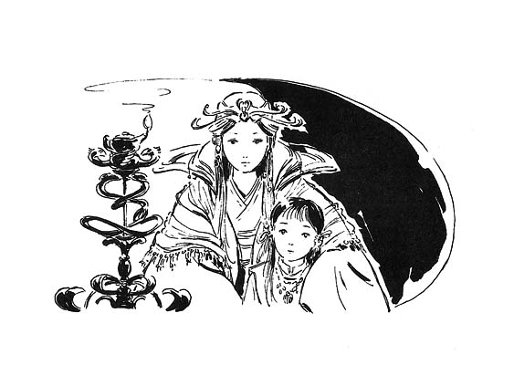
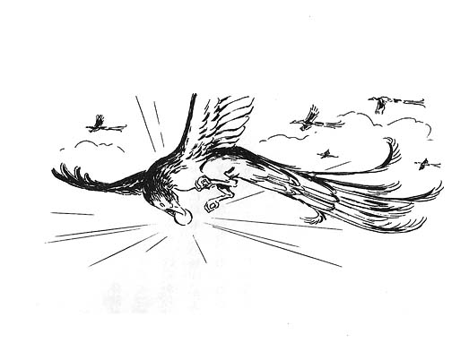

| [上橋菜穂子] 守り人シリーズ01 | |
| 上橋菜穂子 | |
| (2015) | |
|
精霊の守り人
上橋菜穂子
|
目次
序章 皇子救出
第一章 皇子のからだにやどったもの
１ 逃亡のはじまり
２ 星ノ宮の〈狩人〉
３ たのまれ屋のトーヤ
４ はなたれた〈狩人〉たち
５ にげる者、おう者
第二章 卵を食らう魔物
１ 薬草師のタンダ
２ 呪術師トロガイ
３ トロガイの文
４ ヤクーの言い伝え
５ トロガイとの再会
第三章 孵化
１ 冬の〈狩穴〉ぐらし
２ 秘倉にねむっていた手記
３ 変化のはじまり
４ シグ・サルアをおって
５ おそいくる爪
６ ナナイの手記の結末
７ 雲のみる夢
８ サアナンの風とナージの翼
９ もうひとつの運命の衣
終章 雨のなかを......
序章 皇子救出
バルサが鳥影橋をわたっていたとき、皇族の行列が、ちょうど一本上流の山影橋にさしかかっていたことが、バルサの運命をかえた。
鳥影橋は平民用の、そまつなつり橋で、ところどころ板がくさりおちて、すきまから青弓川の流れがみえる。ふだんでもあまり気持ちのよい光景ではないが、きょうは、ここのところ秋の長雨がつづいたせいで川の水かさがふえ、茶色くにごった水が白くあわだちながら、さかまいて流れていて、とくにおそろしい光景だった。
すりきれた旅衣をまとい、ずだ袋をみじかめの手槍（短槍）にひっかけてかついだバルサは、しかし、眉ひとつうごかさずに、ゆらゆらゆれる鳥影橋をわたりはじめた。バルサは今年三十。さして大がらではないが、筋肉のひきしまった柔軟なからだつきをしている。長いあぶらっけのない黒髪をうなじでたばね、化粧ひとつしていない顔は日にやけて、すでに小じわがみえる。
しかし、バルサを一目みた人は、まず、その目にひきつけられるだろう。その黒い瞳にはおどろくほど強い精気があった。がっしりとしたあごとその目をみれば、バルサがよういに手玉にはとれぬ女であることがわかるはずだ。──そして、武術の心得のある者がみれば、その手ごわさにも気づくだろう。
バルサは、風にたよりなくゆれる橋をすたすたとわたりながら、ちらりと上流をみた。そびえたつ山の肌を、まっ赤に紅葉した紅葉があざやかにそめている。その紅葉のしたを、金の止め金を光らせた牛車が一台、二十人ほどの従者にまもられながらすすんでいくのが、小さくみえた。
西日のなかで、牛車にかけられた錦と、金具がピカリ、ピカリと日をはじいてすすんでいく。牛車のさきにつけられた赤い旗が、乗る者の身分をしめしていた。
（第二皇子の行列か。山の離宮から都へかえる途中だね。）
バルサは、たちどまってその行列をながめた。これだけはなれていれば、土下座をしなくとも罪にはなるまい。それに、ちょうど日は西にかたむいて背後からてっている。逆光のなかではバルサの姿など点にもみえないだろう。山陰の紅葉のしたの行列は絵のようにうつくしかった。
バルサは、この国のうまれではない。それに、けっしてわすれることのできぬある理由から、王とか帝とかいう者たちへの尊敬の念は、ほとんどもっていなかった。ただ、まるで一幅の絵のような、一瞬のうつくしさにみとれていただけだった。
が、つぎの瞬間、おもわぬことがおきた。がんじょうにつくられている皇家専用の山影橋のなかほどまで牛車がさしかかったとき、とつぜん、牛があばれはじめたのだ。ハミをひいていた従者の手をふりきって、牛は背をゆみなりにして、まえに、うしろに、蹄をけあげ、角をふりたて、あばれくるいながら暴走した。従者たちがとめるまもなく、牛車が大きくふりまわされるかたちで横転し、なかから小さな人影が宙にとばされるのがみえた。
人影が手足をばたばたさせながら谷川におちていく......。と、思ったときには、バルサは荷をおき、上衣をぬいで、短槍の石突の金具に、ふところからだした巻縄の先端の金具をカチリとつなぐと、短槍をビュッと岸になげていた。短槍は一直線に岸にとび、ふかぶかと岩のあいだの地面につきささった。三、四人の従者が皇子をおって川にとびこんだのを目のはしにとらえながら、バルサは縄をもって、だく流にとびこんだ。
石畳にたたきつけられたような衝撃がきた。つかのま息がつまり、意識が遠くなった。バルサは、だく流にはげしくもまれながら、縄をたぐって、いったん手近の岩にのぼった。ぬれてまといつく髪をかきあげて、じっと目をこらすと、小さな赤い物が流れてくるのがみえた。ひらひらと、その赤い物からときおり手がみえては、しずんでいる。
（気絶していておくれ。たのむから、気絶していておくれよ。）
バルサはねんじて、見当をつけると、ふたたび激流にとびこんだ。流れにさからって泳ぎながら、ちょうど流されてたっする地点に皇子のからだがくるよう、バルサはぐいぐい水をかいていく。身をきるような冷たい水だった。ゴボゴボッと耳のおくで水音がなった。にごった水流のなかで、かろうじて皇子の衣の赤い色だけがみえた。
のばした手のなかを、皇子の衣のはしがすりぬけた。
（しまった！）
ほぞをかんだ瞬間、きみょうなことがおきた。まばたきするあいだほどの、ほんの一瞬、バルサは、からだがふわっと軽くなるのを感じた。あれほどあれくるっていた水の流れがとまり、音さえもきえさり、どこまでもすきとおった青い空間のなかで静止している。皇子の姿だけが、くっきりとみえた。なにがおきたのかわからぬままに、バルサは、ふたたび赤い衣に手をのばした。
つかんだ、と思ったとたん、手がちぎれそうな衝撃がきた。たったいまのふしぎな一瞬は、夢にすぎなかったのか、はげしい水流がふたりのからだを木の葉のようにもてあそんだ。
渾身の力をこめてバルサは皇子のからだをひきよせ、その帯に縄の金具をかませた。こおりそうな水のなかで、かじかんだ手で、それだけのことができたのは奇跡にちかかった。バルサはまず、自分が縄をたどって岸まで泳いだ。からだがばらばらになりそうにつかれていたが、それから、ぐいっぐいっと縄をたぐって、ぐったりとうごかない皇子のからだをひっぱりよせた。
ひきあげた皇子の顔は、まっ青だった。まだ、十一、二歳ほどだろう。ありがたいことに、ねんじたとおり、おちた衝撃で気絶したらしい。腹が水ぶくれしていなかった。バルサは活をいれ、蘇生術をほどこした。やがて、せきこむ音とともに、皇子の呼吸が回復した。
（やれやれ。どうやら命はすくえたみたいだね。）
バルサは、ため息をついた。だが、いまの彼女にはしりようもなかったが、これは、すべてのはじまりにすぎなかったのである。
第一章 皇子のからだにやどったもの
１ 逃亡のはじまり
のこっていた酒の最後の一滴を飲みほして、バルサはまんぞくげにため息をついた。
（しかし、おどろいたね。）
ここは、都の二ノ宮の館だ。第二皇子の命をすくったとはいえ、バルサは平民以下の異邦人である。よくても報奨金をいくらかわたされて、それでおしまいだろうと思っていた。事実、あの川原では、あとで報奨金をさずけるので、今夜の宿をおしえるようにいわれて、それで皇子の行列とはわかれたのである。
ところが、安宿におちついたバルサのもとにやってきた使いは、報奨金をそこでわたすのではなく、第二皇子の母君である二ノ妃の館で接待のあとにわたしたい、といってきたのだ。
それでまいあがるほど、バルサは世間しらずではなかった。皇家やら皇族やらが下じもの者にやさしくふるまうときには、かならずうらがある。やっかいなことにかかわってしまったな、と思ったが、この状況で、おまねきをことわったりしたら、無礼なふるまいとして、それこそやっかいなことになるだろう。しかたなくいわれるままにまねかれたバルサだったが、二ノ妃の歓待は、じつに真心のこもったものだった。
この〈新ヨゴ皇国〉では、神の子孫であるという帝は三人の妃をめとる。はじめに皇子をうんだ妃が一ノ妃となり、第二皇子をうんだ妃が二ノ妃になる。いまはこの国の皇子はあの第二皇子までで、三ノ妃はまだ皇子をうんでいない、という話はきいていたが、しょせんは雲のうえの人びとの話であり、バルサはそれ以上くわしいことはしらなかった。
二ノ妃はよほど皇子を愛しているのだろう。館のもっとも〈下ノ間〉であるとはいえ、大きな火鉢に火がたかれた部屋にバルサはまねかれ、これまで一度も口にしたことのないような、ごちそうをだされたのである。
この国では、皇族の目を下賤の者がみたら、それだけで目がつぶれるといわれている。皇族は神の子孫であり、その目には神力がやどる。そういう力は、意識せずとも水が低きに流れるように流れるので、うける力のない下賤の者がふれれば、傷つくというのである。
だから、まねかれたとはいえ、お妃ご自身が姿をみせることはなかったが、第二皇子の侍従長が心からの感謝をのべてくれた。
バルサは、ごちそうとうつくしい色ガラスの杯につがれた美酒をたのしんだ。毒殺の危険は考えなかった。なにかの事情があって自分の口をふさぎたい、というようなぶっそうなことであったとしたら、わざわざ人前で宮にまねくことはない。むしろ、あの安宿に刺客をはなって、物取りにでもみせかけたほうが、ずっとかんたんだからだ。
からりと油であげられ、かむとジュッとうまい肉汁がでる鳥やら、牛の乳からつくられた複雑なうま味のある汁物やらを十分にたのしんだバルサが、侍従長に、
「たんのういたしました。──わたしのような下賎の者には身にあまる食事でした。」
と、頭をさげると、上品に白い髭をととのえている侍従長が、うなずいた。
「なんの、皇子様のお命の代償としては、このていどではとてもつくせぬ。お妃様より、今宵はこちらで一夜、ごゆるりと泊まられるようにつたえよと、もうしつかっておりまする。」
バルサは、かすかに眉をひそめた。
「いえ、そこまであまえては、かえってもうしわけございません。ごちそうをいただいただけで、じゅうぶん感謝しております、と、おつたえください。」
「いや、いや。」
侍従長は、かたくなるな、というように、ちかよってバルサの肩をたたいた。
ふいに、耳もとに早口の無声音がささやかれた。
「──あなたをみこんで、どうしてもおねがいしたきことがござる。おたのみもうす。泊まってくだされ。」
侍従長の声は、すぐにふつうにもどった。
「この館の湯は、まさに極楽。一生の思い出にゆっくりとつかられるがよろしかろう。」
バルサは頭をさげ、そのもうしでをうけるしかなかった。
侍従長の言葉どおり、この館の湯殿はすばらしいものだった。ちかくにわく温泉の湯を素焼きの長い筒をつかって、館のなかにひきこんでいるらしい。バルサは、すべすべとした大理石をおしげもなくつかってつくられた豪華な湯屋から、庭園の一角を塀でかこってつくられている外湯場へでてみた。湯にあたたまった肌に冷たい外気がしみたが、いそいで湯につかると、じんわりとぬくもりが全身にひろがり、まさに極上の気分だった。
夜気に白い湯気がたちまじり、庭のあちこちにたかれている常夜の篝火の、ぼんやりとした明りに、紅葉した庭木がゆれている。みあげれば、満天の星空だった。
（こうなったらもう、なりゆきにまかせるほか、ないな。）
湯からあがり、竹編みのカゴに用意されていたあたらしい肌着を身につけると、そのうえから古い旅衣をまとった。つきそっている侍女が顔をしかめた。
「あの、あたらしい衣も、そこに......。」
バルサは、ほほえんだ。
「ああ。ありがとう。ねるときには、着なれた衣のほうが、ねやすいからね。とくに、こんなもったいないところじゃ、ねむれないんじゃないかと思ってさ。」
侍女は苦笑した。
「それに、ぼろぼろだけど、これしかもっていないわけじゃないんだよ。ちゃんと二枚もってて、あらってはかえてるのさ。」
長くうす暗い廊下を侍女に案内されて、バルサは寝間にはいった。寝間は四方を金糸銀糸でおられた錦をはったふすまでかこまれている。あけてはみなかったが、この四つのふすまのむこうにもおなじような部屋があるのだろう。床から一段高くなった畳には寝具がすでにのべられていた。
バルサは、自分の短槍と荷が寝床のわきにおかれているのをたしかめた。それから帯だけゆるめて、寝具にもぐりこんで、うーんと身をのばす。ふわふわの夜具が、ここちよかった。
（こりゃ、まあ、雲にのってるみたいだね。こんなもんに毎晩ねてるから、雲上人っていわれるのかねぇ。一生に一度の極楽気分ってやつだね。いつまでつづくかしらないが。）
バルサの度胸はなみではない。昼間のつかれと湯あがりのけだるさも手伝って、バルサはあっというまにねこんでいた。ふつうの人のねむりは、じょじょにふかくなり、あさくなったりふかくなったりするものだ。めざめても、さっとふだんの状態になるわけではない。けれど、バルサのねむりは谷底におちるように、すっとふかいねむりにはいり、さめるときは、あっというまにさめる。おさないころからの修行で、そういうふうにからだがなってしまっているのだ。
バルサがめざめたのは、真夜中だった。バルサの目をさましたのは、人の気配だった。廊下からではなく、おくの寝間から人の足音がちかづいてくる。気をつけてはいるようだったが、足音のしのばせかたをしらぬ、素人の歩き方だった。バルサは身をおこした。
「バルサ。」
ふすまのむこうから、ささやかれた声は、おどろいたことに女の声だった。
「おきています。──どうぞ。」
そうっとふすまがすべり、銀の手燭をもった人影が、小さな人影をつれてはいってきた。たよりない明りでうかびあがった少年の顔をみて、バルサは目をみひらいた。
（なんと、まさか。）
みまちがうはずがない。その顔は、夕刻、川からすくいあげた少年の顔だった。

「第二皇子、様？」
まともに目があった瞬間、さすがのバルサも反射的に、目がつぶれるのではないか、と思った。だが、そんなことはおきなかった。自分の目をみているのは、雷のような力をひめた目ではなく、つかれきり、いまにもねむりこみそうな少年の、とろんとした瞳だった。
「...心配しましたが、だいじょうぶなようですね。さすがは、強いとうわさの女人。わたしたちの目をみても、目がつぶれることはないようじゃ。」
バルサは、目のまえにいるおさなく、かぼそい女人が、二ノ妃だと思わざるをえなかった。さっと正座して下座にかしこまると、妃がささやくように語りかけてきた。
「きのうは、皇子をよくぞすくうてくれましたね。──わたしも山の離宮にわたるたびに、あの青弓川がおそろしかった。あのような川によくぞ高いつり橋からとびこんでくれました。従者も四人とびこんだようだが、ひとりが下流で岩にひっかかってたすかったほかは、まだ行方もしれぬ。」
（あわれな......。）
バルサは目をとじた。あの状況では、つづいてとびこまねば皇子をたすけようとしなかった罪にとわれただろう。──バルサは、そういうえらぶ道のない人の死がたまらなくいやだった。
「そなたは、なにゆえ我らがこんな夜ふけに、しかも、じきじきにふたりきりできたか、ふしぎに思っているでしょうね。......バルサ、顔をあげて、わたしにみせておくれ。」
バルサはいわれるままに顔をあげ、妃をみた。そして、胸をつかれた。よくみると、そのおさなさののこる顔は、病人のように青白くやつれはてていたのだ。妃の目に、光がうかんだ。
「ああ、従者どもがもうしていたとおりのよい面構えじゃ。従者どものうわさがおくの侍女たちの耳にはいり、わたしにつたわってきたのです。皇子をたすけた女人は、女ながら人の命をたすけることを生業としている者だと。『短槍使いのバルサ』という名は、その筋の者のあいだではしらぬ者はないと。姿かたちは遠い北方のカンバル王国の者ににているが、流れ者でどこの国の言葉もみごとに話し、短槍のつかい手で、これまでずいぶんおおくの者の命をすくってきたのだと。......そうなのでしょう？」
バルサは目をふせた。
「......おそれながらもうしあげます。それは、あまりにきれいすぎるうわさでございます。わたしは下じもの言葉でもうす、用心棒です。金でやとわれて人をまもるのが仕事です。」
妃が、うなずいた。
「つまり、お金をそなたにはらえば、人をすくってもらえるのですね。」
「えっ、いや、その。」
バルサは、つまった。
「まあ、かんたんにもうせばそのとおりですが、しかし、かならずすくえるとはかぎりません。」
妃の表情がきびしくなった。
「それは、おかしい。売り物と買い値がおなじ価値をもつことぐらい、下じものくらしとは縁のないわたしでもしっています。あなたの売り物が人をすくうことであるなら、かならずすくえねばお金はもらえぬはず。」
ふっとえみがこみあげてきた。──意外にしんの強いお妃様らしい。
「そのとおりでございます。ですから、まもれぬときは、わたしはお金をもらえません。」
妃は盾をひそめた。
「なぜ？ お金は仕事のあとでもらうのかぇ？」
「たいがいの仕事は、前金で半額、仕事の成功のあとで、のこりの半額をもらいますが、わたしがいま、もうしあげた意味は、ちがいます。──わたしの仕事が失敗したときというのは、たいがいが、わたしの死を意味している、と、もうしあげたかったのです。」
妃は、つかのま、だまりこんだ。
「なぜ、命をかけてまで、そのような生業でお金をかせぐのですか。」
「──おそれながら、わたしめの身の上話などをしておりましたら、夜が明けてしまいます。」
妃は、ためらい、ふすまにもたれてぐっすりとねむりこんでしまっている息子をみやった。
バルサは、妃の用件は、この皇子の用心棒をしてくれ、ということだろうと見当をつけていた。なにか、宮中に不穏な動きでもあるのだろう。それで、皇子の身が心配になった妃は、宮中にかかわりのない自分に、皇子の護衛をたのもうとしているのだろう。
妃にとっては、自分は、みたこともきいたこともないような、あたらしい駒なのだ。と、バルサは、冷静に判断していた。このうきよばなれした館のおくに住む妃にとって、急流にとびこんで皇子をたすけたという、めざましいはなれ技が、神技のように思えたのだろう。そして、バルサなら皇子をすくえると、いちずに思いこんでしまったにちがいない。
それが幻想にすぎないことを、さとらせねばならない。ただの用心棒にすぎない自分に、宮廷内の跡目騒動を、どうこうできるわけがないのだ。
しかし、妃がいいだしたことは、バルサの予想をはるかにこえることだった。
「......わたしは今宵、この子と今生の別れをする覚悟をしてきたのです。」
妃の口からおしだされた言葉のあまりの意外さに、バルサは、はじかれたように顔をあげた。妃は、バルサをみつめて話しはじめた。
「この子は命をねらわれています。きのう橋のうえで牛があばれだしたのも、きっと偶然ではないでしょう。半月まえには、皇子の入浴中に温泉の噴出口の岩がふいにくずれたとかで、きゅうに熱湯が湯筒からふきだしました。そのときには、ほんとうに偶然に、皇子が湯船の湯あかに足をすべらせてころんだために、うなじと耳にかるい火傷をおったくらいですみましたが、そうでなかったら、全身に大火傷をおって、命がなかったでしょう。」
「──失礼をおゆるしください。......ですが、それは事故ではないのですか。」
おこるかと思ったが、妃はつかれたように、ため息をついただけだった。
「みな、事故だといいます。でも、それはこの子が命をねらわれる理由をだれもしらぬから、そういうのです。」
ヂヂッと手燭のロウソクがなった。
「山の離宮にいた二月ほどまえから、この子は夜、うなされるようになりました。みょうな夢をみるというのです。毎晩、毎晩、きまっておなじ夢を。......けれど、おきたときには、その夢をおぼえていないのです。ただ、ひとつの感じだけが、強く心にのこっているのだそうです。」
いいづらそうに口ごもってしまった妃を、バルサはうながした。
「......どのような？」
「それが──かえりたい、というのです。」
「かえりたい？ どこへ。」
「どこかへ。どことはわからぬところへ。胸をかきみだされるほど、強く、かえりたいのだそうです。そのうちに、夜みはっていないと、うろうろと歩きだすようになりました。
この話が帝のお耳にはいり、星読博士が離宮へつかわされてやってきました。」
星読博士とは、この世とあの世の理をつかさどる〈天道〉に精通している、星ノ宮の博士だということぐらいは、バルサもしっていた。
「ガカイという、その星読博士は、しばらく皇子の話をきき、寝ずの番をはじめました。──その夜、おそろしいことがおこったのです。」
妃のくちびるが、ふるえていた。
「みながねしずまり、わたしもうとうととしはじめた夜半すぎ、ふいに、わたしはめざめました。めざめはしたのですが、からだがまったくうごかないのです。ひっしに首をまわして皇子をみて、おどろきました。皇子のからだが、青白く光っているのです。しかも、ゆっくりと脈うちながら。──まるで皇子のからだがさなぎで、なかにべつの生き物がやどっているようにみえました。
と、声がきこえました。星読博士が、ふるえながらなにかとなえているのです。星読博士が光る刀を皇子のうえにふりあげたのがみえて、わたしは、われをわすれて、渾身の力をふりしぼって、さけんだのです。とたんに、ふっと光がきえました。まるで、夢がさめたかのようでした。きゅうに物音と夜気の冷たさがもどってきて、あのあいだは、なにも感じていなかったのだと気づきました。皇子はなにごともなかったかのようにねむっており、わたしは夢をみたのだと思いました。
でも、夢でなかったあかしに、星読博士が湯でもかぶったかのように、汗にびっしょりぬれて、わたしをにらんでいたのです。」
「──お妃様を、ですか？」
妃は、歯をくいしはった。
「あの男は、とんでもないことを──とんでもないいいがかりをつけてきたのです。たぶん、ふるえているところをみられたはずかしさからなのでしょうが、あの男は──あの男は......。」
妃はふるえていたが、やがて、はきだすようにいった。
「皇子を指さして、ここにねているのはほんとうに帝の血をひいた皇子か、ときいたのです！」
「なぜ!?」
妃は、バルサをにらみつけた。
「なぜ？ それはわたしもしりたい。星読博士は、どんなにといつめても、ついにこたえてはくれませんでした。ただ、皇子がもしまことに帝の血をひいていれば、あのようなモノにやどられるはずがない、とだけ、くりかえすのです。あのようなモノとはなにかとたずねても、首をふるばかり。そして、わたしをみすえて、こういったのです。......ここにねむっている者は、遠からず、死ぬであろう、と。」
妃の口から、こらえきれぬすすり泣きがもれた。
「わたしは、皇子にたいして、おすくいする策もたてずに死を予言するとは！と、いかりました。すると星読博士は、まこと皇子ならば死にますまい。皇子ならば、あのようなモノをやどすはずがないのだから。ゆえに、わたしは皇子の死を予言などしておりませぬ、といいはなったのです。」
たかまった母の声に、それまで、うつらうつらしていた皇子が、びくっと目をさました。彼はなにがおこったのかわからぬまま、すすり泣いている母の背をおずおずとなでた。
皇子はバルサをふりかえり、きっとにらみつけた。その瞳があまりにも妃ににているのが、ふしぎでもあり、なぜか、あわれでもあった。
「そなた、なにか母君に無礼をはたらいたのか！」
「しっ。」
妃は皇子の口を小さな手でふさいだ。
「ちがうのです。よいときにめざめましたね、チャグム。わたしは、あなたの命をすくうことをこの方に、たのもうとしていたのですよ。」
さすがのバルサも、自分がとんでもないやっかいごとに、のみこまれつつあるのを感じて、冷汗をかきはじめた。
「いや、まってください、お妃様......。」
「まって。最後まで話をきいてください。おねがいします。」
チャグム、とよばれた皇子は、おどろいて母をみあげた。これまで母が平民に、たのみごとをするところなど、みたことがなかったのだろう。
「チャグムもよくおききなさい。──あなたは、こんなことをしるには、あまりにおさなすぎるけれど、それでも今夜、このときにしかきくことができないと思って、よく心にきざみつけなさい。いいですか。」
チャグムは、母の気迫におされたように、こくっとうなずいた。
「星読博士が語ったことを、あたしは昼も夜も考えつづけました。そして、ようやくさとったのです。星読博士はくわしいことはあかしてはくれなかった。どうも、あの博士自身、皇子にやどっているのがなにかは、わからないようすでしたし。それでも、つまりは、こういいたかったのでしょう。このチャグム皇子には、なにかおそろしいモノがやどっている。ほうっておけばそのモノが、遠からずこの子を殺すだろう、ということなのでしょう。
そして、はっきりしているのは、神の子である帝の血をひく者に、そのようなモノなどやどれるはずがない──やどったのなら、この子は帝の子ではない。そう博士はいいたかったのだということです。」
「わたしは、父君の子ではないの？」
目をみひらいた皇子を妃はみつめた。妃はしずかな、しかし、しみとおるような声でいった。
「天地神明にちかって、あなたは帝とわたしの子どもです。」
そして、妃はバルサをみた。
「それだけは、まちがいないのです。となれば、星読博士でさえわからぬ力が、この子にはたらいたことになります。それで、わたしはひそかに、都で評判の高い呪術師のもとに、皇子のこととしてではなく、ひとつの謎かけとして、このことを文にしてわたしたのです。」
「なんという呪術師ですか？」
「トロガイという者です。」
「ほう！ よくつかまりましたね。あの人は、風のように流れ歩いているので、なかなかつかまらないのだけれど。」
皇子が、まためんくらったような顔をした。妃にこんな口をきく平民をみたのも、はじめてなのだろう。バルサがほほえみかけると、顔をしかめた。──かわいげがない。
「力は、たしかなのですか？」
「ええ。わたしがしるかぎりでは、最高です。」
妃の顔に、すこしおちつきがもどった。かすかに、くちびるにえみさえやどった。
「......ともかく、その呪術師の返答には、
──そのモノが、なんであるとはいいがたいが、もしも、はるかむかしにほろんだとされているモノならば、やどられた者が死ぬのは、やどったモノをたすけられなかったときであるといわれている。夏至までやどられた者が生きのびて、やどったモノをたすけられれば、その者も生きのびられるだろう。──
と書いてあったのです。」
「それだけですか？」
妃はうなずいた。
「たしかに、これだけでは、謎だらけです。わたしは、すぐにもう一度くわしい話をしろうと文をつかわしたのですが、そのときには、トロガイは都をたって、どこかへいってしまったあとでした。でも、たったひとつ希望がうまれただけでも、うれしかった。」
妃の目に、ふたたびきつい色がやどった。
「......けれど、ほっとするまもなく、皇子は、命にかかわるような事故にあいはじめたのです。それで、気づきました。星読博士がいっていたことの、もうひとつのおそろしい意味に。」
皇子が、きゅっとこぶしをにぎりしめた。
「皇子であるこの子が、なにかおそろしいモノにやどられたなどといううわさがひろまったら、神の子孫であるという帝の威信に、なおしようのない傷がつきます。......だから帝は、人にしられるようになるまえに、この子を事故にみせかけて殺そうとしているのでしょう。」
「ち、父君が？ 父君が！」
ふるえる声でさけんだ皇子の口をふさぎながら、妃は息子をかたくだきしめた。
「帝を、うらんではなりません。帝には、ほかにどうしようもないのです。いいですか、あなたをたすけるためにツキモノ落としの術などをおこなったら、かならず、だれかの口からそれがもれてひろがっていくでしょう。そうなったら、もうことはあなただけの問題ではない。この国が、しっかりとありつづけるためにもっともたいせつな、帝のご威信の問題になってしまうのです。帝は、あなたをたすけるために、指一本でもうごかすわけにはいかないのですよ。......あなたが皇子であるかぎり、帝はあなたを殺さねばならないのです。」
妃の語尾がふるえて、きえた。沈黙がひろがった。
のどをならして、ひっしにしゃくりあげをとめて、若い妃はバルサをみつめた。
「わたしは考えました。そして、心をきめたのです。きのう、ぬれた髪をまっ青なほおにはりつかせたこの子をみたときに。......わたしは、この子に生きていてほしい。たとえ、皇族としての一生をおくれなくとも、生きてさえいれば、さまざまなよろこびにみちたときをすごしていけるでしょう。恋することをしり、子をえるよろこびをしり......そういう一生をこの子がどこかですごしているとさえ思えれば、わたしは、たとえあえずとも、がまんできる、と思いました。この子の死顔をみてくやむよりは、はるかに、はるかに、そのほうがよい、と。そして、そうできる機会があるとすれば、いま、このときをおいて、ほかにないと。
バルサ、そなたは強い。わたしはそなたに、下じもの民草では一生かかってもえることができないほどの報奨をさしあげます。だから、この子をすくって──まもって、わたしのかわりに、この子にしあわせな一生をあげてください。」
妃は、やさしいしぐさでチャグム皇子のからだをおこすと、ふところからふたつの袋をとりだした。錦の豪華な袋のひもを妃がほどくと、ひとつの袋のゆるんだ口からは金貨が、もうひとつの袋からは真珠が、ロウソクのゆれる光に、さんぜんとかがやいてみえた。
妃は、どうじゃ、というようにバルサをみておどろいた。バルサは、これほどの宝を目にしても、まったく表情をうごかしていなかったのだ。
「......お妃様、まえにもうしました。命がなくなっては、どれほどの宝もうけとることはできませぬ。──無礼をかえりみず、率直にいわせていただきます。これは、あまりにひきょうなしうちでしょう。」
妃の顔に、しんじられぬ、という表情がうかび、つぎに、さっと青ざめた。いかりに全身がふるえはじめた。
「ひきょう、とは、どういうことです？」
「わたしは、皇子のお命をすくいました。それなのに、ほうびが命をうばわれることでは、ひきょうともいいたくなります。」
「だれも、そなたの命をうばうなどとは、いっておらぬ！」
バルサは、お妃の目をまっこうからみつめた。
「そうでしょうか？ わたしは身分の低い者。ここによばれれば、こないわけにはまいりません。お妃様がお話をされたければ、きかないわけにはまいりません。──そして、このお話をきいたら、お妃様ののぞみをかなえるために死ぬか、ことわってここで死ぬか、そのふたつの道しかわたしにはのこされておりません。どちらも、確実にわたしの無残な死を意味しています。」
皇子が、自分をにらみつけているのはわかっていたが、バルサはあえて無視し、お妃だけをみつめつづけた。この命のせとぎわにあって、無礼もくそもあるか、というのがバルサのいまの気持ちであった。
「なるほど、──わたしはひきょうだのぅ。」
ぽつりと妃がいった。
「けれど、わたしにはほかにえらぶ道はない。ひきょうであろうと、なんであろうと、皇子をまもるためなら、なんでもする。──バルサ......。」
妃が歯をくいしばったのがわかった。
「たしかに、この秘密をしったそなたを、ただで生かしておくわけにはいかぬ。ここで死ぬか、皇子をまもり、この宝をもって生きぬく希望にかけるか......どちらをえらぶ？『短槍使いのバルサ』よ！」
バルサは、ほほえんだ。冷たいえみだった。
「わたしのうしろに、三人。廊下にふたり。あなた様のうしろに三人。意外に心をゆるせる手勢がすくないのですね、お妃様。......だれかひとりでもうごいたら、その瞬間に、わたしの短槍が皇子をつらぬきます。うごかぬように。」
バルサは短槍を手にしていた。妃と皇子の視線がそれたすきをねらって、短槍を手もとにひきつけておいたのである。寝間の周囲から殺気がふくれあがった。
妃は、バルサをみつめ、くちびるをかみしめた。
「そのお宝と、皇子をいただきましょう、お妃様。」
「............！」
妃は皇子をだきしめ、バルサをにらみつけていた。
「さあ、はやく。夜が明けてからでは、にげきれません。わたしたちをぶじににがしたかったら、皇子の顔をかくす黒い頭巾をもってこさせなさい。それから、安全なにげ道をわたしにおしえるのです。──そして、そのにげ道にわたしたちがたっしたころをみはからって、この宮の皇子の寝間に火をかけなさい。皇子がれいの夢をみてみずから火をつけたことにすればよい。そして、火のまわりがはやくて、皇子をたすけだせなかったことにするのです。──皇子は、死んだことにせねばならない。そうでなければ、にげきれない。たとえ、焼け跡から死体がみつからぬとわかってうたがわれるとしても、それまでのときがわたしたちの生死をわけるでしょう。ことの成否は、お妃様、あなたの演技にかかっていることをわすれないで。」
妃は、あぜんとしてバルサをみつめている。バルサのえみから冷たいものがきえていた。
「そなた......。」
「すこし、うっぷんをはらそうとしただけですよ。ここで死ぬのをえらぶはずがないでしょう。わたしは用心棒です。──皇子は、ひきうけました。さあ、おはやく！」
妃の目から、みるみる涙があふれた。
この館の者がすべて味方というわけではなく、なるべく人にしられずに、すべてのしたくをととのえるには、かなりの時間がかかった。あまりの運命の変転に、ぼうっとしている皇子をだいて、バルサがおしえられたとおり、谷川へぬける秘密のぬけ道へでたときには、闇は、うす青い夜明けの闇へとかわっていた。身をきるような夜明けまえの寒さがふたりをつつんでいる。息が白くこおった。
遠く、人の声がきこえた。なにをいっているのかはわからないが、ざわめきが、しだいに大きくなっていく。黒く影にしずんでいる館の一角が、かすかに明るくなり、やがて、ぽうっと灯のように炎の光がみえはじめた。
バルサは、おさない皇子の小さなからだをひきよせた。皇子はあらがいかけたが、やがて、されるままになった。
「ごらんなさい。いまあの火のなかで、皇子であるあなたは死につつある。──この夜が明けたら、あなたは皇子ではない。ただのチャグムだ。それを、心にたたきこむのです。」
皇子のくいしばった歯のあいだから、嗚咽がもれはじめた。
「人の運命なんて、わからないもの。生きのびれば、いつかまた、母君にあえる日がくるかもしれない。死ねば、それっきりだ。──わかったかい？チャグム。」
チャグムは、きりきりとくいしばった歯をならして、バルサをみあげた。そして、流れる涙をむちゃくちゃにぬぐいながら、かすかにうなずいた。
（この皇子様には、気骨がある。）
バルサは、ほほえんだ。そして、チャグムの背をおして、むうっと硫黄のにおいのこもった、湯の排水溝を利用したぬけ道に、足をふみいれていった。
２ 星ノ宮の〈狩人〉
のぼったばかりの朝日のもとで、二ノ宮の館は無残な姿をさらしていた。いやなにおいをふりまきながら、まだぶすぶすと煙をあげているその焼け跡を、じっとながめているひとつの人影があった。
彼は、まるで、そうぞうしく走りまわっている人びととはべつの空間に、ぽつんとひとりたっているようにみえた。ふかい紺色の一重の衣をまとっている。彫りのふかいととのった顔に、筆でえがいたかのような形のよい眉。その眉のしたには、おそろしいほどにきつい光をたたえた、うすい鳶色の瞳があった。......この若者こそ、『星ノ宮いちの英才』とささやかれている、星読博士のシュガであった。
（あれが、火をおこすはずがない。わたしの推測が正しければ、あれの性は水のはずだ。）
心のなかで、シュガはいらだたしげにつぶやいた。
（だから、あのときわたしにまかせてくださるよう、たのんだのに。ガカイなどの手におえることではなかったのだ。みよ、ことがどんどんこじれていく。）
シュガは、小さく舌うちをすると、くるりと焼け跡に背をむけて歩きはじめた。昨夜は、星読みの番にあたっていたので、一睡もしていない。目のおくにおもくるしいつかれがよどんでいたが、このまま宿舎にもどってねむる気には、どうしてもなれなかった。ほんのすこしまよったが、シュガはけっきょく、星ノ宮にもどって聖導師様にめどおりをもうしこむ決心をした。
『聖導師』とは、星読博士の最高位の者の尊称である。聖導師はこの国最高の賢者であるとされ、帝の意向さえ左右することのできる強大な権力をもっていた。
星読博士がなぜ、それほどの力をもっているのか。それをしるには、この国の歴史をしらねばならない。『新ヨゴ皇国正史』に書かれている建国の歴史を、ごくかんたんに物語ってみると......。
この〈新ヨゴ皇国〉は、北方をけわしい青霧山脈にまもられ、南、東、西の三方は海にかこまれた広大なナヨロ半島を領土としている。〈新ヨゴ皇国〉が建国されるまえ、この地にはヤクーとよばれる人びとが住んでいた。大きなあごがめだつ、肌が黒い人びとで、ほんの数十人ずつで集落をつくり、そんな小さな集落がぽつりぽつりと、季候のよい半島の平野部にちらばっていたのだという。彼らは畑をつくり、けものを狩ってくらしていたらしい。
ヤクーたちがこの半島でおだやかなときをすごしていたころ、海のむこうでは、いくつもの王国がさかえ、たがいの領土をとりあいながら、はげしい攻防をくりひろげていた。
いまからおよそ二百五十年まえ、それらの王国のなかで、ひときわ強大な勢力をほこっていた〈ヨゴ皇国〉に、カイナン・ナナイというふしぎな男がうまれた。ひどく大きな頭に小さなからだという、なんともふうさいのあがらない姿をしていたが、この男はたいへんな才人であった。星を読むだけで、はるか遠方におきていることをいながらにしてしり、未来をうらなうことさえできたという。──これは、ナナイが〈天道〉を読むのにたけていた、ということをしめしている。
〈天道〉とは、〈ヨゴ皇国〉のもといとなった〈古ヨルサ王国〉の時代から、とぎれることなくしんじられてきた宗教であり学問であった。〈天ノ神〉がこの世をうごかす、そのありかたを〈天道〉とよび、一日を八つの刻にわけ、それぞれの刻の天のようすを読むことによって、この世がどううごいていくのかを読むことができる、と考えられてきた。──ナナイは、この〈天道〉をしんじ、〈天ノ神〉を祭る神官だったのである。そして、現在の星読みたちも、この〈天道〉をうけつぐ者たちなのである。
さて当時、〈ヨゴ皇国〉には四人の皇子がおり、重病で死にかけている帝のあとをだれがつぐかで、血で血をあらう争いをくりかえしていた。だが、その四人の皇子のうち、第三皇子のヨゴ・トルガルは、やがて、血のつながった兄弟同士でのみにくい争いにいや気がさし、みずから皇位の相続を放棄することを宣言してしまった。二十五歳だったトルガルは、都から遠くはなれた北の海辺の館にひきこもり、妻子とともにしずかな生活をはじめたのだった。
ある夜、この館にカイナン・ナナイがあらわれた。そして、トルガルの運命とナヨロ半島の運命を大きくかえる、ふしぎな予言をつたえたのである。
『北の海をわたり、緑なす半島にわたるがよい。そこにはしずかな楽園がある。そこは〈天ノ神〉の声がもっともよくきこえる地である。
半島の北には霧にけむる、けわしい山脈があり、北の国々からの侵略をふせぐであろう。半島の三方をかこむ海は、この大陸の国々からの侵略をふせぐであろう。
霧ふかき山から流れでる川がうんだ、扇形の平地に都をきずくがよい。この地に〈天ノ神〉の威光をみたせ。なぜならば、そなたは、〈天ノ神〉のご意思をこの世にいかすために、その加護を一身にうけてうまれた、天子だからである。』
トルガルがナナイの予言をうけたといううわさは、またたくまに国じゅうにひろまり、おおくの者が天子たるトルガルにしたがって楽園にわたろうとあつまってきた。トルガルは心をきめ、彼らをまとめて船団をつらね、国をはなれた。
ナナイは船のうえから星を読んで正しい道をしり、大海原をわたって、船団を緑なすナヨロ半島にみちびいた。トルガルはナナイのみちびきにしたがって川をさかのぼり、やがて、青霧山脈から流れでた川が二本にわかれる場所にたどりついた。そこにはナナイの予言どおり、二本の川にはさまれた、ゆたかな扇形の平地があった。
おだやかな男であるトルガルは、そこに住んでいたヤクーたちを武力でおいはらおうとは考えていなかった。しかし、ヤクーは、みたこともない、きらびやかな人びとのおとずれにおどろいて、集落をすてて、みんな山ににげこんでしまったのだという。
トルガルはナナイのおしえにしたがって壮麗な都をきずき、田の開墾をはじめたが、ふしぎなことに、最初の年は一粒の稲もみのらなかった。ナナイは星を読んで、凶作の原因が、〈天ノ神〉の威光をにくむ、この地の魔物のせいであることをしった。この地の魔物は、川がしょうじる青霧山脈の山奥に住み、わきでる水に呪いをかけていたのである。
ナナイは〈天ノ神〉に天子をまもってくれるよういのった。七日七晩、ナナイは食をたち、ひたすらにいのりつづけた。すると、八日目の夜、ナナイの耳に〈天ノ神〉の声がひびいた。
『トルガルに我が印をきざんだ聖なる剣をもたせ、八人の猛き武者とともに、青霧山脈のおく、青弓川のいずる泉へむかわせよ。
そこに、魔物に魂をのまれた者がいる。その者をたおし、その血を川に流すがよい。魔物の血が、魔物のかけた呪いをあらい流してくれるであろう。
そのときはじめて、この地は清浄になり、〈天ノ神〉の恵みにみちた地となるのである。』
ナナイはこのお告げをトルガルにつたえ、トルガルの剣に、〈天ノ神〉の象徴である北極星の印をきざんだ。これがいまも皇家につたわる神剣〈星心ノ剣〉である。トルガルは家臣の武者のなかから、もっとも心正しく勇敢な八人の武者をえらびだし、〈星心ノ剣〉のみを腰におびて、青霧山脈のおくふかくわけいった。
山をのぼっていくと、三人のヤクーたちが、なげきかなしんでいるのにであった。なぜ、そんなにかなしんでいるのだ、と、トルガルがたずねると、彼らは自分たちの息子が魔物に魂を食われてしまったのだとこたえた。息子は魔物の姿にかわって山のなかにきえてしまったのだという。
ヤクーたちは、太古のむかしから、百年に一度、魔物がめざめて、こうして子どもの魂を食らってきたのだと涙ながらに語り、トルガルに、あのおそろしい魔物を退治してくれるよう、地に頭をこすりつけて、たのんだのだ。トルガルはヤクーたちに、自分が〈天ノ神〉の加護をうけていることを語り、かならずや魔物を退治してやると約束した。
どんどん川をさかのぼっていくと、うっそうと霧にけむる木立ちのおくに、こんこんとわいている泉がある場所にでた。その泉のかたわらには、なんとひとりの幼子がすわっていた。幼子はトルガルたちをみると、泉を指さして、
「我をあがめよ。我はこの地の水をつかさどる者。もし我をあがめるならば、この泉に術をかけ、そなたらの水田にゆたかな実りをもたらしてやろう。」
といった。
しかし、トルガルは魔物のあまい言葉にはまどわされなかった。彼が〈星心ノ剣〉をすらりとぬきはなつと、幼子はたちまちにして、ぬらぬらとした水妖に変化し、おそいかかってきた。トルガルと八人の武者は、三日三晩水妖と戦いつづげ、ついにその首をきりおとし、その胴からふきだした青い血を、泉に流した。
とたんに、天をわって稲妻がはしり、泉をうった。青い光が泉にみち、水がしゅうしゅうと音をたてて天にのぼり、やがて、天できよめられたきよらかな雨となって地をみたした。
こうしてトルガルは、この地に豊作をもたらし、まぎれもなく〈天ノ神〉の加護をうけた天子であることをしめして、『帝』をなのり、「〈天ノ神〉の庇護のもとにある国」を意味する〈ヨゴ皇国〉のあらたなはじまりを宣言して、〈新ヨゴ皇国〉をおこしたのである。
星を読むことで〈天ノ神〉の声をきいたナナイは、『聖導師』とよばれた。彼は星を読み、〈天ノ神〉を祭る『星読博士』たちをそだてていった。国じゅうから、身分をとわずかしこい少年をあつめ、修行の段階をへるにつれて『見習い』から『博士』、そして、ただひとりもっともすぐれた力をもち、すべての秘儀を先代の聖導師からさずけられた者が、最高位の聖導師へとのぼりつめていく制度をつくったのも、このナナイである。星読博士になれれば、貴族の身分となれる。平民の少年たちにとって、星ノ宮にうけいれられることは、一生の夢となっていた。
ナナイが没して、およそ二百年という歳月がながれたが、星ノ宮に住まう聖導師が国をみちびくという制度はかわっていない。人びとは天子たる帝がこの国の政治をおこなっているとしんじているが、ほんとうにこの国をうごかしてきたのは聖導師だったのだ、とさえいえるかもしれない。
人びとが緊張で青ざめた顔をして焼け跡にむかっている、その流れにさからいながら、シュガは二ノ宮の門をでて、星ノ宮がある〈東ノ坪〉にむかって、足ばやに歩きつづけた。
〈新ヨゴ皇国〉の都、光扇京は、その名のとおり、扇形にひろがっている巨大な都である。扇にたとえるならば要の部分──つまり、もっとも北の山ぎわのところに、帝が住まう宮殿を中心としたヨゴノ宮がある。この宮は通称〈扇ノ上〉とよばれ、貴族たちが住む〈扇ノ中〉とは、高い漆喰の壁をめぐらした外郭でくぎられている。その壁の中央に大南御門があり、この門は都をつらぬく〈一ノ大路〉にむかってひらかれている。
〈扇ノ上〉は、東西南北の四つの〈坪〉にわかれている。〈北ノ坪〉には、金と青の縁取りをほどこした瓦がうつくしい帝の宮殿があり、〈東ノ坪〉には星読博士たちが住まう星ノ宮がある。〈西ノ坪〉には第一皇子とその母君の一族が住む一ノ宮と、第二皇子とその母君の一族が住む二ノ宮があり、〈南ノ坪〉には第三王妃の住む三ノ宮があった。
シュガは玉砂利をふんで、金と緑の蔓草模様でかざられた内郭の壁にそって歩き、星御門をくぐった。この星のかがやきを象徴する夜光貝をちりばめた門をくぐったとたん、シュガは身のうちにしずけさがみちるのを感じた。もう八年もここでくらしているのに、門をくぐるたびに、いつもおなじように感じるというのも、ふしぎなものだ。そして、星読博士以外の者がこの風景を目にしたら、きっと、なんともいえぬさびしさを感じるだろうな、とも、いつも思う。
ほかの宮はすべて、緑したたるうつくしい木々にかこまれているのに、この星ノ宮だけは、広大な砂地にかこまれているのだ。一本の木も草さえもない灰色の砂地に、である。
なぜ、砂地でなければいけないのか。それは、星読博士ならば、だれでもよくこころえていることだった。──星読みをするときに、いちばんたいせつなことは、「雑音」がきこえぬことなのである。この雑音とは、音だけをさすのではない。生き物の気配や、自分のなかにある欲望なども、すべて雑音なのである。
天宮をめぐる星のうごきから、神のかすかなささやきをきこうと、いっしんに耳をすますとき、よけいな雑音は、たいへんなさまたげになる。だから、初代の聖導師ナナイは、星ノ宮のまわりを広大な砂地でかこってしまった。それに、もうひとつ、『この宮に住むのは男だけとし、家族がいる場合には〈扇ノ中〉に住み、そこからかようように』という規則をつくった。男女や家族のかかわりも、雑音となりやすいからである。
サク、サクと砂をふんで、シュガは星ノ宮にむかった。星ノ宮は、じつにきみょうな形をしている。星ノ宮にはいるための〈星ノ試し〉とよばれる試験にうかり、はじめてこの宮をみたときには、びっくりしたものだ。黒瓦ぶき白石造りのこの宮は、空からみると六角形をしているのである。そして、その中心には高い塔がそびえている。これが星読みをするための〈星読ノ塔〉で、当番にあたっている者は一晩じゅうこの塔にこもって、夜空をみつめつづけるのだ。そして、昼には〈空読み〉もここでおこなわれている。朝のこの時刻が、星ノ宮がいちばんのんびりしている時刻だった。雑用をこなす老人が、ゆっくりとほうきをうごかし、玄関わきの砂をならしている。彼はシュガに気づくと、だまって頭をさげた。明るい日のしたから宮にはいると、つかのま目がくらんだ。宮のなかは、うす暗く、しずけさがよどんでいる。百人ちかい人びとがこのなかでくらしているのに、彼らがうごきまわる音や、かすかな話し声さえも、そのしずけさにのみこまれて、活発なひびきにはならない。
シュガは土間で草履をぬぎ、ひんやりとした石づくりの回廊にあがった。そして、六角のかどごとにおかれている香炉からたちのぼる、ほそい紫煙を身にまとわりつかせながら、聖導師が住む〈奥ノ間〉へとすすんでいった。〈奥ノ間〉の引き戸の外には、白い布がさがっていた。シュガはそれをみて、ほっとした。紫の布がさがっていたら聖導師は瞑想中だということで、みじかくて一日、長いときには数日もめどおりがかなわぬことになる。
戸の外から声をかけようとしたとき、ふいに、戸が内側からひきあけられた。シュガもおどろいたが、なかからあらわれた背の低い中年の男も、びくっとした。なんともまのわるいことに、それは、シュガがいま、もっとも顔をあわせたくなかった男──兄弟子のガカイだった。
シュガがおじぎをして身をひくと、ガカイはするりと廊下にでてきた。そのまま、すれちがっていくかと思ったが、ガカイは、ふっと足をとめてシュガをみあげた。
「......聖導師様になんの用だ。二ノ宮の件なら、わたしがいま、くわしくおつたえしたばかりだぞ。」
ガカイの目には、強い警戒の色があった。
「いえ、昨夜の星読みのことで、聖導師様におおしえいただきたいことがございまして。」
まさか、あなたの失敗について聖導師様と話しあいにいくところだ、というわけにもいかない。シュガが、そうしずかにこたえると、ガカイは鼻をならした。
「そうか？ それにしては、おまえの衣からは、煙のにおいがするがな。」
シュガは表情をかえなかった。
「星読みのあと、二ノ宮の焼け跡をみにいってきたものですから。」
ガカイが口をひらくまえに、部屋のなかから声がきこえてきた。
「......そこにおるのは、シュガか。」
シュガは、はっと背をのばした。
「はい。聖導師様、シュガでございます。」
「はいるがよい。ちょうどよかった。そなたに話があるのだ。」
ガカイは、にがにがしげにシュガをにらんで、足ばやにさっていった。
〈奥ノ間〉は、ひろい〈石床ノ間〉と、そのおくの一段高くなった〈畳ノ間〉からなっている。〈畳ノ間〉の左手おくの、ぶあつい錦の布でくぎられているところは聖導師の寝間であり、右側は全面が塔のある中庭にめんしてひらかれている。いまはうす織の戸布のみをおろして、蔀戸はすべてあげられ、白い朝の光が布をすかして、やわらかくさしこんでいた。
聖導師は、その日のあたる〈畳ノ間〉に正座して、片手を火鉢にかざしながらシュガをまっていた。聖導師ヒビ・トナンは、がっしりとした肩はばのひろい大男で、星読博士というよりは、武者のようにみえる。七十四という高齢のために眉の毛はまっ白だったが、ぎょろりとしたその目にみつめられるたびに、シュガは、身のうちがひきしまるのを感じた。長年最高の権力の座にすわりつづけた男がもつ、にじみでるような威厳が、聖導師にはあった。そして、なによりもおそろしいのは、老いてなお、まったくおとろえることのない、その頭のきれであった。
シュガが正座し、ふかぶかとおじぎをすると、聖導師はかすかにうなずいた。
「昨夜は、いそがしい晩であったようだの。──そなたの用は、二ノ宮の一件か。」
「は。」
「ならば、こちらも用件はおなじだ。そなたと戸口でもめておったようだが、ガカイが、皇子は焼死したから、もはやなにも問題はないと、うれしそうに報告しにきていたところだ。」
シュガは、顔をあげた。
「おそれながら、もうしあげます。──わたしは、そうは思いません。」
聖導師が、うなずいた。
「わしも、そうは思わん。だが、なぜそなたがそう思ったのかを、話してみよ。」
シュガは心をきめて、ずっと考えつづけていたことを、順をおって話しはじめた。
「......わたしは、ガカイ様とともによばれ、皇子がなにかにやどられた、という話を聖導師様からうかがったとき、ふたつのことを思いだしました。ひとつは『建国正史』にある、聖祖トルガル帝に退治されたという水妖のこと。もうひとつは今年の夏至ごろから、天宮にあらわれてきた〈乾ノ相〉のことです。今年はまだ、干ばつの気配はありませんが、あの天のようすから読めば、来年はおそろしい干ばつにみまわれる──これは、すでに何度もみなで話しあったことですが。
わたしは、このふたつの関係が、どうも気になって、古い記録を書物蔵でかたはしからあたってみたのです。すると、きみょうなことがわかりました。この半島は、約百年に一度、このような大干ばつにみまわれているのです。しかも、ちょうど百年まえの大干ばつの年には、きみょうな事件が報告されているのです。くわしい記録はないのですが、魔物があらわれて子どもを食った、とか、ひきさいた、とか、そのたぐいの血なまぐさい話です。
百年に一度の大干ばつと、子どもをおそう魔物──これはまるで、『建国正史』にある水妖の話にそっくりではありませんか。正史でも、たしかヤクーどもが、この魔物は百年に一度あらわれて、子どもの魂を食らうといったと書かれていたはずです。
今年は、まさにその百年に一度にあたります。これだけの条件がそろうことが、偶然であるとは、わたしにはとても思えません。......聖祖が水妖を退治してこの地を清めたということをうたがうのは、大罪にあたりますが、不敬の罪をおそれて、しりえたことをのべないのでは、真の星読博士ではないと、わたしは思いました。」
聖導師の目に、おもしろがっているような光がうかんでいた。
「わたしの考えが正しければ、皇子にやどったという魔物の性は水。魔物があやつり、火事をおこすとは、思えません。ですから、わたしは皇子があの火事のなかで亡くなったとは、どうしても思えないのです。」
しばらく、聖導師はなにもいわなかった。戸布をとおしてさしこんでくる朝の光が、畳につくっているもようを、じっとみつめていたが、やがて、顔をあげてシュガをみた。
「ふむ。やはり、わしは人えらびをあやまったようじゃの。──そなたが、この件にかかわらせてくれといったとき、まかせておくべきだった。ガカイは弟子のなかでもっとも年上だ。力をしめす機会をあたえてやろうと思ったのだが、そのあまさが、ことをここまで複雑にしてしまった。」
聖導師はじっとシュガをみつめた。シュガは、そのまなざしを気おうことなくうけた。
「......よろしい。そなたは、まだ二十歳。若すぎるが、やはり、わしの右腕となってうごく者は、そなたしかいないようじゃ。これにかかわれば、もはやあともどりできぬ道に足をふみいれることになるが、それでも、やってみたいか。」
シュガは、まよわずうなずいた。
「わたしには、このことが、とてもふかい意味を秘めたことのような気がするのです。」
「うむ。......だが、もうひとついっておくが、これはきれいな仕事ではないぞ。もし、そなたがこれにかかわれば、そなたは、いやおうなしに、この聖なる星ノ宮の、暗くおぞましい面をみることになる。そなたが、思いもしなかったような、汚い面を、だ。」
シュガは、ふっと胸のおくに冷たい物がふれたような気がして、腕に鳥肌がたった。だが、シュガの直感は、この星ノ宮の陰の面をしることが、聖導師へといたる道なのだ、と、つげていた。彼は、自分がいま、人生の岐路にたっていることに気づいた。
「......光と陰、ふたつがあいまって、この世をつくるとおそわってまいりました。星読みをつづけていけば、おそかれはやかれ、であうことだと思います。──いかに暗くまがりくねった道であれ、それが天の道につうじているならば、わたしは、歩いてまいります。」
聖導師の目には、もはやおもしろがっているような光はなかった。むしろ、かつてみたことがないほどの、真剣な光があった。
「──その思いを、しっかりと、もちつづけよ。それが、そなたの道をてらす、ただひとつの光となろう。聖導師へといたる道は、おそろしく暗く、悪臭のただよう道なのだ。ころげおちてしまえば、あとは闇しかない。」
聖導師は、ついっとたち、戸布をもちあげて中庭をみわたした。中庭には、まったく人影はなかった。戸布をおろしてすわると、聖導師はしずかにいった。
「水妖を退治してこの地を清めたことこそが、帝の血筋が神の子孫である天子である証。その退治したはずの水妖が、こともあろうに皇子にやどったなどと人びとがしったら......！だからこそ、帝は、わが子第二皇子の暗殺を二度こころみた。......おさない皇子を殺そうとしていることのむごさを、いまは、うんぬんするでないぞ。」
シュガは、なにもいえずに、ぼうぜんと聖導師をみた。
「二度の暗殺は、どちらも、たくみに事故にみせかけた。一度目は、温泉の熱湯が皇子の全身にかかるような事故をしくんだ。皇子は、湯のなかにころんでたすかった。
二度目は、きのう山の離宮から山影橋をわたってもどるところで、牛車のひき牛の首に吹き針をさし、あばれさせた。皇子はあの高いつり橋から急流へおちたが、なんと、これまた、ちょうどそこにいあわせた女用心棒に、たすけられてしまった。」
シュガの口から、おもわず言葉がもれた。
「水──どちらも水にかかわっている。」
「そうだ。この暗殺の計画はわしがたてた。皇子の命が危険にさらされれば、やどったモノが本性をあらわすのでは、と思ったからだ。やはり、そのモノの本性は水にかかわっている。」
「では、昨夜の火事は！ あれは聖導師様が、火で皇子を殺すために......。」
聖導師は苦笑した。
「たしかに、いずれは火事で殺そうと考えた。だが、昨夜ではなく、もうすこし二番目の事故の記憶が人びとからうすれてからにしようと思っていたし、皇子を殺すまえに、いったい皇子にとりついた水妖とはなんなのかを、たしかめたかった。だから、あれは、わしがおこしたものではない。」
「それでは......。」
「わしは、二ノ宮の妃をうたがっている。あの妃は、なかなかに頭のよいお方だ。息子の命がねらわれていることをさっして、にがす計画をたてたのだと思う。あの妃は、ガカイが、ばかなことをいってしまったあと、すぐに行動をおこしている。都にきていたトロガイという呪術師に文をだして、皇子になにがやどったのかをたずねたというのだ。
わしは、すぐさまトロガイをひそかにとらえて殺すようにめいじたが、なかなかに機転がきくやつとみえて、すでに風をくらってにげたあとだった。いまも、数人の〈狩人〉がおっているが、まだつかまえたという報告はきていない。」
「〈狩人〉？」
「この宮の暗い面に生きる者たちだ。帝とわしの命をうけて暗殺をおこなう。わしと帝いがい、だれが〈狩人〉であるかをしる者はいない。そなたは、〈狩人〉の存在をしる三人目の者になったわけだ。──これからは、そなたも、この者たちをつかうことになろう。」
シュガは、背に冷たい汗がつたうのを感じていた。星ノ宮の、おぞましく、暗い面......。まさか、これほどまでにおそろしいことを平然とおこなっているとは。シュガは、これまでみえていた世界が、ふいに闇夜にかわってしまったような、きみょうにうつろな恐怖を感じていた。
「──臆したか。」
聖導師の声は、鋼のような冷たさをひめていた。
「いいえ。」
「よし。......さて、二ノ宮の妃が皇子をにがしたのではと思われる理由は、もうひとつある。二ノ宮をひそかにみはっている〈狩人〉のひとりから文がとどいたのだ。この者がいうには、昨夜、妃は、川から皇子をたすけた女用心棒を、館にまねいたのだという。報奨金でもあたえればすむところを、わざわざまねいてもてなしたうえに、館に泊めたというのだ。──そして、その者は火事さわぎにまぎれて、いつのまにか姿をけしていたという。」
「なるほど。妃が、皇子をその者にたくした、と考えていらっしゃるのですね。いったい、何者なのですか、その女用心棒とやらは。」
「流れ者だ。〈狩人〉の話によれば、姿かたちは青霧山脈のむこうの、カンバル王国の者ににているらしい。だが、まったくなまりのないヨゴ語を話すという。短槍のつかい手で、『短槍使いのバルサ』というとおり名でよばれているそうだ。これまでずいぶんと用心棒として名をうり、その道では有名だそうだから、かなりしたたかな女なのだろうな。」
シュガは眉をひそめた。女で短槍をつかう用心棒？なんともきみょうな女もいたものだ。
「すでに、四人の〈狩人〉があとをおいはじめている。いずれ、もっとくわしい話がきけるだろう。もし、皇子をつれていたら、みつけしだいその用心棒は殺し、皇子はとらえて、ここへつれてくる手はずになっている。」
聖導師は言葉をきり、シュガをみた。
「星読みのあと、ねておらぬのだろう。ひとねむりしてから、〈三ノ鐘〉のころに、正装してここへくるがよい。......今宵、帝にひきあわせよう。」
シュガは、鼓動がはやくなるのを感じた。ふかく一礼してたちあがり、〈奥ノ間〉からしりぞきながら、シュガは自分がもはやひきかえすことのできぬ道に、足をふみだしてしまったことを感じていた。この道は、聖導師の位へとつうじている。だがいまは、その位が、まえほどかがやきにみちたものには、思えなくなっていた。
３ たのまれ屋のトーヤ
二ノ宮の排水は、青弓川ではなく、光扇京の東を流れる鳥鳴川にそそいでいた。息がつまるような悪臭のなかから川原にでると、大気とはこんなにかぐわしいものだったのか、と、つくづく思った。チャグムは、草鞋の底についたぬるぬるを、気持ちわるそうに岩にこすりつけている。森のなかはまだ夜の暗さをたたえていたが、川原には白い朝もやがゆっくりと流れ、チャグムの顔がぼんやりとみえるほどに、明るくなっていた。
「......さてと、いくかね、チャグム。」
バルサが声をかけると、チャグムは不快そうに顔をしかめてバルサをみた。バルサはかまわず、そのほそい腕をぐいっとつかんで歩きはじめた。
この皇子をたすけるとしたら、まず、ただのガキとしてあつかわれることに、なれさせねばならない。これは、けっこうたいへんなことだろうな、と、バルサはないしんため息をついた。うまれおちたときから、神の子孫としてうやまわれてきた子なのだ。いきなりかわれといわれても、すぐに感情までかえられるものではないだろう。
「......どこへいくのだ？」
ぶすっとした声がきこえた。
「え？ ああ、まず、ちょっと休まなきゃね。それからいろんなことをしなけりゃならない。だから、しりあいの家にいこうと思ってる。」
チャグムは、また、だまりこんだ。しばらく下流にむかって歩くうちに、バルサは、チャグムがときおり、ガクッとつまずくのに気づいた。
「──半分、ねむりながら歩いてるね、あんた。」
バルサは苦笑した。歩きなれていない皇子様だ。死ぬほどつかれきっているのだろう。
「ほれ、おぶってやろう。」
背をむけてまったが、チャグムはいっこうにのろうとしなかった。
「どうしたんだい？ はやくおぶさりなさい。」
「お、ぶさる、とは、どういうことか？」
「あ、......はあ、なるほどね。」
母君や乳母にだかれることはあっただろうが、それいがいは輿かなにかに乗せられてすごしてきたのだろう。
ふいに、バルサは、この少年があわれになった。これまで泣かなかっただけでも、ずいぶんと気丈な子だ。──なにをしたわけでもないのに、父から命をねらわれ、母とわかれ、そのうえ、あたたかく自分をつつんでいたものを、すべてひきはがされて、だれもしたしい者のいない世界にほうりだされたのに。
「チャグム。」
バルサは、少年の目の高さまでしゃがんだ。
「おぶさるっていうのは、せおわれることだよ。平民の子は赤ん坊のころから、おっかさんが仕事をしているあいだ、おっかさんにおぶわれているものなのさ。......しらないことは、おきき。しらなくてあたりまえなんだから、気にすることはない。ゆっくりなれていけばいいさ。」
チャグムが歯をくいしばったのがわかった。ひっしで涙をみせまいとしているのだ。バルサは、さっとチャグムをつかむと、くるりとまわして、まるで赤ん坊でもあつかうように、かるがる背おってしまった。
「こうすりゃ、すこしはあたたかいだろ？ ──ねむっちまいな。」
バルサは短槍と荷をチャグムの尻のしたにあてがって歩きだした。はじめは、かたかったチャグムのからだが、やがて、やわらかくなった。重みをすべてバルサの背にあずげ、ほおをバルサのうなじにつけている。ねこんでしまったのだ。
（......ああ、ちくしょう。）
バルサは心のなかでため息をついた。とんでもないことにまきこまれてしまったものだ。
どんどん明るくなっていく山道を歩きながら、バルサは生きのびるための手だてを考えていた。ともかく、人目がおおくなるまえに〈扇ノ下〉にはいらねばならない。バルサは足をはやめ、ぽつぽつと農民が朝仕事をはじめている畑をぬけて、平民の街〈扇ノ下〉へとはいっていった。
歩くたびに、かすかに土ぼこりがあがる道が、迷路のように街をめぐっている。しっかり計画されてつくられた〈扇ノ中〉や〈扇ノ上〉とはちがい、人がふえるたびにつぎたされ、しだいにひろがってきた庶民の街〈扇ノ下〉は、ごちゃごちゃと路地やら水路やらがめぐる、わいざつで活気のある街であった。
バルサは、店屋が軒をつらねる〈百軒通り〉の裏にでた。店の裏手は、石垣で護岸された水路になっている。小舟ではこんできた商品を店の裏からはこびいれるためだ。その水路にかかっている橋のしたの、わずかな土地には、ごくごく貧しい者たちの小屋がたっている。小屋といっても、橋を天井にして、橋げたからムシロをひっかけてたらした風よけだけで、夏場は蚊の大群になやまされ、冬場はしんしんと冷えこむ、ひどいところだった。
バルサは、あたりに人がいないのをたしかめてから、そのうちの一軒のまえにたった。
「おい、いるかね、トーヤ。」
戸布がわりのきたないムシロごしに声をかけると、ごそごそと人がうごく気配がして、やがて、ひょいっとムシロがあがった。やせこけた顔に、ぼさぼさの茶色い髪。目ばかり大きい十五、六の少年がねむそうな顔をつきだし、バルサに気づくと、ぽかんと口をあけた。
「ありゃ、バルサさん！ どうしたんです、こんなに朝はやく。」
「いれてくれないかね？ ちょっとわけありで、人にみられたくないんだが。」
「そりゃ、もちろん。」
トーヤとよばれた少年は、あわてて身をひき、バルサをなかにいれた。壁がわりのムシロの、ところどころにあいている穴から朝日がさしこむ、うす暗い小屋のなかは、みごとにきたなかった。汗のにおいがむっとこもって息ぐるしい。ムシロを二枚しいた床に、ワラをつみあげただけの寝床があり、その寝床から、もうひとつ人影がむくっとおきあがった。ワラくずをいっぱい髪にくっつけているが、なかなかよい顔だちをした少女だった。
「サヤ、おこしてすまないね。ちょっとよせてもらうよ。」
バルサがささやくように声をかけると、少女は、にっこりしてうなずいた。人の声で目がさめたのだろう、チャグムがみじろぎをしたので、バルサはそっと彼をしたにおろした。
「......ここは、どこじゃ。」
チャグムは顔をしかめて、小屋のなかをみまわしている。トーヤは、チャグムをみると、なんともいえぬ顔でバルサをみあげた。
「バルサさん、わけありって、貴族の息子でもかっさらっちまったんですか？」
バルサは頭をかいた。
「そうじゃないが、事情は話せないんだよ。あんたたちはしらないほうがいいしね。すごく、やっかいなことでね。あんたのたすけが必要なんだよ。もちろん、それなりのお礼はするよ。」
「ちぇ、水くせえな、バルサさん。バルサさんのたのみなら、おらぁ、火のなか水のなかさ。」
バルサは、ふっとわらった。
「ありがとさん。この子は、あんたがさっしたとおり、かなり位の高い家の子なんだよ。ちょっと事情があって命をねらわれている。わたしは、この子の用心棒をたのまれたってわけさ。」
「ははぁ。」
バルサは、えみをけし、じっとトーヤをみつめた。
「よくおきき、わたしらとあったことを、ぜったい人にしられちゃいけない。わたしらがさったあともだよ。さもないと、わたしらだけじゃなく、あんたたちの命もなくなるよ。」
トーヤは、眠気がふきとんだように、まばたきした。
「こんな迷惑をかけたかぁないんだが、こっちも命がけなもんでね。そのかわり、今夜までここにかくまってくれたら、金貨を二枚あげるよ。」
トーヤの大きな目が、おっこちそうなほどみひらかれた。金貨一枚あったら、かるく二年はくらせる。二枚ときたら、彼には、ぼうっとなるほどの大金だった。お妃からかなりの額の報奨金をもらったし、まえの用心棒代もまだだいぶのこっていたので、バルサのふところはじゅうぶん以上にあたたかかった。迷惑をかけるトーヤに、もっと金貨をやってもかまわなかったのだが、おおすぎる金は、かえってめんどうをひきおこすものだ。
「ただし金貨は来年の夏至までつかっちゃいけないよ。そのかわり銅貨でも百枚やるからね。わかったね。しっかり約束しておくれよ。でないと、とんでもないことになる。」
手のうえに金貨二枚と、銅貨がずっしりはいった袋をおかれて、トーヤはしばらくぼうぜんと自分の手をみつめていた。
「夢じゃねえか......。」
泣きそうな顔でバルサをみ、それからおくで、これまたぼうぜんとしているサヤをみた。バルサは、その手のうえに、さらに銅貨四枚をのせた。
「たのみがね、もうひとつあるんだよ。これで、いくつか買い物をしてほしいんだ。いいかい、しっかり頭にいれておくれよ。」
トーヤは、ごくっとのどをならしてうなずいた。
「まず、わたしのたけにあう男用の着物。旅用の身軽なやつだよ。それから、この子のたけにあうのもね、一軒の店で両方買っちゃだめだよ。万が一にも足がつくとこまるからね。それから、大きな油紙二枚と熊皮一枚。十日はもつぐらいの干し飯と干し肉......。」
バルサは、青霧山脈をこえるつもりだった。トーヤの商売は「たのまれ屋」である。つまりは便利屋で、たのまれたことは、なんでもこなす。だから、これくらいの買い物をおぼえるのは、お手のものだった。それに、トーヤが他人にかわって買い物をしていても、それが仕事なのだから、だれもあやしまない。バルサが彼をたよったのは、そのせいもあった。
トーヤは、真剣な顔できいていたが、やがて、ひとつ大きくうなずいた。
「まかせてくだせぇ、バルサさん。人に目をつけられねえように、ちゃんと気をくばりますから。サヤ、きょうはおまえも手伝ってくれや。」
無口なサヤは、トーヤから銅貨をわたされると、うれしそうにうなずいた。
「バルサさん、腹へってるでしょ？ その坊やも腹ぺこって面してますよ。まず、ひとっぱしりノギ屋へいって、なんか朝飯を買ってきますよ。ちゃんと、川渡しのあんちゃんに朝飯をたのまれたっていいますから、安心してくだせぇ。」
トーヤはつむじ風のようにとびだしていって、あっというまに湯気のたつ弁当を四つもってかえってきた。ノギ屋とは、ひとり者の川渡しやら、人足やらが弁当を買う店で、朝はやくからあいているのだ。
チャグムは、きたない床にすわるのをいやがって、ちょっとのあいだ強情をはってたっていたが、バルサが手ぬぐいを一枚しいてやると、しぶしぶ腰をおろした。トーヤとサヤは顔をみあわせたが、苦笑しただけで、べつに腹はたてなかった。
「さあ、食べましょうや。」
白木のうす板をまげてつくられている弁当箱のふたをとると、よいにおいがたちのぼった。米と麦を半はんにまぜた炊きたての飯に、このあたりでゴシャとよぶ白身魚に、あまからいタレをぬってこうばしく焼いた物がのっかり、ちょっとピリッとする香辛料をかけてある。いい色につかった漬け物もついていて、なんともおいしそうだった。
おそるおそる箸でつっついてから、チャグムはほんのすこし、魚と飯を口にいれた。チャグムの目がまるくなった。
「うまいだろう、え？ ここらの弁当屋じゃあ、ノギ屋がいちばんさ。」
チャグムは、トーヤをちらっとみて、かすかにうなずいた。
ほかほかの弁当は、とてもおいしかった。四人はむちゅうで箸をうごかし、タレのしみこんだ飯をかきこんだ。朝食がおわると、トーヤとサヤは元気よく買い物にでていった。
バルサはふたりがねむっていたワラをととのえて、そのなかにもぐりこんだ。チャグムはしばらくどうしようか、もじもじしていたが、やがて、床にしいていた手ぬぐいをもってバルサのとなりにやってきて、それを頭のしたにしいてよこになった。バルサは片目をつぶってわらってみせた。
「......いまはもう秋もふかまって、こんなに寒いからね、虫はいないから安心おし。ちゃんとワラにもぐらないと、風邪をひくよ。」
バルサは、ふと気づいておきあがり、荷のなかからもう二枚うす布をだしてチャグムにわたした。橋のうえを人がとおるたびに、足音がもろにひびく天井から、ばらばらと泥がふってくるのだ。
「これで、顔をおおいなさい。息ができるように、ちょっと顔をかたむけてねるんだよ。」
チャグムがいわれたとおりにするのをみとどけて、バルサはワラにもぐりこんだ。
朝の仕事はじめの時刻なのだろう。人の行き来がさかんになり、小屋のなかには、人の足音と馬やら牛やらの蹄の音、車がゴロゴロすぎていく音がひびきわたり、うるさいどころではなかった。それでも、目をつぶると、つかれがねむりをさそって、にぎやかな音は遠くなり、その音をどこかで感じながら、バルサは、うとうととねむりこんだ。
バルサが目をさましたとき、まだトーヤたちはもどっていなかった。光のかげんからみると、昼すこしまえだろう。チャグムは、ぐっすりねむっている。
（追手はかかるだろうか。──かかるだろうな。焼け跡に皇子の遺体がないことが、そろそろ、わかっているころだろうし。そうなれば、暗殺をくわだててたやつらが、ことの真相に気づくのに、そう長くかかるわけがない。）
やはり、今夜じゅうに青弓川をわたって山にはいらねばならない。そう思ったとき、ふいに、チャグムがうめいた。ねがえりをうってあおむけになると、チャグムは口を大きくあげて、ヒューと息をすった。
バルサの全身の毛が、ぞわぞわとさかだった。チャグムの胸からのど、頭にかけて、まるで燐の光のような青い光がにじみだしはじめたのだ。その光は、ぼんやりとしかみえなかったが、たしかにゆっくりと脈うつように光っている。チャグムは、まるで魚のように口をパクパクさせ、目をつぶったまま身をおこしたかと思うと、戸布にむかって歩きだした。
バルサは、われにかえってはねおきた。そして、すんでのところで、チャグムのからだをつかみ、外にでるのをとめた。チャグムは、目をとじたままバルサをみあげるようなしぐさをした。バルサは、チャグムのからだから、なんともいえぬにおいがただよっているのに気づいた。どこかで、かいだことのあるにおいだったが、なんのにおいか思いだせなかった。
「チャ、チャグム！ チャグム！」
バルサはひっしでチャグムのからだをゆすり、目をさまさせようとした。チャグムは、ぐっぐっとうなり、つかのまけいれんするように身をふるわせると、目をひらいた。
「チャグム？」
チャグムは、目をしばしばして、けげんそうな顔でバルサをみあげた。
「あ、あんた、だいじょうぶかい？」
チャグムはうなずいた。自分がどこにいるのかわからないようすで、ぼうっとあたりをみまわしていたが、やがて、はっきり目をさましたらしく、
「ああ。」
と、つぶやいた。バルサは、まだ、全身に冷たい汗をかいていた。心臓がのどからとびだしそうにたかなっている。わーん......と外の物音がもどってくるのを感じて、はじめて、いままで外の音がきこえていなかったことに気づいた。
（冗談じゃないよ......。）
バルサは、ひたいにういた汗をぬぐった。妃に話をきいたときには、そういうことがあるのか、とふしぎには思っても、たいしておそろしくはなかった。だが、話をきくのと、目でみるのとでは大ちがいだ。──バルサは、心底ふるえあがっていた。
用心棒として、かぞえきれぬほど白刃のしたをかいくぐり、肩から腹まで、ざっくりきられたこともある。これで最期か、と思ったことも一度や二度ではない。だが、これは、そういう死の恐怖とはちがう、わけのわからぬおそろしさだった。
バルサは、このとき、いままでたてていたにげる計画をすてた。ただにげるだけではけっしてたすからないだろうと、理屈ではなく直感でさとったのである。この子は、ほんとうになにかにやどられている。それが、帝に命をねらわれていることより、はるかに重大なことに思えてきた。
（たすけが必要だ。こりゃあ、わたしひとりの手におえることじゃあ、ない。）
きったはったの用心棒ならなんとかなるが、化け物があいてではどうしようもない。
「......チャグム、あんたいま、どんな夢をみていたんだい？」
チャグムは、目をほそめて考えこんだ。
「おぼえておらぬ。だが、いつもの夢だったと思う。──かえりたいから。」
「かえりたい？ 母君のところへかい？」
「......ちがう。」
チャグムはちょっと口ごもり、それから、バルサをみあげた。
「目がさめておるときは、母君のところへかえりたい。だが、夢をみてるときは、どこかへ、どこか、青くて冷たい場所へかえりたいのじゃ。」
（そうだ......あれは、水のにおいだ。）
バルサは、はっと気づいた。さっき、青く光っているチャグムをだいたときかいだにおい......。
（でも、ただの水のにおいじゃない。どこだったか──どこかの、においだった。）
もどかしかったが、どうしても思いだせなかった。
外から足音がきこえた。バルサは、ぱっと短槍を手にとったが、すぐにかまえをといた。
「ただいま、おそくなっちまって、すいません。ぜんぶ買ってきましたよ。ついでに昼飯も買ってきましたからね。」
戸布をもちあげながらトーヤが陽気な声でいった。うしろからサヤもはいってきた。どさっどさっと荷を床におろして、彼らはこれが着物で、これが熊皮などとかぞえあげてくれた。
「まちがいないか、調べてくだせえ。」
そういってバルサをみて、トーヤは、ふしぎそうな顔をした。
「どうしたんです？ 顔が青いですよ、バルサさん。」
「......え、いや、なんでもない。あんたたちを、追手かと思ったもんでね。」
「ああ、なるほど。そういや、街はおおさわぎでしたよ。なんでも〈扇ノ上〉の二ノ宮が夜明けに燃えちまったんだそうです。」
「──役人や衛士が、だれかをさがしているようすはなかったかい？」
「いや、そんなようすはなかったな。ねんのために、サヤに土手のうえにいてもらって、おれのあとをつけてくるやつや、ここらをみはっているようなやつがいないか、たしかめたけど、だれもいなかったようですよ。な、サヤ、そうだよな。」
サヤは真剣な顔でうなずいた。
「そうかい、ありがとうよ。あんたたちは頭がまわるんで、ほんとうにたすかるよ。」
トーヤたちはうれしそうな顔をした。
「ところで、あんたたち、トロガイをしってるよね。」
「はあ、もちろん。」
「いま、どこにいるか、うわさでもいいからしらないかい？」
トーヤはサヤをみた。サヤは首をふった。
「うーん。そういや、ちょっとまえに〈扇ノ下〉のどこかにいたってうわさをきいたけど、いまはまったくうわさをきかねえな。」
「そうかい。なら、しょうがない。──わすれておくれ。」
もともと風のように気まぐれな呪術師だ。トロガイをさがしだすのはむりだろう。
（となると、やっぱりあいつにたよるほか、ないか。）
頭のなかにひとりの男の顔がうかび、バルサはため息をついた。できるならまきこみたくなかったが、しかたがない。
「......さて、じゃあ、昼ご飯をいただくかね。」
トーヤたちが買ってきてくれていたのは、鳥飯だった。ジャイという辛い実の粉とナライという果実のあまい果肉をまぶしてつけこんだ鳥肉を、こんがりと焼いてぶつ切りにして飯にまぶしたもので、これもじつにおいしかった。トーヤたちは、竹の筒にはいった、まだ湯気がたっている熱いお茶や、果物なども買ってきていた。
「おれは、買い物にかけちゃ、本職だからね。どこに安くていい物があるか、しりつくしてるから、ふつうの人が買うよりゃ、ずいぶん安く買ってきたと思うよ。で、あまったぶんで、うまいものをしこたま買ってきたってわけ。」
とくいそうに話すトーヤの顔を、チャグムが、じっとみつめている。それに気づいて、
「おれの顔に、なんか、ついてるかい？」
と、トーヤがたずねると、チャグムは首をふり、さもふしぎそうにきいた。
「......そなた、なぜ、そのように早口で話すのじゃ？」
つかのま、トーヤはだまりこみ、サヤをみ、バルサをみた。
「おれ、早口かい？」
「ああ、いや。......ええとねぇ、チャグム、ここらの人はみんな、これくらいのはやさで話すんだよ。くらしているところによって、話し方もいろいろなのさ。商人の話し方は、とってもなめらかではやいし、農夫たちは、ぼそぼそと、あまりよくようをつけずにしゃべるしね。海のほうにいけば、船乗りなんぞは、どなるようにしゃべるよ。」
チャグムは、へえっという顔でバルサの話をきいていた。
「バルサさんは、あっちこっちまわってるからな。こんなにいろんなことをしっている人は、あんまりいねぇよ。それに、すごく強いし。しってるかい？おれとサヤは、バルサさんに命をたすけてもらったんだぜ。」
トーヤは目をきらきらさせて、チャグムをみた。
「そんな話は、いいよ、トーヤ。それにバルサって名前を大声で話すのは、やめとくれ。」
「いけねぇ。じゃあ、小さな声で。......あのな、坊や。おれはすて子なんだよ。おやじや、おふくろの顔をおぼえてねぇほど小さなころに、ここらにすてられたのさ。ここらの商人は、けっこうゆたかでね、商品ののこり物をもらったり、まあ、たまにゃ、かっぱらったりして生きてきたのさ。サヤもにたようなもんでね。まあ、おれの妹だと思っていっしょにくらしてきたのさ。」
チャグムは、ぽんぽんと調子よくとびだす言葉を、あっけにとられてきいていた。
「でもよ、サヤはこのとおり、ちょっとみられる顔をしてるだろ。二年まえの夏に、街の悪どもが、こいつにちょっかいだしてきたんだよ。西の辻のところでよ。
おれは、もちろんとびかかっていったけど、あいては五人もいやがってさ。めちゃくちゃなぐられて、たおれたところをけられてよ。人はいっぱいみてたけど、だれもたすけちゃくれねぇのさ。おれたちゃ、まずしいたのまれ屋だからな。それにあいては街の西側をしきってるガイっていう親分の手下だし。......おっそろしいもんだぜ。弱い者をなぐる、けるってのは、気持ちいいんだろ、頭に血がのぼって、やつら、てかげんなしにけってくるのよ。
でも、なんだかきゅうに足がとんでこなくなったな、と思って目をあけたら、このバルサさんがいたのさ。坊や、五対一だぜ。しかもあいてはけんかなれした悪だ。おりゃ、目をうたがったね。わるいけど、バルサさんは、ふつうのおばさんにみえたからよ。
ところが、ところが！ おれは、短槍があんなふうにうごくのをはじめてみたね。まるで、稲妻だよ。なにがどうなったのか、わからないうちに、五人は地面にひっくりかえってた。うめいてるやつも、いねぇ。かんぜんにのびてんだよ。──いやー、すごかった！
それに、なんていっても、おれがうれしかったのは、バルサさんが、こんなおれたちをたすけてくれたってことさ。それに、お礼をうけとろうともしなかった。」
「......おおげさだよ、あんたは。」
バルサは苦笑した。
「いっただろう。あのころは、この街で仕事をはじめたばっかりだったから、腕がたつっていう評判をたてたかったんだって。べつにわたしが善人で、あんたたちをたすけたわけじゃない。」
「へいへい。でもね、それだけなら、おれたちに、高い薬までくれるもんか。おれは、こんな育ちだからね。世間ってもんをよくしっている。みんな、なんか自分にいいことがなきゃ、なにもしたくねぇさ。でも、なかには、みかえり以上に、よくしてくれる人ってのもいる。そういう人はね、やっぱり根がやさしいんだよ。」
「......そう。」
ぼそり、とサヤがつぶやき、チャグムはびっくりして少女をみた。あまりに無口なので、口がきけないのだと思っていたのだ。サヤは、チャグムにほほえんだ。
「バルサさんは、みためはこわい。でも、やさしい人。──この人なら、まもってくれる。」
バルサは、うなった。
「ありがとうよ。──ほんとにそうだと、いいけどね。」
４ はなたれた〈狩人〉たち
明日から〈帝の影〉にはいるように、という命令がつたえられるたびに、モンは身のうちをここちよい緊張がはしるのを感じる。モンという名は〈一〉を意味し、彼が〈狩人〉の頭であることをしめしている。だが、彼が〈狩人〉であることも、彼の名が意味することも、帝と聖導師、昨年亡くなった父と手下の〈狩人〉たちしかしらない。
〈狩人〉は、二百年まえ聖祖トルガル帝にしたがって水妖退治にいった、八人の武者の子孫である。ただし、その家系の者がすべて〈狩人〉として生きたわけではない。つねに一家の末の息子だけが〈狩人〉の技をうけつぎ、帝の命にこたえてきたのだ。末の息子が父になり、また自分の末の息子に技をつたえる──そうやって、二百年がすぎたのだった。
また、〈狩人〉はかならず、おもてむきには近衛士となって一生をすごしてきた。近衛士には、〈帝の盾〉とよばれる、ふつうの護衛の仕事と、〈帝の影〉とよばれる、人目につかぬ護衛のふたつの仕事がある。このきみょうな〈帝の影〉という仕事は、じつは〈狩人〉の存在を人にしられぬために、二百年まえに聖導師が考えだしたものであった。
〈狩人〉が仕事をするためには、長いあいだひそかにはたらかねばならない。ふつうの役人や武者などが長いあいだ休みをとっていたら、いったいなにをしているのかとあやしまれてしまうが、ひそかに帝をおまもりする〈帝の影〉についているのだ、といえば、あやしまれないからだ。──だから、〈帝の影〉にはいるように、と命令がくだったということは、モンたちにとっては、〈狩人〉としての仕事がはじまることを意味したのである。
モンは、ものごころついたころから、父に〈狩人〉の技をたたきこまれてきた。一撃で人を殺せる技、人をさがす技、別人にばける技......。素手の武術はもちろんのこと、ひらめくようにすばやく長剣をあやつる独特の剣術や吹き矢まで、ありとあらゆる技をたたきこまれた。
父はたいてい夜中に、ひそかに技をおしえてくれた。モンはつらい修行につかれはて、なぜ自分だけがこんな目にあわねばならないのかと、父をうらんだこともある。夜中にけわしい山のなかを走らされても、朝はほかの兄弟たちとおなじにおこされる。ねおきがわるい、と母にしかられても、ほんとうのわけを話すこともできない。
だが、十五の成人の儀式のあと、貴族でさえ、なかなか目どおりをゆるされない帝によばれ、御簾ごしではあるが、じきじきに、
「そなたは、〈狩人〉としてうまれた。人としてこれ以上の生き方はない。なぜなら、人にしられることはないが、〈狩人〉こそ、ほんとうにこの国をまもってきた英雄なのだから。」
と、お声をかけていただいたときには、からだじゅうがふるえた。
モンは十八のとき、帝の命をうけて、当時の左大臣を暗殺した。左大臣の寝間にしのびこみ、その頭の一点を中指の関節で強くうって殺したのだ。こうすれば、うたれたアザは髪にかくれてみえず、ねむっているうちに、ふいの病で死んだようにしかみえない。──自分のてのひらのうえに、がっくりと老人の頭の重みがかかったとき、モンは、自分が〈狩人〉になったことを実感した。──すさまじい権勢をほこっていた左大臣でさえ、自分にとっては、ただの獲物にすぎないのだ、と思った。モンは、息たえた左大臣をみおろして、声をたてずにわらった。
しかし、さすがの彼も、帝から第二皇子チャグムを事故にみせかけて殺すようめいじられたときにはおどろいた。けっして手をぬいたわけではないのだが、皇子は二度とも暗殺の手からのがれ、彼はうまれてはじめての失敗にはらわたがにえくりかえる思いをあじわった。
しかし、失敗をつげたとき、聖導師はおどろくべき事情を、彼にあかした。
「失敗をはじることはない。正直にあかせば、わしは、暗殺が失敗することをみこして、あの計画をたてたのだ。──わしは、皇子の命を危険にさらすことで、皇子にやどったモノの正体をしろうとしたのだよ。モンよ、よくきくがよい。皇子には、聖祖トルガル帝様が退治された、あの水妖とおなじモノがやどっているらしいのだ。とすれば、そなたには、祖先とおなじ使命があたえられることになるな。......なんと、名誉なことではないか。
父からきいておるだろうが、百年まえにも、やはり水妖がこの地にあらわれたらしい。だが、〈狩人〉たちが調べはじめたやさき、水妖の妖気にたえきれなかったのか、やどられた子は、からだをまっぷたつにひきさかれて死んだ。それきり、ここ百年というもの水妖のうわさはなかった。
ところが、それから百年目の今年、こんどは、こともあろうにチャグム皇子に水妖がやどったらしいきざしがあらわれたのだ。──これは、水妖の復讐なのかもしれぬ。だとすれば、こんどこそ、われらは、水妖をかんぜんにほろぼさねばならぬ。
さいわいに、チャグム皇子はさすがに帝の血をひくお方。百年まえの子とはちがって、水妖の妖気にあっさりやられてはいないようじゃ。皇子が水妖に殺されるまえに、そして、人びとがことに気づくまえに、ひそかにわれらの手のなかにとらえねばならぬ。皇子をつれてにげている用心棒は殺せ。だが、皇子は傷つけずに、ここへつれてまいれ、よいな。」
「は。」
「水妖は皇子をあやつっているらしい。それを心して狩らねばならぬぞ。配下の者たちにも、そうつたえるのだ。」
モンは、これが自分にとって、一生に一度の大仕事であることをさとった。──きっと、このために、自分はこの世に生をうけたのだ。
モンは、〈狩人〉として自分とおなじようにきたえられた七人の手下をもっている。そのうちのふたりは、すでに、秘密をしった呪術師トロガイを暗殺するためにではらっている。彼は、のこりの五人のうちふたりは連絡係とし、あとの三人とともに、皇子を狩ることにした。
バルサたちが、トーヤの小屋にもぐりこんだ朝、モンたちは、バルサをさがすために、行商人に姿をかえて〈扇ノ下〉にむかっていた。まず、彼らがてわけをしてはじめたのは、バルサについて、てっていてきに調べることだった。バルサが用心棒をしたことのある家にいき、「自分も用心棒をやといたいのだが」と、きりだして、バルサの評判や人がら、したしい人などについてききだしていくのだ。
昼がすぎるころ、モンがきめた宿屋に、全員が顔をそろえた。
「バルサという女は、ずいぶん評判のよい用心棒のようです。」
〈二〉という通称の手下が、報告をはじめた。彼らの話からうかびあがってきたのは、みごとに短槍をつかう、したたかで頭のよい用心棒の姿だった。しかも、彼女はこの街では、かなりの人に顔をしられている。とくに商人のあいだでは有名だった。はじめは、女が用心棒をすることのあまりのきみょうさに、おどろき、あやしんだ商人たちを、バルサという女は、おのれの実力ひとつで信頼させていったのだった。
モンは、人をおうときにかならずとる方法がある。──その人になりきって、その人がとるであろう行動をたどっていくのである。彼は目をとじて、手下たちの話からみえてきたバルサの姿を思いえがき、その考えをおいはじめた。
（街には人の目がある。ほかの街にいこうにも、このちかくは人目がおおすぎて、とても行方をくらます、というわけにはいかない。それに、四方の街道番には、すでに手配がされているにちがいない......。）
モンは、考えつづけた。
（皇子をつれてにげるとしたら、人目のない山のなかをたどって青霧山脈をこえねば。......だが、この寒さがきびしくなっていく季節、自分ひとりならともかく、ひ弱な皇子をつれているのだ。むりな山越えは、皇子の命とりになってしまうかもしれぬ。
こまった。きゅうに話をもちこまれたので、皇子の旅支度など、まったくもっていない。）
モンは、はっと目をあけた。
（......となれば、まず、しなくてはならないのは、できるだけはやく必要な物を買うことだ。だが、顔をよくしられている。自分では買い物はできない。......どうする？）
モンが、それを口にだしてつぶやくと、ジンが、あっさりとこたえた。
「自分で買い物ができないとなれば、人にたのんで買ってもらうしかないですね。」
モンは、うなずいた。
「よし。そいつにかけるぞ。バルサのしりあいで、だれかバルサの買い物を、かわってやっている者がいないかを全力でさがせ。とくに、山越えの旅に必要な物を買っているような者がいないか、をな。だが、〈扇ノ下〉はひろいからな。てわけしてさがすにしても、人にあやしまれぬように気づかいながらでは、やたらにときをくってしまう。昼まえにえた話から、バルサのてだすけをする可能性のある者を、まず、あげてみよ。」
ジンが、ちょっと考えてから口をひらいた。みかけは、どこにでもいそうなめだたぬ男だが、手下のなかでは、この男がもっとも頭がきれた。
「そう。まず、用心棒をしてもらった商人自身でしょうね。べつに買い物をせずとも、自分の店の倉の品物をわたせばよいから。」
「うむ。バルサが用心棒をして命をすくった商人で、バルサがたよりそうな者はいるか？」
「口がかたく、バルサに心から感謝している者、ですね......。」
ジンは、ちらりとほかのふたりをみた。〈三〉は目をほそめている。この男はめったに表情をかえないので、なにを考えているのか、まったくわからない。〈四〉は、ぼりぼりとあごをかいていたが、目をジンにうつして、首をふった。
「わたしが調べたなかには、いません。薬問屋のイシロウというのと、織物問屋のガサク、どちらも、じつに商人らしい商人で、バルサはあくまで金にみあった仕事をしただけ、といういい方でした。わたしなら、あいつらは信用できない。」
「それに。」
ぼそっとゼンが口をひらいた。
「山越えの旅をするなら、食糧もいれば、毛皮やら雨よけの油紙もいる。」
ジンがうなずいた。
「なるほど。そうか。一軒の店で、ぜんぶあつめるというわけには、いかんな。となると、どうしても、あちらこちらで買う必要がある。だが、手代やら子どもやらに手伝わせて、買いあつめさせることは、さほどむずかしいことじゃないぞ。」
モンは、じっと考えていたが、やがて首をふった。
「......いいや。商人の線はうすいかもしれん。──理由はふたつある。ひとつは、そういうふうに店の者をつかって買い物をさせれば、かならずだれかから話がもれる。しじゅう、山越えの旅をしている商人なら、そういうそなえが必要になったと、買いにいかせることもできるだろうが、そうでなければ、使いにやられる者はだれだって、なんできゅうに、こんな物が必要になったのだ？と、ふしぎに思うだろう。」
「その使いの者にも、事情を話せば？」
ユンがきいたが、これには、モンだけでなく、ほかのふたりも首をふった。
「しかたがなければ、な。そうすることもある。だが、バルサのような、したたかな者なら、おおくの者に事情がしれればしれるほど、じつにたやすく話がもれてしまうことを、身にしみてしっているだろう。
それにな、わたしが商人の線がうすい、といった理由はもうひとつある。二ノ宮のお妃様が皇子様をたくした、ということは、われらが皇子様をねらっていることに、お妃様が気づいておられたということだ。とすれば、バルサにそれを語らなかったはずがない。
つまり、バルサはおわれていることをしっているのだぞ。わたしがバルサなら、自分が用心棒をしたことのある商人のような、まっさきに追手がたどるあいてをたよったりほしない。」
手下たちが、うなずいた。
「かといって、バルサには、計画をたてる時間なぞなかったはずだ。......どうだ、思いあたる者はいないか？なにか、バルサが思いつきそうなあいての話を、耳にはさまなかったか。」
手下たちは、じっと考えこんだが、だれも、これだと思える者を思いだせなかった。
「しかたがない。」
ついに、モンは思いきった。
「これは、ときとの勝負だ。とにかく街にでろ。山越えの旅に必要な物を売っていそうな店をさがし、バルサにかかわりのある者が、買いにこなかったかをさぐるしかない。......いけ！」
ジン、ゼン、ユンはうなずき、さっと街へちっていった。モン自身も、街へでた。
夜までが勝負だった。夜になれば、バルサは必要な物を手にいれて、山ににげこんでしまうだろう。おさない皇子をつれているといっても、旅慣れているバルサのような者に、いったん山ににげこまれたら、みつけだすのはひどくむずかしくなる。
まるで、矢のようにときがすぎていき、あたりはどんどんうす暗くなっていく。あちらこちらで、店が戸をしめる音がひびきはじめていた。
ついに、彼らが幸運にいきあたったのは、もうだめか、と思いはじめたころだった。
ジンは、うす暗くなり、足もともさだかでなくなった路地にはいって、ふと、一軒の店に気づいた。主人らしい男が、小さな店の軒先にひろげた乾物を、てぎわよくかたづけはじめている。乾物屋には、日持ちのよい干し肉や干し飯があるので、目をつけねばならぬ店のひとつだった。──とはいえ、この街には、数十軒も乾物屋があるはずで、ジンは、主人のほうに歩きながらも、もう、あわい期待さえ、いだいてはいなかった。
「や、もうしめちまうのかい、おやじさん。ちょっとだけ、買えないかね。」
ぼそぼそと無精髭をはやした主人が、ふりかえった。
「いいよ。なにが入り用なんだい。」
ジンは、ほっとした顔をしてみせた。
「たすかった。ここの干し肉は、なかなかいいってきいてきたんだよ。牛の肩肉の干し肉はないかね。ちょっと山越えの旅にでるんでね。日持ちのいいやつがほしいんだが。」
主人は鼻でわらった。
「干し肉ってのは、みんな日持ちはいいさね。だけど、牛の肩肉はもうねえよ。いつもなら、そんなに売れるもんじゃねえのに、きょうはなんでこう、干し肉ばっかり売れるんだろうな。」
ジンの胸に、かすかな期待がうまれた。
「ああ、そんなふうに、やたらにひとつの物ばっかり売れるときがあるんだよな。そんなにおおぜい、干し肉を買いにきたのかい？」
「べつにおおぜいきたってわけじゃねぇ。きたのはひとりだけさ。だが、ごっそり買っていきやがったんだよ。ありゃ、たのまれ屋のガキだったからな。きっと山越えしてカンバルへかえる出かせぎ人夫たちにでもたのまれて、買いにきたんだろうよ。」
「たのまれ屋？」
頭のすみで、なにかがひっかかった。たのまれ屋のガキ。──今朝、だれかが、たのまれ屋のガキという言葉を口にした。だれが？いや、なんの話で......。
「たのまれ屋っていえばきこえはいいが、物乞さね。このうらの水路の三ノ橋のしたにねてる。なかなか、はしっこいガキで、気はいいやつだからな。それに妹が、物乞にしとくにゃもったいない、なかなかの美人......。」
ジンの脳裏に、光がはしった。目のおくに、つばをとばしてしゃべる男の顔がうかんできた。事情通なのをみせたくて、べらべらしゃべっていた、あの商人。
「......バルサが売りだしたのはね、物乞をたすけたときでね。ありゃ、すごかった。なかなかみられる物乞の娘っ子に、ちょっかいをだした悪どもを五人、あっというまに、やっつけちまって......。そう、それでね、そのたすけられた物乞のガキが、たのまれ屋をやってて、あっちこっちで、その話をしたもんでね、バルサの評判があがったってわけで......。」
（──これだ。）
ジンは、乾物屋の主人に、
「牛の肩肉がないんじゃ、しょうがない。また、よせてもらうよ。」
と、いうや、ぱっとかけだした。獲物をみつけた興奮が、全身にわきあがっていた。
５ にげる者、おう者
バルサは、とぎおわった短槍の穂先に、木製の鞘をはめこんだ。この鞘の寸法はぜつみょうで、槍の柄をにぎるバルサの手の動きひとつで、すっとぬけおちるのに、ぶっそうな穂先が必要のないときには、まるで穂先にすいついているかのように、ぴったりとはまったまま、おちることがない。
「そう、それが、あんたのぶんだよ、チャグム。しっかりかついでおくれ。」
チャグムは、干し肉と油紙と薬袋がはいった袋をせおった。軽い荷だったが、チャグムにとっては、はじめて自分でせおう荷物だった。バルサは、てぎわよく荷をつくり、いざというときに両手がつかえるようにせおった。
「......おなかのあたりが、もぞもぞする。」
チャグムが口をとがらしていった。バルサもチャグムも、腹から胸にかけて、なめし皮をいれてから上衣をきたのである。バルサは、チャグムの肩に手をおいた。
「よくおきき。人のからだの中心に帯があると思ってごらん。ちょうど首とおなじくらいのはばのある帯が、頭のてっぺんから股のところまで、まっすぐおりてるってね。──そこには、人のからだでいちばんおおく、急所があつまってるんだ。」
「急所とは、なんじゃ？」
「急所ってのは、そこをやられると、人が気絶したり、あっさり死んでしまうところさ。いいかい、まず、脳天、眉間......。」
バルサは、チャグムの急所を指でしめしていった。
「鼻、鼻とくちびるのあいだ。あご、のどぼとけ、心臓、胸の中心、みぞおち......。」
ゆっくり指をおろしていく。
「最後が、あんたのだいじなところさ。男の急所だよ。まあ、このほかにも、山ほど急所はある。それは、ひまがあったら、すこしずつおしえてあげるよ。でも、とりあえず、そこを皮でまもっているといないとじゃ、大ちがいなんだよ。背から刺されると、肋骨がないから、あっさり心臓をさされてしまう。だから、背後からとんできた矢をふせぐためには、この首まである荷は役にたつんだよ。ちょっとばかり気分がわるくても、死ぬよりはましだろ。」
チャグムは、しぶしぶうなずいた。
「さあ、じゃあいこう。トーヤ、サヤ、ほんとうに世話になったね。運があったら、またあおう。」
トーヤたちは、泣きそうな顔でバルサをみていた。
「山ぎわのあたりまで、おれもいきましょうか？みはってるやつがいねぇか、たしかめてやりますよ。」
バルサは、きっぱりと首をふった。
「気持ちだけでじゅうぶんだよ。ありがとう。もし、みはりがいたら、あんたが気づくまえに、あんたは一撃で殺されてしまうよ。そういうものなのさ。やむをえず世話になっちまったけどね。これでじゅうぶん。これ以後は、もういっさいわたしらに義理だてするんじゃないよ。もし追手がきたら、なにもかもしゃべってしまうんだ。わかったね？わたしは長年こういう仕事をつづけてきたんだ。たとえ、あんたたちが、しゃべってしまったって、だいじょうぶ。にげきれる自信があるんだよ。......いいね。」
トーヤは、うなずいた。
「さあ、じゃあ、おわかれだ。さようならをおいい、チャグム。」
チャグムは、トーヤたちをみあげて、
「さようなら。」
と、つぶやいた。
外へでると、半月の光がうむわずかな空明りで、ぼんやりと川面がみえるていどに明るかった。バルサは、しばし、じっと、あたりの気配をさぐった。とくに人の気配は感じられなかったが、だからといって、みはられていないとはいえない。帝がはなった追手が、かんたんに気配をさっせられるような、まぬけであるはずがないからだ。
しかし、たとえ、ここにいることが気づかれていたとしても、おそってくるのは街中ではないだろう。人家がおおいこんなところでは、あらそえば、かならず人にみられてしまうし、せますぎて、多数でおそう有利さをいかせない。おそってくるとしたら、田がひろがるあたりにでたときだろう、とバルサは見当をつけていた。チャグムの手をひいて、バルサは歩きはじめた。
ふたつの人影が橋のしたからあがってくるのを、用水桶のわきにかくれていたユンがみつけた。ユンは身動きせず、気配をたったまま、ふたりが東のほうへむかうのをみつめていた。
モンは、街中と水のちかくではおそわないと、手下たちにいいわたしていた。
ふたつの人影がじゅうぶん遠ざかったのをみとどけて、ユンは、さっと合図をむこう岸のジンにおくった。──狩りのはじまりだ。四人の〈狩人〉は、獲物を中心に大きな円をえがくように、前後左右について、ゆっくりとあとをつけはじめた。それぞれが、歩く速さをゆるめたり、はやめたりしながら、つかず、はなれずあとをつけていく。ひとりにつけられているのとはちがい、こうすると気配が分散して、なかなか尾行をさとられないのである。
やがて、バルサたちは街をぬけ、刈り入れのおわった田がひろがるあたりにでた。モンは、バルサたちが田の畦道にでるすこしまえに、バルサから、かなりはなれた路地のすみでたちどまり、手下たちがくるのをまった。音もなくあつまってきた手下たちに、モンはささやいた。
「獲物は、身をかくすところのない場所へでた。......やるぞ。」
バルサは、田のあいだの畝道に足をふみいれたときから、緊張感をあじわっていた。もはや、自分たちの姿をさえぎるものはない。かくれる場所もない。人目もない。追手がいるとしたら、彼らにとっても、身をかくすすべのないところへでたことになる。──おそってくるなら、ここだろう。
うしろから飛び道具でねらわれる危険を考えてチャグムはまえを歩かせた。バルサは右手に短槍をもち、穂の鞘をはらってふところにしまった。そして、棒手裏剣を五本、左のてのひらにそなえた。
半月の光が、田のおもてを、しらじらとてらしている。土の畝道を歩く足音だけが、ぴたぴたときこえている。
田のむこうの森の木々が黒ぐろとみえはじめたとき、ふいに、バルサはうなじがぴりっとするのを感じた。チャグムをつきとばしてふせた。頭のうえを吹き矢がとおりすぎた。
バルサはすばやい動きのじゃまになる背の荷を、さっと投げすてた。
吹き矢は、つぎの矢をつがえるのに、わずかのまがいる。二本目の吹き矢がとぶまえに、バルサはふりかえり、吹き矢がとんできた方向へ、ひと息に五本の手裏剣をうっていた。手裏剣を、ふき矢筒ではらう音が、うつろにひびいてきた。
三つの人影が、とぶようにまあいをつめてくる。クモのように手足の長い人影から、白い光がはしった。バルサの短槍がうなり、その光をはねあげた。キィンと高い音がひびいたときには、バルサの短槍はもう、はねあげた力をそのままに回転し、右わきからきりこんできたモンの剣をはじきあげていた。
バルサの槍は、つくだけではない。八の字をえがき、あるいはうなりをあげて回転して、一度に三方からの攻撃をうけ、はじきあげるのだ。そのうえ、剣をはじくとき、びみょうな角度をつけているために、はじかれるたびに剣の刃が刃こぼれしていくのが、〈狩人〉たちにはわかった。
だが、バルサにも、攻撃をするよゆうがなかった。てのひらのなかをすべらすようにしてつく攻撃は、一方向にだけかたよってしまう。ひとりをつくあいだに、ふたりからきり殺されてしまうだろう。神速のバルサの槍をもってしても、どうしても攻撃のすきをつくれない。ひとりでもじゅうぶんにおそろしい〈狩人〉が、三人でかかってくるのだ。つかれたときが、バルサの最期だった。
バルサは、足をふみだそうとしてチャグムにつまずいた。チャグムをふむまいと、あわててチャグムをまたぎこえる。大きなすきができた。バルサは、かろうじてユンのつきだした剣をよけたが、自分と〈狩人〉とのあいだにチャグムをおくことになってしまった。
（チャグムがやられる！）
バルサはほぞをかんだ。チャグムは、どうしてよいかわからずに、バルサにおさえられたかっこうのまま畝道にふせている。ひとつきされれば、それでおしまいだ。
だが、こおりつくような一瞬のうちに、〈狩人〉はびみょうに位置をかえ、攻撃はバルサに集中した。
（............！）
バルサは、はっとした。いまの、攻撃者たちの動きが意味することは、たったひとつしかない。──バルサは、その、ただひとつの可能性にかけた。
バルサはチャグムをかばうのをやめ、ゼンにむかって突進した。ゼンは、バルサの意外な動きに、かろうじて首をひねって、短槍の穂先に首をつらぬかれるのをはずすことしかできなかった。穂先がゼンの左肩をきりさいた。バルサは、突進する力をそのままにゼンの傷ついた左肩にぶつかった。さすがのゼンもその激痛に一瞬ひるみ、自分のわきをかけぬけたバルサをつかみそこなった。
バルサは一直線に走りつづけた。背後にユンとモンの足音がせまってくる。──とつぜん、ドンッと左肩になぐられたような衝撃がきて、バルサはつんのめった。手裏剣がささったのだとわかったが、バルサはかまわず走りつづけた。背後の足音が大きくなる。目のまえに、森の木々がせまってくる。
バルサが森のなかにとびこんだ、と〈狩人〉たちが思った瞬間、立ち木を支点に半回転したバルサが彼らの目のまえにとびだした。不意をつかれたユンは、剣をふるうのが一瞬おくれた。バルサの槍がユンの顔をきりさきざま、となりにいたモンにおそいかかった。
しかし、モンはさすがに〈狩人〉の頭だった。最小の動きで槍の穂先をくぐり、バルサが槍を回転させるあいだに、バルサのふところにとびこんだ。ふところにはいられると槍はつかいにくくなる。モンの剣が、ヒュウッ、とバルサの胴をないだ。バルサは焼けるような熱さが腹にはしるのを感じた。が、腹にあてていた皮のおかげで、傷はモンがねらったほどにはふかくなかった。
バルサは、きられたために動きをとめるようなことはしなかった。モンにふところにはいられた瞬間に、つぎの動作にうつっていたのである。
バルサは槍の柄を手のなかですべらした。石突のわずかうえをにぎったバルサは、その石突をよこにふりぬいた。モンは、視界の外から槍の石突がせまるのを感じて、首をひねった。が、よけきれなかった。こめかみのした──急所のわずかしたを石突に強打されて、あっというまになにもわからなくなった。バルサはモンがたおれるのをみもせずに、身をひるがえして森にかけこんでいた。ユンは、顔をきりさかれた激痛にたえて、あとをおおうとしたが、その肩を、おいついてきたジンがつかんでひきとめた。
「おれがおう。おまえはお頭をおこして、皇子様をつれていけ。」
〈狩人〉たちはだれも、バルサが三人の〈狩人〉をあいてにできるとは思っていなかった。いくら評判が高いとはいえ、たかが女である。ここまで強いとは思ってもみなかったのだ。ジンが不安になったのは、ゼンがきられて囲みをやぶられるのをみたときだった。
しかし、みはりの位置からかけよっていくあいだに、バルサは森を利用して、モンとユンの追撃をのがれてしまったのである。──これは、しんじられぬ失態だった。
うっそうとしげる葉が天をおおっている森は、暗かった。ジンはたちどまって、じっと息をととのえ、あたりの物音をさぐった。この闇のなかでは耳のほうが役にたつ。バルサがにげていく音が、バルサの居所をおしえてくれるはずだった。だが、森はしずまりかえっていた。殺気をおびた者たちがかけこんだために、けものも鳥も息をひそめてしまっているのだろう。葉ずれの音しかきこえない。
（......どこだ。どこにかくれている......。）
気配をたち、うごかぬほうがにげきれると判断したバルサの手ごわさに、ジンは内心舌をまいていた。たとえ頭ではわかっても、こんなふうにおわれているときは、にげずにはいられないものだ。たとえかくれていても、おそろしさに気配をたつどころではない。それができるということは、バルサがいかに、命のやりとりになれているかをしめしていた。
しかも、バルサは傷をおっている。背に手裏剣がささるのがみえたし、お頭にきられてもいるはずだ。──それなのに、うごく気配がなかった。
（このまま、バルサがうごくのをまつか？ それとも、傷をおった三人をたすけて、皇子をつれていくべきか......。）
ジンのなかにはまよいがあり、それが、心の集中をさまたげた。背後で、ずるずると人をひきずっていく音がきこえた。お頭は、まだ気をうしなったままらしい。とうぜんだ。こめかみを石突で強打されたのだ。へたをすると、このまま目をさまさぬこともありうる。
ジンの心のなかに弱気がうまれた。皇子はつかまえたのだ。とにかく、いちばん重要な役目ははたしたのだ。たとえバルサがにげたとしても、ただの平民になにができる？──いま、自分がすべきなのは、めだちすぎる手傷をおった三人にかわって、皇子をひそかに聖導師様のもとへつれていくことだ、とジンは心をきめた。ジンは、背後を警戒しながら森をでると、お頭をせおって、くるしみながら歩いているユンに声をかけた。
「おれが、皇子様をつれていく。街中はとおらずこのまま鳥鳴川にでて、川ぞいに星ノ宮へはいるからな。おまえとゼンはお頭をかかえて、ゆっくりあとからこい。街中はとおるなよ。その姿は目だちすぎる。」
ユンは、はげしい痛みをこらえながら、うなずいた。頭にちかい傷ほど、ひどく痛むものだ。傷じたいはあさかったが、ユンは、目のしたを耳から耳までスッパリきられてしまっていた。
ゼンが皇子をかかえて歩いてくる。薬をかがせたのだろう。皇子はぐったりと手足をなげだして気をうしなっていた。ジンは、ゼンから皇子をうけとり、ユンにいったのとおなじことをつたえた。ゼンは、のどのおくでうなり、ユンの背からお頭をおろして、自分がかついだ。
「......くそったれ。」
ゼンは、一言はきだすようにいった。それは、三人ともが、はきたい言葉だった。一対一でむきあったのなら、バルサを殺せたかもしれない。だが、三対一だという過信が、彼らの技をあまくした。けっして、してはならぬ油断を、彼らはしてしまったのである。
ジンたちの気配が遠ざかっていくのを、バルサはじっとまっていた。
バルサは、ジンが森からでたのを感じとってから、背から手裏剣をぬいた。ぬくと出血がひどくなるが、手裏剣がささったままでは、いざというときに動作ににぶりがでる。おりたたんだ布を傷にあて、そのうえからきつくしばって血止めをした。腹の傷はほうっておいた。やけつくような痛みが、ずきずきとおそい、傷から流れでる血が足をつたっていたが、手当てをしているひまはない。バルサには、これからしなくてはならない大仕事がのこっていた。
皇子をつれた人影が、ゆっくりうごいていくほかの三つの人影をおいて、ひとりさきに川にむかって歩きだすのをみたとき、バルサは、まだ運が自分のほうをむいている、と思った。バルサは、たくみに下草をよけながら、森のなかを川にむかってゆっくりと走りはじめた。
そんなことをしるよしもないジンは、気をうしなっている皇子をせおったまま小走りに走っていた。せせらぎの音が大きくなり、やがて彼らは、しらじらと水面を光らせている鳥鳴川へでた。ジンは川にそって川原を北にのぼっていく。このままずっと北東へいってから、西にまがると、星ノ宮へとでる秘密の道があるのだ。みつけづらい目印をみおとさぬよう、ジンは、走るのをやめて歩きはじめた。川のにおいが、まとわりついてくるように、みょうにきつく感じられた。水音も、ふだんより耳について、うるさくてたまらなかった。
（くそっ。おれは、緊張しているのか？ 未熟な......。）
ジンは心のなかで舌うちをした。──そのとき、水音ではない物音を耳がとらえ、ジンは、ぱっとはねあがっていた。足もとの岩にバチッと火花がちり、金属がぶつかった高い音がした。
手裏剣の二打目とともに、人影が森のなかから走りでて、とびかかってきた。ジンは、手裏剣をよけざま、さっと皇子を川原におとし、剣をぬいてむかえうった。めまぐるしくつきだされる槍の穂先が、残光をひいておそってくる。
だが、ジンは、よゆうで、その突きをかわしつづけた。槍とまっこうからきりむすぶと剣がおれる。わずかに角度をつけながら槍をはねあげて、ふところにとびこむすきをねらった。
バルサは傷をおっている。いつもならひと息に五突きするはずのバルサが、いまは、剣でよけられるほどの速さでしか、槍をふるえていなかった。ふいをついた、あの一瞬にしとめきれなかったのが、つらかった。
（──ばかめ。わざわざ、やられにでてきてくれたようなもんだ。）
ひきつっているバルサの顔をみて、ジンは内心ほくそえんだ。バルサが槍をひくのにあわせて、ジンはふところにとびこみ、剣をバルサの首につきだした。バルサはからだをひねって突きをかわした。ふだんなら、そのまま前蹴りをジンのみぞおちにはなてるのだが、腹に激痛がはしり、よろけてしりぞくことしかできなかった。
ジンの剣が白い残光の弧をえがいて、ふりおろされてくる。バルサは、かろうじて槍で剣をそらし、激痛をこらえて、ジンの左手にまわった。槍をつきだすと、ジンは、よけようと一歩うしろにさがり、たおれている皇子につまずいた。
そのすきを、バルサはみのがさなかった。バルサの槍がつきだされる。ジンがよける。槍がジンの左のわきのしたにはいり、そのまま円をえがいてまきあげられた。
ジンは、うめいた。わきのしたにはいった槍の柄が、まるで、ねばりつくように左腕をぐるりとまきこみ、腕の関節をきめられたジンはからだごとねじられ、うつぶせに、地面にたたきつけられた。ぼきり、といやな音がして、左腕がおれた。
つぎの瞬間、バルサは目をうたがった。ジンはおれた左腕がよけいに傷つくのもかまわず、ダンッと両足をからだのしたにひきつけて、バネをきかせて、はねあがったのだ。したからはなたれた片手斬りを、かわしきれず、バルサの左腕から血がふきあがった。
たがいに片手のまま、はげしく息をつき、身をかがめて、ふたりはあいてのすきをうかがった。どちらも、あきらめる気は、なかった。
ふたりは、自分たちが音のない闇のなかにいるような気がした。そのうちに、その闇のなかに、むせかえるようなにおいがみちはじめた。
ジンもバルサも、その光景に気づいた瞬間、あっけにとられて、動きをとめた。気をうしなっているはずの皇子が、たちあがって川にはいっていく。川の水も、皇子も、青白い光につつまれて、脈うっている。川の水がねばりつくように、皇子のからだをのぼろうとしている......。
さきにうごいたのは、バルサだった。バルサは、短槍を川原におとし、傷ついたからだがゆるすかぎりの速さで川に走りこんだ。走りこんで、おどろいた。
（......なんだ、これは！）
まるで川の水が、どろりと重い糊にでもかわってしまったかのように、足にまとわりつき、なかなかまえへすすめないのだ。あとをおってきたジンが、のろのろとしかうごけずにいるバルサの頭に、剣をふりおろした。
ざっくり頭がわれるはずだった。が、バルサがきえた。足を水にすくわれて、バルサは川のなかにたおれこんでいたのだ。──つぎの瞬間、ジンの足にも水がまとわりつき、ジンはあっというまに川にひきずりこまれてしまった。
音のない、耳がいたくなるような青い光のなかで、バルサは、チャグムがうずくまるのをみた。その姿はまるで、母のふところでねむる赤ん坊のようだった。バルサは、まといつく水のなかを、すこしずつチャグムにはいより、その腕をぎゅっとつかんだ。
とたん、目にみえぬ膜がやぶれたかのように、音がもどってきた。バルサは冷たい水がバシャバシャと全身をおし流すのを感じて、頭をふり、チャグムの腕をつかんだまま、たちあがった。チャグムも頭をふっている。気がついたらしい。バルサは、よろよろしているチャグムをささえながら岸にのぼり、ジンをふりかえった。ジンもたちあがっていたが、剣をみつけられずに、ひっしに川のなかをてさぐりしている。
バルサは、短槍をひろいあげ、右手一本でブンッとなげた。ジンの右肩に槍がつきささり、ジンはつきとばされたように、あおむけに浅瀬にたおれた。バルサは川にはいって、ジンの胸をふみながら肩から槍をぬいた。......さすがのジンも、これ以上うごく気力はなかった。わずかに岸まではいずってきたが、そこで白目をむいて、気をうしなった。
バルサは、チャグムの目のまえでこの男にとどめをさすより、いっこくもはやくここをはなれることをえらんだ。ぐずぐずしていて、ほかの三人がやってきたら、いまのバルサに戦えるはずがない。とにかく、すこしでもはやく、ここをはなれるべきだった。
「......バル、サ。だい、じょう、ぶ？」
チャグムが不安そうにたずねた。バルサの髪はぬれて顔にはりつき、全身血まみれだった。
「ああ。あんたは、どうだい。」
チャグムは薬のせいで、まだ頭がふらふらし、頭痛もしていたが、うごけないほどではなかったので、だいじょうぶだとこたえた。
「歩けるかい？」
チャグムはうなずいた。
「じゃあ、むこう岸にわたるよ。でも、くれぐれも、気をひきしめて、川によばれないでおくれ。もう一度、あんなふうになったら、たすけられるかどうか、わからないからね。」
チャグムは、バルサがなにをいっているのか、よくわからなかったが、とにかくうなずいてみせた。たがいにささえあいながら、ふたりは浅瀬をえらんで川をわたった。バルサは、さきにチャグムを岸にあがらせておいてから、すこし水のなかを歩いて、血のあとをたどりにくくして岸にのぼった。
森のなかにはいり、足をとる下草と戦いながら、ふたりは歩きつづけたが、この闇のなかでは、よろけるバルサをささえようとがんばっても、歩きなれていないチャグムはしょっちゅうつまずいて、なかなかすすめなかった。
（これじゃあ、だめだ。）
バルサはたちどまった。ときおり気が遠くなる。からだが、自分のからだではないようだった。たおれてしまうまえに、なんとかしなくてはならない。バルサはチャグムの耳にささやいた。
「チャグム、おきき。......あんた、まだ歩けるかい？」
チャグムはうなずいた。闇のなかはおそろしかったが、薬がきれてきたのか、からだはまえよりはしゃんとしている。
「じゃあ、あんたに、たすけてもらおう。──この森を、川にそってずっとのぼっていくと、大きな、熊によくにた岩がある。その岩のうしろに、けもの道がある。そのけもの道をたどっていくと、小さな草地があって、小屋がある。そこに、タンダという男が住んでいる。タンダに、事情を話して、たすけてくれるよう、たのみなさい。」
目のまえが、暗くなってきた。からだが、ガクガクと、たよりなくふるえる。
「いいかい、森からでずに、川がみえるあたりを歩くんだよ。けもの道にでたら、空をみあげながら、ゆっくりと道をたどりなさい。足もとは暗すぎてなにもみえなくても、道があるところは、木がないから、空がすけてみえているはず、だ、か、ら......。」
そこまでが、限界だった。バルサは、くずれおち、気をうしなった。チャグムは、泣きそうな顔で、しばらくバルサをゆすっていたが、やがて、しゃくりあげながら歩きはじめた。
バルサに死なれたくない。チャグムは、いわれたことを口のなかでくりかえしながら、たよりない足どりでタンダの家をめざした。
第二章 卵を食らう魔物
１ 薬草師のタンダ
バルサは、ずいぶん長いこと暗闇のなかにいた。そのあいだも、にぶい痛みはつねに感じていた。こおるように寒くて、がたがたふるえているかと思えば、こんどは燃えるようにからだが熱くなり、はあはあ、せわしない息をはいていることを、ぼんやりと感じていた。そのきれぎれの記憶のなかで、バルサは、だれかにかかえられているような気がしたり、闇のなかで、ゆらゆらゆれるロウソクの炎をみたような気がしたりした。腹と腕にさすような激痛がはしって、わめいた記憶もある。
ようやく、まともにめざめたとき、バルサは、いまがいつで、自分がどこにいるのかもわからず、なぜこんな怪我をしたのかさえおぼえていなかった。寝床のわきで、腕ぐみをして、うつらうつらしている男の顔が、あわい午後の光にうかびあがっている。
「......タンダ？」
バルサが、かすれ声でつぶやくと、男が、はっと目をさました。黒にちかい褐色の肌に、ぼさぼさの茶色い髪。目尻のしわと、やわらかい光をたたえた目。いかにも、人がよさそうな、二十七、八の男だった。
「おう。目がさめたか。」
「......わたし、また、ジグロに負けたの？」
タンダの目が、ちょっと大きくなった。
「おまえ、大怪我をしたんだよ。そのせいで、記憶が混乱してるんだ。──思いだしてみろ。ジグロは、ずっとむかしにいってしまっただろう？おれたちでみとったんじゃないか。」
バルサは目をほそめた。からだの痛みが、バルサを少女のころへひきもどしていたのだ。養父のジグロにしごかれ、さんざんたたきのめされては、気をうしなったあのころへ。
おそろしいほどに強く、きびしかったが、反面、殺される運命にあったバルサをたすけて、かわいがってそだててくれるようなやさしさをもっていた養父の面影が、目のうらにうかび、つぎに、その死を思いだした。バルサの目に涙がうかんだ。
「ああ、そうだったね。──ジグロは死んだんだっけ。」
バルサは、タンダがわたしてくれたお椀から、のどをならして水を飲んだ。
そのとき、少年がタンダのわきににじりよって、心配そうにバルサをのぞきこんだ。
「......チャ、グム？」
チャグムをみたとたん、すべての記憶が、どっとおしよせてきた。
「たいへんだ。──わたしは、どのくらい気をうしなってたんだい？タンダ、あんたはしらないだろうけど、この子はおわれてて......。」
タンダが手をあげて、バルサをおさえた。
「だいじょうぶだ。しってる。この子はなかなか気丈で頭がいいぞ。あの夜の山のなかを、すり傷だらけになって、おれのところにころげこんできたときには、びっくりしたがね。おわれていることは、まっさきに話してくれた。だから、おまえをたすけにいくあいだも、ちゃんと気をくばったよ。だいじょうぶ。人の気配はなかったし、血のあとをたどられないようにしまつもした。」
バルサは、ため息をつきながらも、くちびるをゆがめた。
「ほんとうに、だいじょうぶかねぇ。あんたはむかしっから、武術のほうはからっきしだったから。気配を読めなかったんじゃ、ないだろうね。」
「ばか。気配を読むことにかんしては、おまえら武人よりうえだよ。だいたい、おれは、おまえの腹を十七針も縫って、左腕も八針縫ってやったんだぞ。左肩の傷もちゃんときれいにしてやったしな。ののしるまえに、感謝しろ。
ところで、おまえに一度ききたかったんだが、いったい何度おれに傷を縫わせる気だ？」
バルサは、力なくわらった。
「......しらないね。」
それから目をとじると、ふかい安心感につつまれて、ねむりにおちていった。
バルサがつぎに目をさましたのは、日がくれてからだった。なんともいえぬ、よいにおいがただよい、なにかが煮える音が気持ちよくひびいている。すこし頭をかたむけてみると、板の間の中央にきられた囲炉裏に、鍋がかかっていた。ふたをもちあげてなかをみたタンダが、うなずいて、わきのザルからキノコをとりあげている。
「それは、なんじゃ？」
チャグムが、身をのりだして、タンダの手もとをのぞきこんでいる。
「カンクイっていうキノコだ。こいつはいい味がでるんだが、あんまり煮えすぎると、苦味がでるからな。火からおろす直前にいれるのがコツだ。」
バルサはほほえんだ。どうやら皇子様は、タンダとくいの山菜鍋のつくり方をおそわっているらしい。
「よいにおいじゃ。」
と、わらったチャグムの顔は、まったくふつうの少年そのもので、これまでこの子がいかに気をはっていたか、バルサは思いしった。──追手につれさられずに、ほんとうによかった。
「ほら、みてみろ。おてんばバアさんが目をあけてるぞ。いっただろう？食い物のにおいをかげば目をさますって。こいつはむかしから、そうだったんだ。」
チャグムがバルサをみた。バルサは、チャグムの目に、ほっとした光がやどるのをみて、心があたたまるのを感じた。
「バルサ、だいじょうぶか？ 傷は、痛まぬか？」
「傷は痛いよ。でも、だいじょうぶ。もうすぐよくなるよ。」
タンダは、くるりとシャモジで汁をかきまぜると、火から鍋をおろした。そして、よっこらしょとたちあがり、バルサのわきへきて、手ぎわよくバルサをおこしてくれた。岩壁と背のあいだに、熊の毛皮をまるめたものをあててくれたので、バルサはよりかかってすわることができた。バルサはタンダをみあげた。
「どのくらい気をうしなってた？」
「たいしたことはない。今夜で、あれからちょうど二晩目だ。夜明けまでには、手当てをおわっていたからな。あと五日ぐらいたてば、糸をぬける。おまえのことだから、もうちょっとはやいかもしれないな。」
タンダは、たきたての麦飯と湯気のたつ山菜汁をチャグムによそってやり、バルサにも手わたした。
「食わせてやろうか？」
「いいよ。なんとかなる。」
さすがに左手が痛んだが、バルサにとっては、このくらいの傷は、さほどの傷ではなかった。それに、いやというほど怪我をしてきたバルサには、傷の痛みぐあいで、あとどれくらいで回復するかも、よくわかっていた。
キノコのよい味がでている汁は、熱くておいしかった。タンダの人がらには、だれもが心をゆるすらしく、チャグムは、まえとはくらべものにならないくらい、よくしゃべっていた。
「ふしぎじゃ。宮で食べていた物より、下じもの食べ物のほうが、ずっとおいしい気がする。なぜであろう？」
「さてなあ。きっと、つくりたてだからじゃないか？おれは宮のくらしはしらんが、きっと毒見やらなにやらてまがかかって、料理がさめてしまうんじゃないかね。」
「そうじゃ！ たしかに、こんな、つくりたての物は食したことがなかった。」
バルサはふたりの会話をききながら、つくづく、チャグムの言葉をなおさなければ、と思っていた。タンダのように、あまりものに動じない人ならともかく、ふつうの人なら、あんな話し方をしたら、この少年はどこの貴族の子か、と、目をむくだろう。
食事がおわり、ラモンの葉を煮だしたお茶をすすりながら、バルサはこれまでのことをすべて、くわしくタンダに語った。タンダは口をはさまず、ときおりうなずきながら、最後まできいていた。はじめはおもしろそうだったタンダの顔が、話をきくうちに、しだいにこわばっていった。バルサが話しおえると、タンダが、ぽつりといった。
「......バルサ。そりゃあ、ニュンガ・ロ・イムだ。」
「え？ なんだって？」
「その、この子にやどっているモノだよ。ニュンガ・ロ・イム──〈水の守り手〉だ。そう、ヤクーたちはよんでた。この子がねむっているあいだ、この子が水のほうへいこうとするっていっただろう？青い光をはっして、川の水がかわってしまったって。」
「ああ、あんた、ここ二晩はどうだったんだい？チャグムがねむったり、気をうしなったりすると、あれがでてくるみたいだったんだが。ここでは、なにもおきなかったのかい？」
「おきなかった。まったく。川が遠いせいかもしれない。」
チャグムは、眉をひそめてふたりの会話をきいている。
「で、そのニュンガ、なんとかってのは、なんなんだい？川の精霊かなんかなのかい？」
「おれも、よくはしらないんだ。だが、おまえ、きいたことがないか？この国の聖祖トルガル帝が水の妖怪を退治したっていう伝説を。」
「ああ、それはきいたことがある。でも、退治したんだろう？それがなんで、いまごろ。」
タンダは口をひらきかけて、ためらい、それからいった。
「あのな、これは、ちょっとこみいった話なんだ。」
「いいさ。話しておくれよ。夜は長いんだから。」
タンダは、じっとチャグムをみていたが、やがて心をきめたらしく、うなずいた。
「まあ、とにかくしらなくてはならん話だ。──チャグム、これから話す話は、きみにとっては、とてもはらだたしい話かもしれない。だが、最後まで、きちんと話をきいてくれるか？」
チャグムは、不安そうに顔をくもらせたが、うなずいた。
「じゃあ、話そう。
むかし、むかし、この地にはヤクーたちだけが住んでいた。ヤクーたちは、目にみえるふつうの世〈サグ〉のほかに、この世には、ふだんは目にはみえない、もうひとつの別の世〈ナユグ〉があるとしっていたんだ。まちがえないでほしいのは、このナユグは、きみたち〈新ヨゴ皇国〉のヨゴ人がしんじている『あの世』ではないってことだ。死者の魂がいく天国や地獄じゃない。サグとナユグは、どうじに、おなじところにあるんだよ。いま、ここに、ね。
いちばんだいじなのは、サグとナユグが、たがいにささえあっているってことだ。ヤクーたちでさえ、どんなふうにサグとナユグがささえあっているのか、よくはしらなかったらしい。ただ、ひとつだけ、わかっていることがあった。──いいかい、ここをよくおぼえておいてくれよ。──ナユグの、ある生き物が、サグとナユグ両方の天候をかえることがあるというんだ。
その生き物は百年に一度卵をうむと、ヤクーたちは考えていた。卵がうまれたつぎの年は、なぜか大干ばつがおそってくる。もし、夏至の満月の夜に、卵がぶじにかえらなかったら、そのまま大干ばつはつづいて、大きな被害がでるといわれていたのさ。
もうひとつだいじなことは、その生き物は、なぜか卵をサグの物にうみつけるのだ、ということだ。──この生き物こそ、ニュンガ・ロ・イム〈水の守り手〉なのさ。」
バルサも、チャグムも、ぽかんと口をあげていた。
「じゃあ、なにかい？ チャグムは、そのニュンガ・ロ・イムの卵をうみつけられてるっていうのかい？」
チャグムが、胸をおさえてはきそうな顔をした。ぱっとたちあがると、外にとびだしていく。タンダがあとをおい、すこしして、青い顔をしたチャグムをつれてもどってきた。タンダが大きな手で、その背をさすってやっている。
「わるかったね。こいつは、たしかに、あまり気持ちのいい話じゃないよな。
けどね、ヤクーたちは、ニュンガ・ロ・イムをとってもたいせつに思っていた。ニュンガ・ロ・イムに卵をうみつけられた子は、ニュンガ・ロ・チャガ〈精霊の守り人〉といわれてだいじにまもられたらしい。」
「ちょっと、タンダ。それ、聖祖トルガル帝の水妖退治の伝説とは、ずいぶんちがわないかい？あの話だと、水妖にやどられた子は死んでしまうっていって、ヤクーの親たちが泣いて聖祖に退治をたのんだ、っていうんじゃなかったっけ？」
タンダがこまった顔をした。
「そこが、チャグムにはらをたてられるっていってたところさ。」
「ははぁ。──なるほど、ね。」
バルサが、うなずくと、チャグムが青い顔で、ふしんそうにバルサをみあげた。
「なにが、なるほどなのじゃ？ はらはたてぬ。ちゃんと、話してくれ。」
「つまりね、チャグム。どこの国でも、身分の高い者は身をかざりたがるってことさ。たとえば将軍はつねに英雄でなければならない。将軍が卑怯者だったら、だれが尊敬してくれる？わたしは、あっちこっちの国を旅して、いろいろな話をきいたよ。たとえ、平の兵士が苦労して勝ちとった勝利でも、戦の手柄は将軍のものさ。それが、ときがたつにつれて、伝説にまでなっていく場合だってあるんだろうよ。」
「......では、わが聖祖トルガル帝も、そうして嘘をついた、というのか。」
こわばった顔で、チャグムがいった。バルサとタンダはおもわず顔をみあわせた。この子は十一とは思えないほど、かしこい。それだけに、その心にうける傷はふかいだろう。しかし、嘘でつくろうことは、この子がかしこいだけに、けっしてよい結果にはなるまい。それに、この子は気丈だ。どんなことでものりこえるだけの根性があるはずだ、と、バルサは思った。
「......わたしは、あんたに嘘をつきたくない。だから、一人前の男と話すつもりで、話すよ。そう。聖祖トルガル帝の伝説は、正しい部分もあるだろうが、そうでない部分もあるんだろうと、わたしはいま、なっとくしたのさ。」
「なぜヤクーの伝説をしんじて、聖祖の伝説をしんじないのじゃ？」
バルサは、ほおをうたれたような気がした。おもわず、えみが口もとにうかんだ。......この子は、ほんとうに手ごわいやつだ。
「ふたつ理由がある。ひとつは、わたしはタンダをよくしっているってこと。タンダは、じつにふかく物事を考えるやつだよ。めったに、まちがえることはない。
もうひとつは、強い者がつたえた伝説と、弱い者のつたえた伝説では、たいがい、弱い者の伝説のほうが、まげられるだろう、ってのが、経験からわかるからさ。」
タンダは、おもしろそうにふたりのやりとりをきいていたが、ここで口をはさんだ。
「いや、バルサ。たしかにそういうこともあるけど、しいたげられた者たちも、よく伝説をかざると、おれは思ってる。そうしないと人としての誇りをたもてないからね。
だが、ヤクーのニュンガ・ロ・イムの伝説は、そういうたぐいのものじゃない。聖祖トルガル帝がこの地にくるまえから、ずっとつたわってきたもので、〈新ヨゴ皇国〉に抵抗しようという気持ちから、まげられるたぐいの伝説じゃないからね。
それに、もうひとつだいじなことを話すよ。」
タンダは、チャグムをみた。
「この肌の色をみればわかると思うが、おれは、ヤクーの血をひいてるんだ。母さんの母さんがヤクーだった。つまり、おばあちゃんさ。そのおばあちゃんが子どものころ、おじいさん──つまり、おれのひいひいじいさんに、こわい話をきいたといって、話してくれたのが、この話なんだよ。
聖祖が水妖退治をしてから百年たったあと、つまりいまから百年まえにも、ニュンガ・ロ・イムは卵をうんだというんだ。そのとき、卵をうみつけられたのは、ひいひいじいさんの友だちの息子だった。ひいひいじいさんの友だちはヤクーだったが、妻はヨゴ人だったというから、その子は、ヤクーとヨゴ人の血をひいてたわけだ。ひいひいじいさんたちは、ひっしにその子をまもったが、まもりきれずに、その子は死んでしまったそうだ。」
「なぜ？ どうして死んだんだい？」
バルサがするどくたずねると、タンダは首をふった。
「おばあちゃんの記憶が、あやしくなってたからな。くわしいことは、よくわからないんだ。ラルンガ〈卵食い〉にやられたっていうんだが、それが、聖祖の伝説をまもるためにやってきた帝の手の者のことなのか、そうではなくて、なにかべつのモノがいるのか、よくわからないんだ。──トロガイは、ラルンガをナユグの生き物だと思っていたようだが。」
チャグムの顔は、いよいよまっ青になっていたが、それでもしっかりした声でいった。
「トロガイとは、母君が文をだしたあいてじゃな？」
「そう。たぶん、生きている者のなかでは、最高の呪術師で賢者でしょうね。──タンダの師匠でもあるし。」
目をまるくして、チャグムはタンダをみあげた。タンダは頭をかいた。
「トロガイも、ヤクーの血をひいてるからな。」
「しかし、ヤクーとは、文字もしらぬ者だときいたが。そのような者を、なぜ賢者などというのじゃ？」
チャグムが、ふしんそうにたずねた。タンダは、ほほえんだ。
「文字はしらなくても、この世のことをヤクーはよくしっているよ。考えてもごらん。ヤクーは、ずっとむかしから、この地に住んでいたんだ。だれでも、自分の家のことは他人よりはくわしいだろう？そういうことさ。」
バルサは、膝においた手に力をこめた。
「やっぱり、なんとかしてトロガイにあわなくちゃね。それがむりなら、だれか、ほかに、ニュンガ・ロ・イムについてくわしいヤクーをさがすか。とにかく、その卵を食うラルンガがなんなのか、それをしらなければ、チャグムをまもりきれない。ラルンガが、帝の手の者なら、チャグムをまもる手はいくつかあるけど、そうじゃなかったら、わたしの手にはおえない。」
タンダはうなずいたが、顔がくもっていた。
「さっきから、それを考えていたんだが......。師匠は気まぐれだから、連絡のとりようがないし、それに、しってのとおり、ヤクーといっても、いまはもう、おれみたいにヨゴ人やらカンバル人やらと混血して、ふつうの平民としてくらしてる者ばかりだ。はたして、ニュンガ・ロ・イムのことをしっている者がいるかどうか......。」
「それでも、やるしかないね。その、ひいひいじいさんの友だちの子孫は、どうなんだい？自分の祖先の話なら、もうすこしくわしくしっているかもしれないじゃないか。」
「そう、だな。うん。さっそく明日から調べはじめよう。」
タンダは、まだ青い顔をしているチャグムの肩に手をおいた。
「......こわいだろう。だけど、おれは、ぜったいたすかる道があると思うんだよ。これは気やすめじゃない。だって、もしニュンガ・ロ・イムがナユグの生き物で、卵をうんで子孫をのこすなら、卵がかえらなかったら、とうにほろびているはずじゃないか。きっと、おれたちがしらないだけで、ちゃんとたすかった卵もあるはずなんだ。
それにね、もし、ニュンガ・ロ・イムが、子どもに卵をうみつけて殺すだけの生き物なら、ヤクーがだいじにするはずがない。」
バルサは、内心、その子たちは、大干ばつからのがれるためのいけにえと考えられていたのかもしれないと思ったが、口にだしてはいわなかった。いまでも、たえられないほど、おそろしいはずだ。これ以上、チャグムにつらい思いをさせたくなかった。
しかし、チャグムは、タンダをみあげて、いがいにしっかりした声でいった。
「母君が、トロガイからえた答えにも、そう書いてあった。やどられた者が死ぬのは、やどった者をまもりきれなかったときだけだと。」
バルサは、はっと顔をあげた。それをわすれていた。胸に、かすかな希望がめばえた。
「そうだ。たしかにそういっていたね。──タンダ。」
「ああ。やっぱりどうしても、トロガイにあわなくては。」
「わたしね、トロガイはきっと、にげたんだと思う。頭のいい人だから、きっと帝の追手がかかることを、いちはやくさっしたんだよ。」
「そうだろうな。そうなると、もうとっくに青霧山脈をこえてしまったか......。」
バルサとタンダは、たがいの顔をみつめあった。バルサは、おもわずつぶやいた。
「......あんたをまきこみたくなかったんだけどね。」
タンダが、わらった。
「かまわないさ。むしろ、まきこんでくれて礼をいうよ。これが、おれがしりたくてたまらなかった、いろいろなことに、答えをくれるかもしれん。」
「タンダがしりたいこととは、どのようなことじゃ？」
チャグムにきかれて、タンダはつまった。
「いろいろさ。おれはこれでも呪術師をめざしているんだ。呪術師にとっては、世界をしることがだいじでね。それも、目にみえるサグだけでなく、目にみえないナユグをしることがね。」
バルサが、にやにやしながらいった。
「こいつは、むかしっからしりたがり屋でねぇ。武術の腕は、どうやってものびなかったくせに、薬草だの精霊だののことになると、ものすごい集中力なんだよ。いまはまだ、呪術師としては生きていないが、薬草を売って生活してるのさ。いずれ、名のある呪術師になったら、大金持ちから、たんと施術料をふんだくって、わたしにうまい物を食わせておくれ。」
「ばかぬかせ。名もない薬草師だから、おまえの傷をただで縫ってやってるんだ。名のある呪術師になったら、一針で金二枚ぐらいもらうよ。」
チャグムは、バルサをみ、タンダをみた。
「そちたちは、おさないころからのしりあいなのか？」
「こーんな、ガキのころからね。」
声も、手で背たけをしめすしぐさも、そろってしまった。ふたりは苦笑した。タンダがうちあけ話をする口調でいった。
「バルサは、ジグロっていう流れ者の武者の養い子でね。十くらいのときに、このあたりにきて、数年住みついたんだ。武術の修行をするためにね。それが、もう、めちゃくちゃな修行でね。しょっちゅうバルサのやつは、大怪我をするんだよ。
そのたびに、そのころここに住んでいたトロガイが、バルサをたすけてやってた。ジグロが、ちゃんと金をはらってたから、あまり里人とつきあいたがらなかったトロガイには、その金がけっこう役にたったんだろうね。」
「ジグロは、トロガイがいるのをあてにして、めちゃくちゃしやがったのさ。......まったく。あれが花咲く年ごろの娘の生活かね。」
バルサが、ぶつぶついっているのを無視して、タンダがつづけた。
「おれは、バルサよりふたつ年下だ。でも、小さいころから、親たちの目をぬすんじゃ、野良仕事をぬけだして、トロガイのもとへいりびたってた。それで、バルサとしりあったのさ。トロガイっていう人は、ぬけめのないバアさんでね......。」
「バアさん？ トロガイは女なのか！」
チャグムが、おどろいて話の腰をおった。バルサがこたえた。
「そうだよ。まあ、がんじょうで、ぬけめがなくて、ぽんぽんきついことをいうバアさんで。あのころ五十五、六だったんだから、いまはもう、七十ちかいんじゃないかい？」
「そうだな。ちょうど七十ぐらいだろ。」
「では、走ることもできまいに。──あんなおそろしい追手から、のがれられるのか？」
「にげられる、にげられる。」
また、バルサとタンダの声がそろった。
「あのバアさんなら、にげられる。ありゃ、人というより妖怪にちかいな。」
「バルサ、おまえ、トロガイにしれたら、たすけてもらえんぞ。」
タンダが苦笑した。
「それに、おまえがバアさんになったら、きっとあんなふうになると、おれは思うぞ。」
軽口をたたきあいながら、ふたりはむかしのことをチャグムに話し、チャグムはしだいに、母とわかれてきたさびしさが、すこしずつうすれていくのを感じた。
ここは、土間とたったひとつの板の間に囲炉裏をきってあるだけの、そまつな家だったが、チャグムは、とても気にいった。パチパチもえる囲炉裏の火が、家全体をあたためているように、ここちよかった。
チャグムは宮をでてはじめて、心がやすらぐのを感じていた。
２ 呪術師トロガイ
青霧山脈の山奥に、小さな老婆がたたずんでいた。麻の貫頭衣を縄でむすんだだけの粗末な衣をまとい、こい茶色のしわだらけの顔に、ぼうぼうと白髪がかぶさっている。ぐいっとひろがった鼻、ぎゅっととじられた口。ほそく切れ目をいれたような目。──その目が、黒くぬれぬれと光っている。
シダにおおわれた泉のわきの、じめじめとした岩のあいだに、ほそくしわだらけの足をなげだし、いますわりこんだこのきみょうな老婆こそ、バルサたちがさがしているトロガイだった。彼女は、とてもみにくい──しかし、一度みたらけっしてわすれられないような力をひめた顔をしていた。
彼女は、なかば目をとじていた。両手の指だけが、ぴくぴくとうごいて、岩肌をなでたり、たたいたりしている。ト、トン、トン、トト、ン。まるで楽器をかなでるように、老婆は岩に指をうちつけていた。口にはださず、心のなかでつぶやきながら。
「......ナユグの水の民、水に住まう光るモノの一族、長いモノの一族、うねるモノの一族よ。あらわれて、われと語れ。われサグの地上の民。サグの地を歩くモノ。地のうえに住まうモノなり。
ニュンガ・ロ・イムの年がやってくる。サグとナユグがまじわるときが。われと語り、われにつたえよ......。」
と......シダのあいだにわきだしている泉から、音がきこえはじめた。ト、トン、トン、トト、ン。さっきからトロガイが岩をうっているのと、そっくりの音が、まるで洞窟のなかをこだまするようなうつろなひびきとなって、水のなかからきこえはじめたのだ。
あたりは、うす暗くなっていた。べつに日がかげったわけではない。ただ、大気の色がかわってしまったかのように、日の光がトロガイのまわりにとどかなくなってしまったのだ。
水のなかからひびく音は、やがて、トロガイの心には声としてきこえはじめた。
「......サグの地上の民、地のうえに住まうかわいたモノの一族、地をかけ火をつかうモノの一族よ。われ、よびかけにこたえてあらわれん。われ、ナユグの水の民。ナユグの水に住まうモノなり。」
トロガイの姿が大気にとけたようにうすくなっていく。水面のうえに青い光がただよい、大気と水のあいだが、あいまいになっていく。トロガイはその大気と水とのあいだに、顔をつけた。
うす青いもやのしたに、そこにあるはずのないモノがみえはじめた。さっきまでは、砂と小石の底がみえていたあさい泉にすぎなかったのに、いつのまにか、その底がきえて、緑がかった、胸が痛くなるほどにうつくしい瑠璃色の水が、はてしなく、ふかくふかくひろがっていたのだ。
その水の底から、人によくにたからだをもつモノの姿が、ぼんやりとにじみでてきた。水草のような髪がはえ、肌はぬるぬるとした青白いぬめりにおおわれている。目にはまぶたがなく、口にはくちびるがない。鼻は小さなふたつの穴があるだけだった。
「よく、きてくれた、ヨナ・ロ・ガイ〈水の民〉よ。」
ちかぢかと顔をよせあって、トロガイが語りかけると、ヨナ・ロ・ガイがこたえた。
「ト・ロ・ガイ〈地上の民〉よ。われと語らん。」
トロガイはうなずいた。ひたいに汗がういている。こうして、サグとナユグのあいだに顔をつけて話すのは、息がくるしく、とてもつらいことなのだ。
「ヨナ・ロ・ガイよ。ニュンガ・ロ・イム〈水の守り手〉の産卵がすんだようだね。」
「すんだ。五つの卵がナユグに、ひとつの卵がサグにうまれた。」
「ラルンガ〈卵食い〉は、もううごきだしたのかい？」
ヨナ・ロ・ガイがぶるっとふるえた。
「......ああ。ナユグにうまれた卵のうち、すでにふたつがきえた。──ラルンガが食ったのだ。ナユグにうまれた卵は、ラルンガのエサだから。」
「ラルンガは、どうやって卵をみつけるのだい？」
「しらぬ。」
「ラルンガについて、よくしっているのは、だれだね？」
息ぐるしさが、たえられぬほどになってきた。トロガイは苦痛に顔をゆがめてきいた。
「ラルンガは土の精霊。ヂュチ・ロ・ガイ〈土の民〉にでもきくしかない。」
ヨナ・ロ・ガイもくるしいのだろう。魚のように口をパクパクさせはじめている。
「ヂュチ・ロ・ガイと語るには、どこへいけばよい？」
「大地のわれ目──サグとナユグがであうとこ、ろ......。」
パシャリ、とヨナ・ロ・ガイの姿がきえた。どうじに青い光もきえ、しめった大気のにおいがもどってきた。トロガイは、ヒューッと息をすいこみ、大の字になって、ぐったりと背後の岩によりかかった。
「ああー、くそっ！ 死ぬかと思った。これをもう一度やらなきゃなんないとはね！土のなかも水のなかも、くるしさにゃかわりがなさそうだし。因果な呪術だよ、まったく。」
ぶつぶついいながら、トロガイは木々のあいだからみえている空を、みあげた。
「そのうえ、うっとうしい猟犬が、くっついてくるし。」
トロガイの大きな鼻の穴が、ぴくぴくうごいている。
「ああ、くさいくさい。あいつらのにおいをかぐのは、もうまっぴらだよ。ここらで、殺しちまうかねぇ！」
はきだすようにいってから、彼女は首をふった。
「そうもいかんか。一生空ばっかりみているあの星読みどもと、ちょっくら話さなけりゃならないし。めんどくさいねぇ。ったく、ニュンガ・ロ・イムもとんでもないときに卵をうんでくれるよ。なんで、わしがもうちょっと若いころに、うんでくれなかったのかねぇ。」
いってもしょうがないことを、ぶつぶついいながら、トロガイは泥をつかんで、両手でこね、顔をしかめながら自分の髪を一本ぷつっとぬくと、その泥にうめこんだ。口のなかでなにかをぶつぶついいながら、その泥を大型にこねあげていく。そして、ときおり、なにかをふところからだしては、その泥にうめこんでいく。だいたいの形ができたところで、トロガイは手をとめて、じっとむこうのクスノキの根元をみやった。
「おいっ！ でてきな！」
とつぜん、トロガイは、その根元に声をぶつけた。下草がゆれ、手に手裏剣をもった〈狩人〉があらわれた。〈狩人〉は、にやっと老婆にわらいかけた。
とたん、トロガイの背後から、ヒュウッと分銅縄がとんできた。べつの〈狩人〉が、いつのまにか、トロガイの背後にまわりこんでいたのである。トロガイのからだが猿のようにはねあがり、分銅縄をよけた。しかし、その動きは〈狩人〉にはおみとおしだった。トロガイが枝につかまるよりはやく、〈狩人〉の手裏剣がトロガイの手首と、太股につきささった。
「ぎゃっ！」
悲鳴をあげて、トロガイが地面におちた。ふたりの〈狩人〉が、あおむけにひっくりかえった老婆に、おそいかかった。ふところから短剣をぬきはなち、ひとりが老婆の腹をふみ、ひとりが両手をぐいっとたばねておさえると、腹をふんだ〈狩人〉の短剣が、トロガイののどをきりさいた。
ボロッとトロガイの頭がくずれた。〈狩人〉たちはぎょっとして、とびのいた。老婆がみるみるうちに、泥にかわってしまったのである。
と、泥人形の首をきった〈狩人〉が、ふいにのけぞって、宙をかきむしり、あおむけにころがった。両手両足をけいれんさせて、口からあわをふいている。
もうひとりは、仲間をたすける気配もみせず、さっとはねあがってその場からきえた。いったん岩のむこうにとび、そこから跳躍して木の枝にうつったのである。だが、つぎの木の枝にうつるまえに、〈狩人〉は、ふいにからだが鉛のように重くなったのを感じた。からだが冷えていき、目のまえに白い光がちらちらして、ドン、ドン、ドン、と心臓の鼓動が耳のなかで太鼓のようにひびきはじめた。──冷汗をふきだして、男は宙をかきむしり、そのまま地面におちた。
「......うつくしい花には、トゲがある。泥人形にも、トゲがあるんだよ。ボケ犬さんたちや。」
老婆が、するすると木からおりてきた。気をうしなっている男を足でけって、にやにやとわらう。
「このトロガイを狩ろうとするなら、目くらましぐらい、おぼえておきな。」
最初に声をかけたときにもう、〈狩人〉たちはみごとに、この老婆の術にはまっていたのである。そして、泥人形におそいかかっておさえつけたとき、泥のなかにうめこまれていた毒をぬりこめたトゲに、手をさされていたのだ。
「感謝するんだね。あっというまに殺せる毒をぬっておいてもよかったんだよ。それを、まあ、このやさしいトロガイさんは、しびれ毒だけにしといてやったんだ。」
老呪術師は、するすると〈狩人〉の帯をほどいて上衣をぬがせた。〈狩人〉の帯をさぐって竹の筆筒をみつけると、墨壺をはずし、筆にていねいに墨をつけて、その上衣の後ろ身ごろの内側に、さらさらとなにかを書きつけていった。それから、その衣をまた、〈狩人〉にきせた。
「では、しっかり便りをとどけておくれよ。忠実な猟犬さんや。」
トロガイは、ぽんぽんっと〈狩人〉の胸をはたいてから、ふっとおもいついたように、もう一度、〈狩人〉が帯にくくりつけている小さな袋をさぐり、そのなかから銀貨を二枚とりだした。
老呪術師の顔がえみくずれた。
「けっこうもってるじゃないか。こりゃ、わしの首をかっきろうとしたつぐないとして、もらっとくよ。これで、街にでたら、ひさしぶりにうまい酒が飲める。そうだ、白鹿屋へいって、あつあつの鹿鍋を食べるってのもいいね......。」
ほくほく顔でつぶやいてから、トロガイは、ぽんっと手をうった。
「おお！ いいことを思いついたぞ。わしが、この老体をおして苦労するこたぁない。わしは、おいしい物でも食いながら、元気のいい弟子ががんばるのを、みておればいいじゃないか。うむうむ。やつにもいい修行になるし。こりゃ、いい考えだ。やっぱり、くさい猟犬におっかけられてないと、頭がさえるねぇ。」
一人言とはいえないほど、大きな声でしゃべりながら、老婆は森のなかにきえていった。
３ トロガイの文
帝の寝所のおくの地下には、帝と聖導師と〈狩人〉しかしらない〈秘密ノ間〉がある。いま、その部屋には、怒りといらだちにみちたおもくるしい沈黙がみちていた。
帝は御簾のむこうにすわり、御簾の手前にすわっている聖導師とシュガとともに、モンの報告をきいていたのである。皇子をとりにがしたというだけでも、しんじられぬ失態だったのに、呪術師をおっていった〈狩人〉たちまで、いいようにあしらわれてかえってきたとあっては、頭のモンには、死をもってつぐなわねばならないほどの大失態だった。
モンは、あのバルサとの死闘のあと数刻で目をさましたが、われるような頭痛とめまいに、ずっとなやまされづづけていた。そのせいもあって、モンの顔は、すでに死んでいるかのようにまっ青だった。
「なんと、のう。」
聖導師が、にがにがしげにつぶやいた。
「ひとりは顔をきられ、ひとりは肩をさされ、もうひとりにいたっては命さえあやういほどの傷とな。そのうえ、頭よ、そなた自身も頭をうたれて昏倒したとはな。」
モンは、なにもいえなかった。
「それほどに手ごわかったのか、その女は。」
あの死闘を思いかえし、バルサの手ごわさは、おのれが傷つくことを、まったくおそれていなかったことにある、と、モンは思った。
「......あの女は、わたしにきられるのをわかっていて、まるでふせごうとしませんでした。どんなに度胸のある者でも、きられると思ったら、反射的にふせぐ動作をします。だが、あの女は腹をきられるのをわかっていて、それをふせぐより、わたしの頭をうつほうをえらんだのです。──考えるより、さきに。あれは、頭で考えてできることではありません。覚悟で、できることでもありません。おさないころから、いやというほどきられていなくては、できないことです。」
「狩人の頭である、そなたが......。」
冷たい声が御簾のむこうからきこえてきた。
「女より、修行がたりなかったということだな。」
モンは顔をあげなかった。帝は、細面の品のよい顔を、怒りにふるわせている。帝には、自分の命令がかなえられなかったという経験がなかった。うまれてはじめて、自分の希望がかなわなかった彼は、床にひたいをすりつけているモンを、めちゃくちゃにうちのめしたい、という衝動にかられていた。だが、かろうじて、それをおさえられるだけのかしこさが、この帝にはあった。
「そのうえ、ヤクーの呪術師をおった者たちまで、ていよくあしらわれて、尻尾をまいて、にげかえってきたというではないか。......歴代の帝のなかで、このような無能な〈狩人〉しかもたぬ帝は、余、ひとりであろうな。」
はきすてるようにいわれて、モンは身をきりさかれたような痛みを感じた。
そのとき、かすかな音がした。手下の〈狩人〉のだれかが、急用の合図に地下通路につうじる扉をたたいているのである。モンは一礼をしてたちあがり、戸をあけにいった。
通路には、トロガイをおっていった〈狩人〉のひとりが青い顔をしてたっていた。
「なんだ。」
いらだたしげにモンがとうと、〈狩人〉は、身をちぢめるようにして、自分の衣を裏返した物をさしだした。
「衣を着替えようとして、このような文が書かれているのに気づきました。......トロガイからの、文のようです。」
モンは、手下から衣をひったくった。たしかに、こまかい文字が書きこまれている。モンは、全身がもえるような怒りを感じて、手下をにらみつけた。かろうじて、手下をなぐりつけるのをおさえたのは、うしろに帝がおられるからだった。
「いけ」
はきすてるようにいうと、手下はさっときえた。
「なにごとだ。」
いらいらとよびかけた帝に、モンは土下座してこたえた。
「手下の衣に、トロガイからの文がしこまれておりました。」
帝と聖導師は、おもわず顔をみあわせた。聖導師がたちあがり、呪いよけのしぐさをしてから、モンがささげている衣を手にとった。
「呪がかけられているといけない。わたしがさきに読みましょう。」
読みにくい文字を読みすすむうちに、聖導師の眉間のしわがふかくなっていった。
「なんと書いておるのだ。」
ついに、たえきれなくなり、帝がとうた。聖導師は口のなかでうなった。
「......わたしがさきに読んでよかった。これは帝にたいする呪いです。さっそくわたしが呪い返しをして、焼きすてましょう。」
聖導師は文を内側にして衣をたたんだ。
「帝。明日までときをいただきたい。──せいては、ことをしそんじます。わたしとシュガで、もうすこし、考えをつめてみましょう。」
そういって一礼すると、ものといたげな帝とモンをのこして、聖導師はシュガをつれて〈秘密ノ間〉からでていった。星ノ宮の自室にもどるまで、聖導師は一言も話さなかった。自室にはいり、あたりに人の気配がないのをたしかめてから、ようやく聖導師は口をひらいた。
「ヤクーの呪術師め。みょうな文をよこしおった。読んでみよ。......呪いよけの必要はない。」
ふところからだした衣を、聖導師はシュガにわたした。シュガは、衣をうけとった。そこには、のたくるような文字で、
──星読みよ。
天ばかりみて、まつりごとに、せいだすうちに、おのれのたつところを、わすれたか。
百年にいちどの、だいじのときに、わしをおいまわすひまがあったら、二ノ宮の、みうちにやどったたまごを、しっかりまもれ。
まもれねば、ひどいかわきが、この地をおそうぞ。
もう、たまごをくらう、ラルンガが、めざめ、たまごをおいはじめたぞ。
二百年まえの、おまえらの祖は、ちゃんと、われらとてをくんで、ラルンガをころすだけの、あたまがあったぞ。
星読みよ。くちおしいが、われらヤクーも、ときのかなたに、だいじなことを、おきわすれてしまった。いつのまにか、ラルンガをころす術を、わすれさってしまった。おまえのところに、たまご食いのころしかたが、つたえられているなら、いそいで、天をみるのをやめて、地に目をもどし、たまご食いをころしにこい。
二度読んでみて、シュガは首をひねり、聖導師をみた。
「......人をくった文だろうが。」
たしかに、なんとも自信たっぷりで──しかし、毒舌のなかに、みょうにわらいをさそうよゆうをもった文だった。帝さえしたがえる星読博士を、星読み、とよびすてる者がこの国にいるとは、シュガはこれまで考えたこともなかった。それだけに、この文には心をゆさぶられた。
しかも、書いたのはヤクーの呪術師。ヤクーが、まるで対等の者によびかけるように、文をおくってくるとは......。
「トロガイというのは、いったいなに者なのです？この文からは、まるで、われらより水妖についてよくしっているような感じが、つたわってきますが。」
聖導師は腕をくんだ。
「ヤクーの血をひいてる呪術師だからな。この地のあやかしについては、くわしいのだろうよ。」
「この者は、二ノ宮の身内にやどった卵をまもれ、といっていますね。聖祖の伝説では、ヤクーは水妖をおそれていたのではないのですか。それに、まるで、そのときにナナイ大聖導師が、ヤクーの呪術師と手をくんで、〈卵食い〉──ラルンガとやらを退治したようにいっている。」
シュガは、ふっと思いついた可能性に、鳥肌がたつのをおぼえた。
「......まさか。」
「まさか、なんだ。」
聖導師の目が、冷たさをひめて、シュガをみつめていた。言葉をえらべ、慎重に言葉をえらぶのだ、とシュガは自分をいさめたが、こめかみと首筋が冷たくしびれるような不安が心をせきたてるのを、おさえることができなかった。
「正史に書かれた聖祖の伝説は、その、できあがったばかりの国をゆらさぬために、人びとをまどわすような部分を、書かなかったのでは、と思ったのです。
この文が正しいとすれば、百年に一度めざめるモノはひとつではなく、〈卵〉と、〈卵食い〉のふたつなのでしょう。そして、聖祖とナナイ大聖導師は、その〈卵〉をまもるために、ヤクーの呪術師の力をかりて、〈卵食い〉のほうを退治したのではないでしょうか。
〈卵〉のほうは、なんらかのかたちで水にかかわり、これをまもれねば、大干ばつがおきる......。第二皇子にやどっているのは、この〈卵〉のほうなのではないでしょうか。──ああ、これをもっとはやくにしっていたら！」
聖導師はこたえなかった。シュガはその表情をみて、しまった、と思った。不安にせきたてられるままに、つい、聖導師の無知を批判してしまったことに気づいたからだ。
だが、後悔するいっぽう、心のかたすみを、もしこのくらいのことで腹をたてるようなら、この方もたいしたことはない、という思いがかすめた。
「シュガよ。」
聖導師が口をひらいた。声は、ひややかだったが、怒りは感じられなかった。
「人は、ときがたつうちに、さまざまなことを発見し、まなんでいくが、いっぽうで、ときがたつうちに、さまざまなことをわすれてもいく。この星ノ宮は、ふたつの面をもってきた。ひとつは、そなたらが一生をかけている、星を読み、未来をしるという面。もうひとつは、この国の政を正しくみちびくという面だ。
人というのは、どうしようもないもので、政はつねに、泥沼。聖導師は、いつの世も、本来の星読みをするよりも、政をあやつることにおいまわされてきた。そのうちに、いつのまにか、ものごとを政のほうからばかり、みるようになってしまった。
わしは、皇子になにかがやどったときいたとき、その正体をさぐらねばと思ったが、それよりもさきに、わしの心をしめたのは、これが政にどう影響するかということだった。」
語るうちに聖導師の声から冷たさがきえていき、たんたんとした口調にかわっていった。
「〈狩人〉の頭ばかりをしかれぬな。わしも、初手から大失敗をした。......わしが、まっさきにせねばならなかったことは、ナナイ大聖導師がのこした秘倉を調べることだったのだ。」
「秘倉？」
「この星ノ宮には、聖導師しかしらない秘密の倉がある。そこには、ナナイ大聖導師がのこした、極秘の文がきざまれた石板がねむっている。しかし、その石板は〈古代ヨゴ文字〉で書かれておるのでな、読みとくには、かなりの手間がいるのだ。
シュガよ。わしには、政をうまくおさめるという大仕事があり、とても、このことにかかりきりになるわけにはいかぬのだ。そなたに、この役をまかせる。──いそぎ、石板を読みといて、二百年まえに、いったいなにがおこったのか、つきとめよ。」
シュガは、ふかく頭をさげた。──やはり、この人は尊敬にあたいする賢者だ、とシュガは思った。聖導師は、もう一言、つけくわえるのをわすれなかった。
「よいか、心せよ。われらは、ヤクーの呪術師にいわれてうごきだしたのではないぞ。われらは、みずからうごきだしたのだ。そなたが秘文を読みとき、ことが解決したあかつきには、正史には、星読博士の功績として、これをのこさねばならぬ。わかっておるな。これが、国をおさめるすべぞ。」
シュガはうなずいた。......そう。つまりは、こういうことが二百年まえにもおこなわれたのだ、とシュガは心のなかでつぶやいていた。
聖導師の部屋をでても、肌をしめつけるような不安は、なかなかさらなかった。シュガの心をむしばみはじめたこの不安は、ただ第二皇子にやどったモノを読みちがえ、うつ手をまちがえてしまった、ということだけではなかった。──もっとずっとおくふかい不安だった。
これまで、〈天道〉こそは、この世のすべてであり、星読みとしての知識をきわめれば、いずれは真理にたっすると思っていた。それを、つゆうたがうことはなかった。
だが、ほんとうにそうなのだろうか。このヤクーの呪術師が、聖導師さえしらなかったことをしっていたように、この世には、もしかしたら〈天道〉とはべつの、なにかがうごいているかもしれない──そんな思いが、シュガの心の底にうごめきはじめていたのだ。
４ ヤクーの言い伝え
バルサの傷は、タンダが予想したよりはやく、ふさがった。
「きられた傷でよかったよ。骨がおれたら、こうはやくはなおらないからね。」
バルサがつぶやくと、布をはずして傷をみていたタンダが、あきれて首をふった。
「おまえ、中年とは思えん傷のなおりのはやさだな。だけど、おぼえとけよ。むかしにくらべれば、やっぱりなおりはおそくなってるんだぞ。むりはできない年になってるってことなんだからな。
お、こっちの傷は、みおぼえがあるぞ。これも、おれが縫ったんだよな。」
わき腹をさわられて、バルサは身をよじった。
「ばか。気やすくさわるんじゃないよ。やめな、くすぐったい。」
布をタンダの手からひったくると、さっさと自分でまきはじめる。タンダはおもわず身をひいて、両手をこすりあわせた。バルサはさっとたちあがって、外へでていった。自分のなかに、おさえようもなくわきあがってきた思いを、タンダにさとられたくなかったからだ。
囲炉裏のわきで、ぬり薬の壺をかたづけながら、タンダは、ため息をついた。
「なぜ、ため息をつくのじゃ？」
チャグムが、バルサにおしえられたとおり、小刀をつかって不器用に焼き串用の竹をけずりながら、タンダの顔をのぞきこんだ。
「手もとをみてやらんと、手をきるぞ。」
タンダはしずかにいって、壺をもってたちあがった。おくの棚に壺をのせながら、タンダはチャグムが、じっと自分をみているのを感じていた。
「......タンダ。」
「ん？」
「なぜ、バルサをめとらぬのじゃ？ これほどなかがよいのに。」
タンダは、ゆっくりとチャグムをふりかえった。
「そういうことを、きくな。......きくもんじゃないんだ。」
「だが。」
「きかないでくれ。とくに、バルサがいるまえでは、ぜったいきくなよ。たのむから。」
チャグムは不服そうに顔をくもらせたが、それ以上いいつのりはしなかった。タンダは、チャグムのわきにすわると、おだやかな声でいった。
「バルサには、心にきめたことがあるんだよ。バルサが用心棒になったのも、命がけできみをたすけようとしてるのも、その心にきめたことのためなんだ。それがおわるまで、彼女はけっして、人の妻にはならないだろう。」
「......きめたことって？」
「かんたんにいえば、バルサは、八人の、人の命をすくう誓いをたてているのさ。」
「なぜ、そんな誓いを......。」
「いつか、バルサにきいてごらん。おれが話す話じゃない。きみは、かしこいから、きいていいときがきたら、わかるだろう。バルサが思い出話をしてもいい気分になっているときに、たずねてごらん。」
タンダは、ほほえむと、外へでていった。木のしたにバルサがたっていた。ゆっくりとした動作で手足をうごかしている。その、ゆっくりと円をえがくような動作から、ふいに、ひらめくような、つきとけりがくりだされた。
「つつ。」
バルサは顔をしかめた。腕ぐみをしてみているタンダに目をやり、苦笑した。
「まだ、かなり痛むね。」
「あたりまえだろ。......なあ、おれ、いまからヤシロ村へいってくるが、おまえ、どうする？」
「ニュンガ・ロ・イム〈水の守り手〉のことを、ききにいくんだね？」
「ああ。あちこち調べてみて、ヤシロ村にいる人が、いちばんあのことにくわしそうだっていうんでね。おまえもチャグムをつれて、いっしょにいくかい？」
バルサは首をふった。
「わたしはここにのこるよ。チャグムを人前にだすのは、まだちょっと不安だしね。ひとりにしとくのは、もっと不安だし。......あの子に、すこしずつ武術の手ほどきをしてやろうと思っているんだ。万が一ひとりになっても身をまもれるようにさ。」
タンダはうなずいた。
「じゃあ、てきとうに倉から食べ物をだして、食っていてくれ。もしかしたら、今夜かえらないかもしれないけど。心配しないでくれよ。」
「ああ。」
バルサはタンダの目をみずに、うなずいた。
タンダがでかけていったヤシロ村は、青弓川の上流にある小さな村である。川原にひらいたわずかな田では稲を、傾斜地をこそげるようにしてひらいた段だん畑では、雑穀と野菜をつくり、三十人ほどの人びとが住んでいる。ここに住む人は、だいたいがヤクーとヨゴ人の混血で、お椀をふせたような形の泥壁の家にくらしている。
泥壁の家にくらすのは、ヤクーのむかしながらのくらし方だが、胸もとであわせて帯でむすぶ一重の衣をまとい、ひざまでの筒ばかまをはくのは、ヨゴ人の農民らしい姿だ。肌の色も、ヤクーらしいこい茶色の者から、まったくヨゴ人とみわけのつかない、色白の者までさまざまである。言葉はもう、ほとんどヨゴ語しか話さなくなっているようで、ヤクー語は、老人たちが、おどろいたときなどにつぶやくていどだ。
タンダは、村境の「道切り縄」をくぐった。道の両わきに丸太の柱がたち、その柱に縄をわたして、そこから骨をさげてあるのだ。タンダは、しきたりどおり、頭でカラカラと骨をならしてとおりすぎた。これはナージという鳥の骨で、ヤクーは、これが魔除けになるとしんじていた。つまり、この「道切り縄」は、村の外から魔物がはいってくるのをふせいでいるのだ。
（しかし、なんでナージなんだろうな。）
ふと、タンダは思った。ナージは渡り鳥だ。夏至のちかくになると、北から青霧山脈をこえて海のほうへわたっていってしまう。べつに、この地になにか恩恵をあたえてくれる鳥ではない。
それでも、海辺の村に住むヤクーたちは、まれに、海で力つきたナージの死骸が浜に流れつくと、ていちょうに弔い、その骨をきれいにさらしてから、市場へ売りにいく。ほかの村のヤクーたちが、魔除けにと、けっこういい値で、その骨を買っていくのである。
タンダの頭のなかに、古い思い出がひとつ、うかんできた。おぼえているとは思ってもいなかったような、ささいな思い出だ。あれはいくつのころだったろうか。祖父に手をひかれてナージの骨のしたをくぐりながら、頭で骨がならせる祖父がうらやましくて、自分もならしたいとぐずったことがある。祖父は苦笑して、タンダをだきあげ、骨をならさせてくれた。
「ナージの翼は魔よりも速い。災いよりも速いそうな。」
祖父にいわれて、タンダはうたいだした。
「ナージ、飛べ飛べ、海まで飛べば、雨ふり稲穂はすくすくそだつ！」
「おお、そうだぞ。夏至祭りの歌だな。そうだ。夏至祭りまでにそだった稲が、祭りのあとにゃ、いい雨がふって、すくすくそだつって歌だ。今年も豊作だといいがな。」
おもいがけずよみがえってきた、そんな思い出にひたりながら山道を歩いていると、がさがさっと目のまえのやぶがゆれて、小さな人影があらわれた。十一かそこらの娘だ。小芋をいっぱいいれた籠をせおっている。籠からは、ポタポタと水がたれていた。色白のほおが赤くそまり、手の指もまっ赤だ。
「あ、薬草師のおじさん！」
娘が気づいて、にこにことわらった。
「やあ、ニナ。川で小芋をあらってきたのかい？」
「うん。」
ニナはタンダについて歩きはじめた。この子の顔はもうヨゴ人そのもので、この子が街にでても、ヤクーの血がまじっているとは、だれも気づかないだろう。
（こうして、あと百年もすれば、ヤクーはこの世からいなくなるのか、な。）
タンダは心のなかでつぶやいた。
「薬草師のおじさん、どこへいくの？」
「ああ、ちょっときみのじいさんの知恵をかりたくてね。──その籠、もってやろうか。」
「だいじょうぶ。」
大気のなかに、煙のにおいがただよってきた。森がきれると、小さな村が姿をあらわした。タンダは、季節ごとに薬草を村々にとどけ、病人がでたときけば、たすけにいく。だから、村人がタンダをみる顔はやさしかった。
畑から昼のひと休みにかえってくるところをねらってきたので、村にはけっこう人影があり、家々からは、うすく煮炊きの煙がのぼっている。タンダは、あいさつをかわしながら、山よりにたっている一軒の家へとむかった。ニナがまえになり、あとになりして、小走りについてくる。家につくと、彼女はトン、と籠を入り口のわきにおろして、
「おじいちゃん、お客さんだよ！」
といいながら、家にとびこんでいった。タンダは、ちょっと土をもりあげてある入り口の敷居のまえで二度足踏みをする「厄落とし」のしぐさをしてから、暗い家のなかにはいっていった。
家のなかには、さすような煙のにおいがたちこめている。土間の編みワラをしいた床の中央に、囲炉裏がきってある。老人と老人の末の息子夫婦、それに子どもらが、囲炉裏をかこんでいた。
「おじゃまします。ノウヤさん。」
やせた老人が目をほそめた。
「おお、おお。タンダじゃないか。ひさしぶりだのぅ。さ、あがれ、あがれ。いいところにきたよ。ちょうど芋を煮ようとしていたとこだ。あんたも、食いな。」
タンダは、土間で草鞋をぬいで炉ばたにすわりこんだ。ふところから、干した薬草の束をだす。
「これ、すこしだけど、トド草。嫁さんが、おめでただってきいたんでね。こいつは、つわりによくきくんですよ。」
末の息子の嫁は、はにかんだようなえみをうかべた。口のなかで、もごもごと礼をいい、ニナにはやく芋をもってくるように、手をふった。
「きょうは、ノウヤさんにおしえてもらいたいことがあって、きたんですよ。ノウヤさんのおじいさんは、おれのひいひいじいさんの親友でしたよね。」
「そうだよう。えらくなかがよかったんさ。わしも、よく、おもしれえ話をしてもらったもんさ。あんたのじいさんが、嫁さんのじいさんの畑をゆずられて、トウミ村へうつってしまったからな。それいらい。うちの一家とは、あんまり行き来がなくなってしまったがのう。」
タンダはしずかにきりだした。
「ノウヤさん。きょうはね、ノウヤさんのお父さんの、早死したにいさんのことをききにきたんですよ。──ニュンガ・ロ・チャガ〈精霊の守り人〉のことをね。」
ノウヤの顔がくもった。老人はふしくれだった手で、こまったようにあごをなでていた。
「うん。たしかに、おやじの兄はニュンガ・ロ・チャガだったらしいな。そんな話をきいたことはある。でも、ニュンガ・ロ・イム〈水の守り手〉をまもりきれずに、ひどい死にかたをしたってことで......。わしのばあさんが、その話を思いだすたびに、ひどくかなしむもんで、うちでは、あんまり話す者もいなくてよ。それに、なにしろ、ちょうど百年がたまえの話だし、わしは、そういう話はあんまりすきじゃなかったし。なにもしらねえんだがね。しってたらおしえてやるんだが。」
タンダは、がっかりした。まあ、そうだろう。当事者にしてみれば、ひどい悲劇だったはずだ。わすれようとするのが、しぜんだったろう。
タンダの顔をみて、気の毒そうに、ノウヤはいった。
「去年だったらなぁ。去年のいまごろなら、まだ、わしのおふくろが生きとったんだが。わしのおふくろは、村の語り部の娘での。おやじの兄のことも、そのニュンガ・ロ・チャガやら、精霊やらのことも、わしよりずっとよくしってたんだが。......けど、なんで、いまごろ、そんなことをきくんだね？」
タンダは内心、いよいよがっかりした。今年が、ちょうど百年目であることの意味を、ニュンガ・ロ・チャガの血筋の者さえも、もうしらなくなっているわけだ。予想はしていたが、やはりヤクーたちは、ときの流れとともに、むかしの知識をどんどんうしなっている。
（くそっ。やっぱり、トロガイ師をなんとかして、さがすよりほか、手はないか......。だが、まにあうだろうか。）
そのとき、ゴロゴロッと芋がおちてころがる音がした。ニナが、ぽかんと口をあげている。
「おじいちゃん！ 今年は、ニュンガ・ロ・チャガが殺されてから百年目なの？たいへんだ！また、ニュンガ・ロ・イムの卵がうまれる年じゃない！」
みんなは、おどろいてニナをみたが、いちばんおどろいたのは、タンダだった。
「よくしっているな、ニナ。どうして、そんなことをしってるんだ？」
「ひいおばあちゃんにきいたもん。その、こわい話。」
あっ、とノウヤが手をうった。
「この子は、その去年死んだ、わしのおふくろに、よくなついていたからな。なんだかんだと、お話をしてもらっていたっけ。──おまえ、ニナ、どんな話をしてもらったんだ？タンダに話してやりな。」
こんなに注目されたのは、はじめてなので、ニナはまっ赤になってしまった。
「ニナ、いい子だ。まあ、おれのよこにおいで。ゆっくりでいいから、おぼえていることを、話しておくれ。」
タンダがやさしくいうと、ニナはタンダのわきにすわって、ちょっと、もじもじしてから、話しはじめた。
「あのね、うんとね......。おじいちゃんのね、お父さんのね、おにいさんが小さいころね、水をまもる精霊の、ニュンガ・ロ・イムが卵をうんだの。」
ニナの話は、たどたどしかったが、きっと何度もきいたお話なのだろう。おちついてくるにつれて、どんどん、なめらかになっていった。
タンダは、少女が物語ることをきくうちに、おもわぬ幸運にゆきあたったことをさとった。──少女は、タンダさえしらなかったことを、物語りはじめたのである。
「ニュンガ・ロ・イムは、サグの海で卵からかえり、若者になると、ナユグの川をさかのぼってふかい水の底まできて、そこに住みつくんだって。でもね、おとなになるとうごくことができなくなるの。ひいおばあちゃんは、きっと大きな貝みたいな精霊なんだねっていってた。この精霊がはきだす精気は雲になって、雨をふらせるの。
でもね、百年に一度、ニュンガ・ロ・イムは卵をうんで、死んでしまうの。だから、ニュンガ・ロ・イムが卵をうむと、だんだん雲がきえていって、日照りがつづくようになるんだって。
だからね、ヤクーはね、卵をたすけることにしたんだって。ちゃんと、ニュンガ・ロ・イムがうまれて、また、雲をはいてくれるように。むかし、むかし、まだサグとナユグの生き物たちのなかがよかったころから、そうしてきたんだって。母鳥のようにニュンガ・ロ・イムの卵をだいたニュンガ・ロ・チャガが、卵がちゃんとそだつまでまもるんだって。
だけどね、鳥の卵をヘビがねらうみたいに、ニュンガ・ロ・イムの卵が大好物の、おそろしいラルンガ〈卵食い〉が、ニュンガ・ロ・イムが卵をうむと、やってくるんだって！」
少女は、ぶるっとふるえた。
「おじいちゃんの、お父さんの、おにいさんも、そのラルンガの爪にひきさかれちゃったんだって！まっぷたつに！......ねえ、今年が百年目なら、ラルンガは、むかし食べたニュンガ・ロ・チャガの味をおぼえてて、わたしたちを食べにくる？」
タンダは、少女の肩に手をおいてやった。
「だいじょうぶだよ。ラルンガは、ニュンガ・ロ・イムの卵しか食べない。ぜったい、きみを食べたりしないから、だいじょうぶ。安心しな。」
いまや、みんながニナとタンダのやりとりに注目していた。ニナの母親でさえ、芋をむく手をとめてしまっている。
「ニナ。そのラルンガなんだけどね、いったいどういう魔物か、ひいおばあちゃんは話してくれたかい？」
「うん。あのね、ひいおばあちゃんのお父ちゃんがみたんだって。ずーっと姿はみえなかったのにね、ニュンガ・ロ・チャガをひきさいたときには、みえたんだって。大きな爪が光ったのを、おぼえてるっていってたって。」
（やはり、ナユグの生き物なのだ、ラルンガは。──帝の追手のことじゃない。）
タンダは心のなかでつぶやいた。
「ひいおばあちゃんは、なにか、ラルンガの弱点を話してくれなかったかい？」
ニナは、残念そうに首をふった。
「ううん。わたしも、しりたかったの。だって、どんな魔物だって弱点をしってれば殺せるでしょう？でもね、ひいおばあちゃんに、おまえねぇ、そんなことがわかってたら、だれもだまって、あの子を殺させはしなかっただろうよ。って、いわれた。」
「......だろうなあ。」
タンダはうなずいた。そして、ぽんぽんとニナの肩をたたいた。
「いや、ありがとう。おかげで、ずいぶんたすかったよ。ニナは、語り部の素質をもっているな。いつか、ひいおばあちゃんみたいな、いい語り部になるね。」
ニナは、うれしそうにわらった。だが、むかい側にすわっているノウヤの顔は、不安にくもっていた。
「しかし、タンダ。もう一度きくがよ。どうしてまた、そんな話をしりたいんだね。」
タンダはみんなの顔をみまわして、いった。
「そう。おさっしのとおりです。──じつは、またニュンガ・ロ・イムの卵がうまれたらしいんです。それで、その卵をまもりたくてね。でも、くれぐれもおねがいしますが、ぜったいこのことを人に話さないでください。」
「なんでだね。」
「帝の聖祖はニュンガ・ロ・イムを退治したことになっているでしょう？だから、もし、ヤクーがまたニュンガ・ロ・イムの卵がうまれたなんてうわさしてるとばれたら、うわさをたてた人たちは、帝への反逆罪で打ち首にされちまう。」
みんな、ぞっとした表情で、たがいをみた。
「ね、だから、このことは口にしないほうがいい。」
ノウヤたちは、だまってうなずき、くちびるに左手の小指をあてる「沈黙の誓い」のしぐさを、してくれた。タンダは、ニナに、むきなおった。
「ニナも約束してくれ。ぜったい口にしないと。」
ニナは、ちょっと残念そうな顔をした。友だち連中に、おおいそぎで話してまわろうと思っていたのだ。だが、おじいちゃんたちのこわい顔をみ、タンダの顔をみると、ニナは、くちびるに左手の小指をあてる誓いを、せざるをえなかった。タンダは、ほほえんだ。
「タンダ、あんたもちかってくれ。役人にはぜったい、わしらがこの話をしたとはいわないと。」
ノウヤが、きつい声でいった。タンダはうなずき、「沈黙の誓い」をたてた。
すっかりしずみこんでしまった人びとに、もうしわけない思いであいさつをしてから、タンダはたちあがった。戸口をでようとしたとき、ふいにうしろからニナの声がかかった。
「タンダさん！ もうひとつ思いだした！ ひいおばあちゃんがいってたこと。」
タンダがふりかえると、ニナが目をかがやかしている。
「あのね、ラルンガは冬にはこないっていう言い伝えがあるんだって。きっと冬眠するんだね。山のけものみたいに。」
孫の話をきくうちに、ノウヤもなにかを思いだしたのだろう。ふかく、うなずいた。
「そうだ。おやじの兄が殺されたのは、もう夏至ってころだったそうだ。だから、ばあさんがなげいてたっけ。あの年だけは、冬がずーっとつづけばいいってねがったよってな。」
タンダは、おもいがけぬひろい物をしたような、うれしさをおぼえた。これは、とても貴重な話だ。心からお礼をいい、ふかぶかと頭をさげてから、タンダはノウヤの家をでた。
かえりは、骨をならさぬように気をつけながら、そっと「道切り縄」をくぐった。ナージの骨が風にゆれている。その風に、かすかに雪のにおいがまじっていた。もう、青霧山脈のむこう、バルサの故郷のカンバル王国あたりでは、雪がふりはじめているのだろう。
枝をすかして空をみあげると、さむざむとした灰色の空をふちどる木々の紅葉も色あせて、枝ばかりがめだつようになっている。いつもは、気持ちをしずませる冬の気配が、いまは、ありがたいものに思えた。タンダは物思いにふけりながら、山道を歩いていった。
５ トロガイとの再会
チャグムは、びっしょり汗をかいていた。バルサは腰に手をあてて、チャグムをみた。
「くるしいかい？ 」
チャグムは、ものもいえないようすで、うなずく。タンダがでかけてから、バルサは家のまえの草地で、チャグムに武術の基本の型をおしえていたのである。これは、バルサが六つのときに養父のジグロからおそわった、「チキ」という武術のいちばん基本の型だった。しずかに呼吸しながら、すったりはいたりする息と動作をあわせて、ゆっくりとつきや、打ち、けりをおこなう。右手でつくときには、左手は急所をかばっているなど、攻撃と防御が一体になった型で、ひとりで練習できるようにくふうされたものだ。
だが、いちれんの動作を二十回くりかえしただけで、チャグムの息はあがってしまった。
「ふむ。こりゃ、まずからだをつくらなくちゃねえ。あんたはまだ子どもで、骨がやわらかいから、むりな動きはさせられないけど、すこしうごいたくらいじゃ、息があがらないからだにはしなくちゃね。」
目におちる汗をぬぐって、チャグムは顔をしかめた。汗が目にはいると、こんなにしみるとはしらなかった。
「どのくらい修練すれば、バルサのようになれる？」
「二十年。」
おちつきはらって、バルサはこたえた。
「二十年！ それでは、まにあわぬではないか。」
「それじゃあ、まにあわないよ、といいなさい。口をひらいただけで、人にうたがわれたかないだろう。──それにね、どのみち、十やそこらの子が、一月二月つけ焼き刃で修行したって、あの追手にかなうはずはないんだよ。」
「では、なぜ、このようなことをやるのだ──やるんだい？」
舌をかみそうな顔で、チャグムはいった。
「かんたんなことさ。やってないよりは、やってたほうが、にげられる可能性がますってことだよ。いいかい。ほんのわずかなことが、生死をわけることがあるんだよ。たとえば、ほんの一瞬、あいてをひるませられれば、にげられるかもしれない。あんたが、そうやって敵にすきをつくってくれれば、わたしがたすけられる可能性も高まる。とにかく、やらないよりは、やったほうがいいってことさ。」
いいおわったとたん、バルサは、くるりと反転して、短槍をかまえた。
「だれだ！」
バルサの槍の穂先がぴたりとむいているやぶがゆれて、猿のような人影があらわれた。
バルサの目が、まるくなった。
「トロガイ......師！」
老呪術師が、鼻をならした。
「ふん。なんだ、おまえかね。あいかわらず、ぶっそうな物をもって、ぶっそうなくらしをしておるようだのぅ。なんだ、そこの坊主は。」
チャグムは、ぽかんとして、ぼろぼろの衣をまとった、きみょうな老婆をみていた。
トロガイの目が、ふいっとほそくなった。無言でバルサのわきをぬけると、老呪術師は、チャグムの正面にたって、しげしげとチャグムをみつめた。こうしてむかいあうと、トロガイはチャグムとほとんどおなじ背たけしかなかった。トロガイが、ふしくれだった指をチャグムのひたいにのばすと、チャグムは気味わるげに、一歩あとずさった。
「うごくな！」
トロガイが、いった。とたん、チャグムは言葉にからだをしばられたように、身動きできなくなってしまった。トロガイはチャグムのひたいに、指先でかすかにふれながら、胸まで、たどっていった。
チャグムは、ふいに、きみょうな錯覚にとらわれた。トロガイの指先が、自分の胸のなかに、すうっとはいってくる。衣も、肌も、肉さえもつらぬいて......。チャグムの全身から冷汗がふきだした。痛みは、まったくない。けれど、吐き気がするほど、気味がわるかった。
もうがまんできない、と思ったとき、とつぜん、トロガイの指がからだからはなれた。とたん、すっとからだが自由になり、チャグムは糸が切れたあやつり人形のように、すとんと地面にすわりこんでしまった。トロガイのひたいにも、うっすらと汗がういていた。
「なんと、なんと。」
ゆっくり頭をふって老呪術師は、バルサをふりかえった。
「こういうのが、運命ってやつなんだろうねえ。この世の糸ってのは、きみょうなもんさね。──あんた、二ノ宮にたのまれたのかい？」
バルサはうなずいた。この老婆の頭の回転は、とんでもなくはやいのだ。いちいちおどろいてはいられない。
「トロガイ師。あなたをさがしていたんです。これが運命なら、めずらしく、わたしは運命ってやつに礼をいいたい。」
老呪術師は、にやっとわらった。
「わしもさ。これで、ずいぶんてまがはぶけた。──しかし、まあ。」
彼女は、ちょっと言葉をきって、ようやくたちあがったチャグムをみた。
「長生きするもんだね。この目で、ニュンガ・ロ・イム〈水の守り手〉の卵をみる日がくるとはねぇ。」
チャグムの目が大きくなった。
「み、みたのか？ この、わが胸のなかにみえたのか？どんなモノがあるのだ？おしえてたもれ！」
トロガイは、まじまじとチャグムをみ、それから、のけぞってわらいだした。
「なるほど、この子は第二皇子かい！どうりで、猟犬どもが血相かえておってくるわけだ。」
ひとしきりわらってから、老呪術師は、チャグムにむきなおった。
「あんたのからだはサグ──こっちの世界の物だからね。べつに、あんたの肉のあいだに卵があるってわけじゃない。わしも、はじめてみたよ。こんなふうに、サグの生き物のからだにナユグの生き物がかさなっているなんて、ね。わしにみえたのは、青白く光る小さな卵だよ。固い殻はない。魚の卵みたいに、やわらかそうだった。」
チャグムの顔がゆがんだ。肉のあいだにあるわけではない、といわれても、やはり気持ちのよいものではない。吐き気がこみあげてくるのをひっしでこらえて、チャグムは頭をふった。
老呪術師は、そんなチャグムのようすを気にするふうもなく、
「あんた、いったいなにをやったんだい？ どうして、ニュンガ・ロ・イムの卵をだくはめになったんだね。」
と、きいた。チャグムは、トロガイをにらんだ。
「しらぬ。まったくおぼえがない。──わたしこそ、そなたにあったら、おしえてもらおうと思っていたのだ。なぜわたしが、そんな精霊の卵などを、うみつけられねばならなかったのか。」
「わしがしるもんかね。いくらわしだって、しらないことはある。......ふーん。こりゃ、残念だ。ニュンガ・ロ・イムの卵がどうやってうみつけられるのかを、どうしてもしりたかったんだがねぇ。まあ、おいおい思いだすかもしれん。それをまつことにしようかい。
おい、バルサ。わしのボケ弟子はどうしたね。おまえが食っちまったのかい？」
バルサは、苦笑した。
「あんなやつを食うほど、うえちゃいませんよ。タンダは......。」
いいかけて、バルサは、うしろをみやった。ほどなく、やぶがゆれて、頭に木の葉をくっつけたタンダがあらわれた。三人にみつめられて、タンダはおもわずたちすくんだ。
「なんだ、なんだ......。あ、お師匠様！ さがしてたんですよ！」
あまりのまのよさに、バルサとチャグムとトロガイは、おもわず顔をみあわせた。トロガイが、にやっとわらってチャグムにいった。
「うわさしてると、その人がくるってのは、なかなか真理のようだな。」
それから、タンダをどなりつけた。
「なんだ、髪に木の葉なんぞくっつけて。そういうふうに、みなりをかまわんからおまえはいつまでたっても、嫁がもらえんのだ。」
タンダが、ため息をついた。
「お師匠だって、からだじゅうに木の葉をくっつけてるじゃないですか。おれの嫁の心配より、いまは、やることがたくさんあるでしょう。──まあ、とにかくお茶でもいれて、なんか食いながら、話しましょう。」
タンダは、髪にくっついていた木の葉をおとすと、家にはいっていった。てぎわよくタンダがいれた、よいかおりのお茶をすすりながら、みんなは、これまでのことを語りあった。
ひととおりの話がおわると、バルサがいった。
「......つまり、ニュンガ・ロ・イムというのは、ふかい水の底にすむ雲をはきだす精霊、というか、生き物というか、で、おとなになると自分ではうごけなくなるから、百年に一度、死ぬ直前に、卵をサグの生き物にうみつけ、その生き物に卵を海まではこんでもらう、と。じゃあ、これから、いそいで海まで旅して、卵をおとしてくれば......。」
トロガイが首をふった。
「だめだろうな。まだ、そのときではないのだ。チャグムが海にむかってうごいておらんから。
夢をみて、水にはいろうとするのは、ただ水のなかにいた卵の記憶をおっているだけだろ。もしかすると、サグの水に卵がなれるための『とけあい』をしてたのかもしれんがね。
水がねばったっていってたね？ 卵はじゅうぶんにそだったら、そういうふうにサグの水をあやつれるのかもしれんな。
まあ、ともかく卵がじゅうぶんにそだつと、チャグムはしぜんにうごきだすのだろうよ。」
「夏至まで卵をまもって無事にうみだせば、わたしはたすかる、というのはほんとうか？」
チャグムが口をはさんだ。トロガイは、うなずいた。
「たぶんな。ずいぶんまえになるが、ナユグの水の民に話をきいたときには、ニュンガ・ロ・イムの卵が宿主を傷つけることはないといっておった。」
チャグムの顔が、ほっと、ゆるんだ。タンダはチャグムの肩に手をおいて、ほほえんだが、ふっと、真顔にもどって、トロガイをみた。
「しかし、まもれなかったときには、卵はラルンガに食われるわけですよね。百年まえのように。──みょうだな。たしかに、あのときはひどい日照りにはなったらしいけど、だからといってこの百年間、ずっと日照りがつづいたわけじゃない。師匠、ニュンガ・ロ・イムはほんとうに雲をうむ精霊なんでしょうか？」
トロガイは、肩をすくめた。
「わしにだって、わからぬことはあるわい。だがまあ、考えてみれば、この世はナヨロ半島だけじゃない。世界じゅうに雲はわいとる。ニュンガ・ロ・イムだって、一体しかおらんわけじゃなかろう。魚、鳥、けもの。おなじ種類でも、卵のうみ方そだて方がちがうことがあるように、雲をうむ精霊にもいろいろいるんだろ。
とはいえ、ここナヨロ半島じゃ、この百年に一度サグの子に卵をうみつけおるニュンガ・ロ・イムが、うまくかえらなんだら、ひどい日照りがおそうことだけはたしかなんじゃ。まもらんでほっときゃいいってわけじゃあるまい。」
「そりゃ、もちろんそうです。」
タンダがいった。
「卵をまもるのは日照りのためだけじゃないし。チャグムの命がかかってるわけだから。」
会話がとぎれ、タンダがみんなの茶碗にお茶をつぎたした。チャグムは、うまそうにお茶をすすっているトロガイをみながら、ずっとふしぎに思っていたことを、きいてみよう、と思いたった。
「......トロガイ。タンダは、わたしのことをニュンガ・ロ・チャガ〈精霊の守り人〉だといった。ニュンガ・ロ・イムは雲の精霊だから、と。
だが、精霊とは、ふしぎな、強い力をもつ、目にみえぬ魂のようなものではないのか？
星ノ宮の博士は、精霊とは森羅万象の精気があつまり、しょうじた霊魂だとおしえてくれたが......。卵からうまれ、卵をうむようなものが、ほんとうに精霊なのだろうか？」
トロガイは顔をあげた。
「ふん。ヨゴ人はそんなふうに考えとるのか。あのな、坊主。国やしゃべる言葉がちがう人は、べつの考え方をもっとることはしってるか？たとえば、バルサはカンバル人だが、カンバル人は雷を神だと思ってる。そうだな？バルサ。」
バルサは、うなずいた。
「ああ。この世の最初の闇が渦をまき、そこから光がはじけた。それが雷神ヨーラムだ。」
トロガイはチャグムに目をもどした。
「......というわけだ。で、チャグム、おまえはヨゴ人だが、ヨゴ人は神を、この世のはじまりのときに〈天〉のもっとも強い精気があつまってうまれでた巨人だと考えているな？この巨人が闇をかきまぜるうちに、軽い天と重い大地がわかれた。大地は女神をうみだし、その女神と巨人がまじわって、最初の人がうまれた。この人が、おまえの祖先だ。そうだな？」
チャグムは、うなずいた。チャグムにとって、この神話は祖先の誕生を語る、とても神聖なものだった。それを、この老呪術師が否定するつもりなのではないかと、チャグムはおもわず身がまえた。
トロガイは、チャグムの表情をみて、ふっとほほえんだ。
「心配するな。わしは、よその国の神話だからといって、それを頭からバカにするほど、バカじゃない。どこの国の人でも、みな、気が遠くなるほど長い年月をかけて、この世のほんとうの姿となりたちをしろうとしてきた。
そして、ヨゴ人は巨人の神をしんじ、ヤクーはこの世のはじめには〈渦なる蛇〉がいたとしんじている。どちらがほんとうかをしるすべは、わしはもたぬ。
精霊もまた、ヨゴ人が考える精霊と、わしらヤクーが考える精霊は、完全におなじものじゃない。ヤクーはな、水、土、火、気、木にかかわる〈大いなる力〉をもつものを、『精霊』とよぶのだ。
たとえ、山にはえている木であろうとも、数千年のときをへて〈大いなる力〉をもつようになった木は、精霊だとヤクーは考えるんだ。たとえ、数千年まえには、ちっぽけな芽から生じたのだとしても、わしらは、その木を精霊とよぶんだよ。」
「......大いなる、力って、どういうものなのだ？」
チャグムの問いに、トロガイはため息をついた。
「これこれ、こういうものが〈大いなる力〉だと説明できるようなもんじゃない。木の精霊の場合は、命の力のようなもの──強い精気をもっている。それをわしらは〈大いなる力〉とよぶんだよ。
ニュンガ・ロ・イムの場合は、水をあやつり、雲をはき、雨をうむ〈大いなる力〉をもっている。だから、精霊なのだ。......そういうことさ。」
しんけんに考えこんでいるチャグムの顔をみて、ふいに、バルサがわらいだした。
「チャグム、あんた、二十年まえのタンダによくにてるよ。わたしなんか、そういう、こむずかしい話はだいのにがてだけど、あんた、こんなむずかしい話がすきなのかい？」
チャグムは、首をかしげた。
「すき、というのではない。けれど、わからないことがあると、はっきりわかるまで考えないと、なんだか、おちつかないのだ。」
その答えをきいて、タンダがほほえんだ。
「チャグムは、皇子というより、学者にむいているな。まあ、ものを考えないバルサのようなやつが皇子だったら、国のゆくすえがおそろしいが。」
バルサが、ふんっと鼻をならした。
「なんとでも、いってな。──さて、話をもどさせてもらうよ。ニュンガ・ロ・イムがどんなもんでも、とにかく、ラルンガ〈卵食い〉と帝の追手、このふたつからチャグムをまもらなきゃならないわけだね。」
トロガイが、ぼりぼりと胸もとをかいた。
「わしの文で星読みどもが改心してくれりゃ、らくなんだが。
しかし、そのヤシロ村の娘が、ニュンガ・ロ・イムのことをつたえきき、おぼえておったというのは、うれしいことだな。──そういうふうに、ほそい糸でものこれば、な。」
「しかし、なぜでしょうね。ニュンガ・ロ・イムのことは、国じゅうの凶作にかかわるだいじだ。それが、どうしてこうもたやすく、人びとの記憶からきえてしまったんだろう？」
タンダの言葉に、トロガイはちらっとチャグムをみ、それからいった。
「第二皇子どののまえでもうしわけないが、そりゃ、政のためだろうな。ニュンガ・ロ・イムのことは聖祖の国づくり神話とかかわっとる。天と地のすべてを手の内にしたがっとる星読みどもにすれば、民に、ヤクーの言い伝えなどしんじさせるわけにはいかんのさ。
だが、ヤシロ村の娘のように、わしにだってニュンガ・ロ・イムのことはつたわった。わしはわしの師匠だったガシンからニュンガ・ロ・イムの存在をしった。タンダも、わしからその存在についてきいてしっていたはずだ。
残念なことにつたえられてきた知識は完全じゃあない。いちばんだいじなラルンガの退治のしかたさえ、つたえられていない。それでも、政をつかさどる者たちの目をかすめ、こうしてたいせつな知識は、ほそい糸のようにつたえられていくのさ。」
チャグムが、眉根をぎゅっとよせて、トロガイをみた。
「ほんとうに、星ノ宮の賢者たちは、民をそんなふうにあやつっているのだろうか？どうやったら、そんなことができるのだ？」
「たとえば、夏至の祭りさ。」
トロガイの答えに、チャグムは、はっと目をほそめた。
「夏至の祭り──あれはたしかに、聖祖が水妖を退治し、この地を清めたことを祝う祭りだ。だが、だからといって......。」
トロガイは首をふった。
「夏至の祭りは、もともと、ヤクーにとっては豊作祈願の祭りだった。わしは、その古代の夏至の祭りこそ、ニュンガ・ロ・イムの卵を無事にかえす方法をつたえるものだったのだと思う。ナユグの水の民がいっていた卵がかえる日は、夏至だからな。
だが、いまの夏至の祭りは、聖祖トルガル帝の偉業をたたえる祭りにかわってしまっている。もう、わしら呪術師でさえ、かつての夏至の祭りがどんなものだったのか、しるすべもない。......そういうことさ。」
ふたりの会話をききながら、タンダは、きょうの午後おもいがけずよみがえってきた、あの思い出のことを、ふたたび思いだしていた。祖父にナージの骨をならさせてもらいながらうたった夏至祭りの歌......。
（ナージ、飛べ飛べ、海まで飛べば、雨ふり、稲穂はすくすくそだつ......。）
川の両岸にたてた四本の油をしみこませた柱。それが黒煙をあげて燃えあがるさま。踊りくるう張子の化け物を松明でおいたてる人びと、おいつめられた化け物をきり殺す英雄の劇。よき雨をねがう人びとの歌声。
タンダの心のなかに、つかのま、なにかがうかんだ。が、それをしっかりつかまえるまえに、タンダは、ふたたび話しはじめたトロガイの声に、気をとられてしまった。
タンダが、つかまえそこねた思いつき。それは、じつは、とてつもなく、たいせつな思いつきだった。
タンダはこのとき、たいせつな事実のすぐそばまでせまっていたのだ。だが、そのかすかな思いつきは、はるかあとになるまで、ふたたびタンダの頭によみがえることはなかった。
「星読みだって、これほどたいせつなことを、完全にわすれさってはおらぬだろう。文字は、こういうときは強い。ラルンガ退治の方法がつたえられているとすれば、あの星読みどもの書物のなかだろうよ。
まあ、二百年のうちに、星読みどもは本業よりも政にせいをだしてきおったから、だいじな書物も虫に食われてしまっとるかもしれんがな。それでも、星読みがまぬけでなければ、ことのだいじさに気づいたころだろう。むげに皇子を殺しにきはすまい。」
バルサが、口をはさんだ。
「わたしたちをおそったときも、やつらはチャグムを殺そうとはしていませんでしたよ。」
チャグムは、えっ、と顔をあげた。バルサはチャグムをみた。
「だから、たすかったのさ。あんたは気づかなかったろうが、やつらが、あんたを殺せるぜっこうの一瞬があったんだよ。あんたを殺すのが目的なら、あのとき、殺しちまえばよかったはずさ。
ところが、やつらは、あんたが傷つかないよう、わざわざ位置をかえて攻撃してきた。だからわたしはいったんにげて、やつらを分断してひとりになったところで、あんたをたすけたのさ。」
チャグムは、身をのりだした。
「では、やはり父君は帝は、わたしを殺そうとは思っておられないのだな。」
バルサがすばやくタンダをみた。トロガイが口をひらくよりはやく、タンダがいった。
「もちろん、父君も、できることならきみを殺したくないはずだよ。きみを殺すのは、最後の手だろう。だけどね、安心はできない。帝は、ひとりの人間ではない。親としての情より、国がゆるがぬことを、いちばんに考えねばならない。だから──安心しては、いけない。」
タンダの言葉にはおもいやりがあり、チャグムは、すなおにその言葉をうけいれられた。
「まあ、最悪のことを考えておけば、まちがいはない。もうすこし山奥の〈狩穴〉へ、はやいうちにうつったほうがいいだろう。」
トロガイとタンダは、青霧山脈のおくの洞穴に、いつも薪やらくさりにくい食糧やらを用意している。真冬の雪にうもれる季節でも、その〈狩穴〉にいれば凍死することはない。
けっきょく、彼らはなるべくはやくここをひきはらい、その〈狩穴〉にうつることにきめた。雪がふりはじめるまえに、〈狩穴〉を住みやすい家にかえなければならないからだ。
翌朝、タンダが街に買いだしにいっているあいだに、バルサはチャグムをつれて、タンダが日ごろしかけてある罠をみてまわり、かかっていた鹿と野ウサギを燻製にする仕事にかかりっきりになった。
たったいままで、生きていた野ウサギの皮をはぐのは、チャグムにはおそろしい作業だった。なにしろ、まだあたたかいのだ。そのぬくもりが命を感じさせて、チャグムは、べそをかきながら、いわれたとおりに皮をはいでいった。
「想像しないことだよ。心をかけると、つらくなっちまう。考えずに手をうごかしなさい。」
バルサは、獲物の手足の関節の外側に、狩刀で切れ目をいれてから、パキン、パキンとおっている。内臓のうち、食べられる物と食べられない物をわけていくのも、じつにてばやかった。
日のあるあいだに、バルサは獲物の処理をおえ、たくさんの肉を燻製小屋につるした。
「こうして煙でいぶすと、長持ちするんだよ。味もよくなるしね。」
夜になっても、彼らははたらきつづけた。バルサは獲物からはいだ皮をなめしたり、もっていく物を袋につめたりしている。タンダも、薬草を束にしたり、粉にしたり、いそがしくはたらいていた。チャグムでさえ、ちょっと手伝えといわれるたびにふたりを手伝っていたが、トロガイだけは例外だった。
夕餉がおわると、トロガイは、しばらく、タンダが買ってきてくれた酒をたのしんでいたが、やがていちばんあたたかい囲炉裏ばたで、ごろりとよこになると、いびきをかいてねむってしまった。ねむっている彼女の顔は、じつにしあわせそうだった。
ほぼ二日で、荷づくりはおわった。家の戸じまりをおえると、彼らは山奥の〈狩穴〉にむけて旅だっていった。
第三章 孵化
１ 冬の〈狩穴〉ぐらし
みんなが〈狩穴〉とよぶので、チャグムはその洞穴は小さいのだと思っていた。が、じっさいについてみると、その想像とは、ずいぶんちがうものだった。青弓川をどんどんさかのぼり、滝をこえて、さらにおくへはいっていくと、タンダの家があったのとよくにた小さな草地がひらけ、そのおくに、灰色の岩壁がそそりたっていた。岩壁とはいっても、蔦がからまり、わずかなくぼみにたまった土に木々がたくましく根をはって、岩肌をおおっている。ただ、秋もふかまり、冬の気配がこくなったいまは、木々が葉をおとして、灰色の岩肌がむきだしになっているところがおおかった。
その岩壁に小さな穴があいていた。ちょうど人がひとりとおれるほどの小さな穴だ。タンダが松明に火をつけてなかにはいり、しばらくしてチャグムをよんだ。チャグムは、こわごわなかに足をふみいれた。ふみいれて、おどろいた。宮の大広間ほどもある巨大な洞穴がひろがっていたのだ。光がとどかぬほど天井が高い。松明の明りぐらいでは、おくまではみえない。じくじくしめっているのでは、と思ったが、なかは、いがいにかわいていた。
「おれたちは、ここを玄関ってよんでる。ここじゃ、ひろすぎて寒いからな。こっちへおいで。わが家へ案内しよう。」
タンダの声が、こもってひびいてきた。チャグムはあわてて、タンダのあとにしたがった。松明の光に三つの穴がうかびあがった。いちばん左の穴には板の戸がはまっていた。
「いいかい、右の穴へはひとりではいるなよ。おくがふかくて、枝わかれしてる。まよったら、でてこられなくなる。まんなかの穴は、すこしいくと泉がわいてる。おいしい水だよ。いちばん左が、わが家の入り口だ。」
ガタガタとはめ戸をはずして、タンダがなかにはいっていった。チャグムは、まえのほうがぼんやりと明るいのに気がついた。はいってわずか五歩ほどで、ぽっかりとあいた空間にでた。
チャグムは、おもわず歓声をあげた。楕円形のそのひろい洞穴の壁は、なめらかで、よくかわいている。壁の左上のほうに、煙だしの穴が三つあいていて、そこから日の光がはいってきていた。床は、しっかりとした割丸太をならべてできていて、そのうえにイグサを編んだゴザがしいてある。まんなかに囲炉裏がきられ、おくのほうには、さまざまな形の小さな壺がならんでいる棚と、大きな瓶が三つあった。湿気らぬよう油紙にきっちりとつつまれた布団さえある。
「ここちよさそうな家じゃ！」
「だろう。冬ごもりの穴ってとこだな。さあ、手伝ってくれ。布団をほして、そうじをして、やることは山ほどあるぞ。」
それから二日、バルサたちは冬ごもりにそなえて、いそがしくはたらいた。だいたいのしたくがおわった三日目の朝、トロガイはタンダをつれてシグマノ峡谷へ旅だっていった。ラルンガ〈卵食い〉のことをさぐるために、ヂュチ・ロ・ガイ〈土の民〉にあいにいったのである。
「雪がふるまえに、シグマノにはつけるだろうが、ヂュチ・ロ・ガイは、もう冬のねむりについてしまっているかもしれない。まあ、いってみるだけ、いってみるさ。バルサ、しっかり卵をまもるんだよ。」
トロガイの言葉に、チャグムはふくれた。まるで、卵だけがだいじで、チャグムなどどうでもいいようないい方だったからだ。タンダがわらって、チャグムをみた。
「おこるな、おこるな。お師匠は人をおこらせてたのしんでるんだから。ひっかかって、お師匠をたのしませるこたぁない。──バルサ、気をつけろよ。」
バルサは腕ぐみをして、眉をあげてみせた。
「あいよ。そっちも気をつけて。雪がくるまえに、かえってこられるかい？」
「さて、わからんな。でも、おれたちは、なんとでもなるから。」
ふたりが旅だってしまうと、あたりがきゅうにしずかになってしまった。チャグムがバルサをみあげた。
「なんだか、さびしいな。」
「そうだね。ひといちばいさわがしい連中だからね。でもまあ、やることはいっぱいあるんだよ。さびしがっているひまはないさ。まず、あんたをきたえなくちゃね。」
チャグムは、げんなりとした顔をした。
バルサのおしえ方はきびしかったが、けっしてむりはさせなかった。がんばれ、がんばれと、あおることもしない。ただ、たんたんとおしえるだけだった。一日、一日が、とぶようにすぎさっていく。バルサはつねに追手の気配に気をくばっていたが、帝の追手がくるようすはなく、ラルンガというナユグのおそろしい生き物の気配を感じることもなかった。
朝めざめてから夜ねむるまで、やることはたくさんあった。鳥がすんだ声で鳴きかわしている森にいるときや、バルサと囲炉裏の火をかこんでいる夜など、チャグムは、ふっと、これまでのすべてが幻だったかのような、ふしぎな気分にとらわれることがあった。わずか一月ほどしかたっていないのに、二ノ宮でのくらしが、遠い過去のもののような気がするのだ。
夜、あの「かえりたい夢」をみることはなくなり、ここにこうしてバルサとくらしている理由を考えなければ、自分が精霊の卵をだいているなどとは、まったく感じられない日々がつづいていく。夕暮れの、西日がさしこむ林のなかで、ひとりそだ木をひろいながら、チャグムは、よく物思いにしずむようになっていた。──思いは、いつもひとつのことにかえっていく。
（......なぜ、おれなのだろう。）
この世にはおおぜいの人がいる。なぜ、ほかの人ではなく、自分が卵をうみつけられてしまったのだろう。まっさきに頭にうかんだ答えは、「皇子だから」だった。だが、それなら、聖祖の神話にでてくるヤクーの子はどうなのだ？百年まえの子だって、ヤクーだったではないか。皇子かどうかなど、きっと関係ないのだろう。──それに、自分はもう皇子ではない。
そう思うたびに、チャグムは胸の痛みとともに、ふしぎな気持ちにおそわれる。父君と母君の子であることが、けっしてかわることがないように、皇子であるということも、けっしてかわるはずのないものだ、とむかしは思っていた。だがまあ、なんとたやすく、皇子でなくなってしまったものか！人の身分など、いくらでもかわりうるものなのだ。
そして、きみょうなことに、こうして薪ひろいをしているいまの自分が、チャグムはきらいではなかった。むしろ、着物を自分でまとうこともなく、自分のからださえ人にあらってもらっていたあのころの自分は、なにを考えて生きていたのだろう、とふしぎに思うことさえあった。
そだ木をひもでくくりながら、チャグムは、自分がいつのまにかじつにうまく薪集めができるようになっていることに気づいた。はじめは、ひもをむすべなかったのに。くるくるっとひもをまわし、むすぶこの手つき。うまいものだ。チャグムはほほえんだ。
（おれは、こうやって、自分でなにかをできるようになるほうがいい。立居ふるまい、すべてを人がいうようにうごくなんて、つまらない。──皇子なんていう役割にしばられてるのは、いやだ。）
薪をせおってたちあがり、ふっと空をみあげると、雲があかね色にそまっていた。
胸のあたりがうずき、チャグムの顔に暗い影がさした。
（......だけど、いまだって、おれは、〈精霊の守り人〉っていう役割に、しばられてるんだ。）
どれも、自分でえらんだ役割ではない。と、チャグムは思った。べつに皇子にうまれたいと思ってうまれたわけではない。ニュンガ・ロ・チャガ〈精霊の守り人〉なんぞ、なおさらだ。
そして、おもくるしい、やりばのない怒りとともに、チャグムは、また、はじめの思いにもどっていった。──なんで、自分なのだろう、と。
＊
タンダたちが旅だってから十日目、吐息のようなひそやかな音とともに、雪がふりはじめた。雪はしんしんとふりつづき、大地を、木々を、すべてをうめていった。
水仕事を手伝うチャグムの指には、うまれてはじめてアカギレがきれた。夜、囲炉裏の火に手をかざして、チャグムはあわてて手をひっこめた。アカギレがさすようにいたんだのだ。
バルサはチャグムのようすに気づいて、チャグムの手をとった。
「どれ、みせてごらん。──ああ、こりゃみごとなアカギレだね。」
ふふっとわらってバルサはたちあがり、おくの棚をごそごそやっていたが、やがて、油薬をもってきて、チャグムの指にぬってくれた。バルサの手は、チャグムの母君の手とはまるでちがう、かたい槍だこがある、ごつくて、ざらっとした手だった。けれど、そのかわいたあたたかい手でさわられたとたん、チャグムの胸にわけのわからないかなしみのようなものがこみあげてきた。
自分でも、どうしたのかわからなかったが、目から涙があふれた。あとから、あとから涙がつたった。バルサは、なにもいわずにチャグムの手をさすっていた。外はふぶいているのだろう。だが、雪にうもれたこの家はあたたかく、地の底にいるようにしずかだった。
「......雪は、きらいだ。」
チャグムはつぶやいた。
「音をすいこんでしまう。息もできないような、気分になる。」
バルサが、ぽんぽんっとチャグムの手をかるくはたいて、手をはなした。
「じゃあ、息ができるように、むかし話でもしてやろうか。」
チャグムの顔が、ぱっと明るくなった。
「どんな話？」
「遠い、北の国の話だよ。その国の、王につかえた医師の娘の話さ。」
バルサは、パチパチはぜる炎をみつめて、話しはじめた。
「青霧山脈をこえて、北へ北へとあがっていくと、カンバル王国がある。カンバル王国には、この国とちがって、ゆたかな実りをもたらす田畑がない。あるのは、一年じゅう頂上に雪をいただく、けわしい山と、岩だらけの傾斜地。人びとは、やせた土地をたがやして、わずかな穀類をつくり、芋をつくり、岩山でカンバル・ヤギを放牧してくらしているのさ。
岩山には、大きなワシが住んでいてね、ネズミやら、岩棚からおちたヤギやらを食べて生きている。このワシはけものの骨の髄が好物でね、高い空から、岩に骨をおとしてわって食べるのさ。──ああ、いまでも、耳にのこっているよ。カツーン、カツーンと骨が岩にあたる音が、谷にこだましていく......。わたしの故郷、カンバルは、そんな国なのさ。」
バルサは、語りつづけた。
「そんな貧しい国なのに、王は子だくさんだった。四人の妃をもち、四人の王子と五人の王女がうまれた。王子たちがそだって年ごろになると、とうぜんのように、だれがつぎの王になるかでもめはじめた。よくある話さ。──とくに、次男のログサムは、おそろしい男だった。彼はいったん長男のナグルを王にしておいて、ナグルに子ができるまえに毒殺してしまったんだ。だけど、だれも、ナグルが毒殺されたとは思わなかった。ナグルはうまれつき病弱だったし、その年の冬に風邪をひき、ひどくこじらせていたのを、城の人びとはみなしっていたからね。
だが、犯人のログサム以外に、ナグルが毒殺されたことをしっていた者が、ふたりだけいた。ひとりは、王の主治医だったカルナ・ヨンサ。もうひとりはログサムの武術指南で、カルナの親友だったジグロ・ムサ。
カルナ・ヨンサはね、ログサムに娘を殺すとおどされて、ナグル王に毒をもったのさ。カルナの妻は、そのまえの年に亡くなり、カルナは六つになる娘とふたりぐらしだった。ログサムはおそろしい男だ。物取りにでもおそわれたようにみせかけて、娘を殺すぐらいやりかねない。そう思ったカルナは、娘をたすけるために、ログサムにめいじられるまま、王を毒殺したのさ。
だが、カルナは、毒殺に成功したら、すぐに、秘密をしる自分と娘も殺されるだろうとわかっていた。だから、毒を王にもるやいなや、親友のジグロに娘をつれて、にげてくれるようたのんだんだ。
カルナの娘をつれてにげることは、ジグロには身の破滅を意味した。だってそうだろう？王家の武術指南という地位も、これまでの生活もすべてすててにげなければならないのだもの。そのうえ、王殺しの秘密をにぎられているログサムが、だまってにがすはずがない。
だけど、ジグロは親友のたのみに、うなずいたんだよ。」
バルサの目に、かすかにかなしみの色がうかんでいた。
「それから、おそろしい逃亡の旅がはじまった。つぎつぎにおってくる、ログサムのはなつ追手と戦いながら、ジグロはおさない娘をつれて、にげつづけた。旅のあいだに、人びとのうわさから、カルナが盗賊におそわれて死んだことを、ふたりはしった。
娘は、心をきりさかれたようなかなしみをあじわったよ。ログサムをにくんだ。いつか、かならず、この手でそのからだをひきさいてやる、とちかった。
娘は、ジグロに、武術をおしえてくれるようにたのみこんだ。はじめは、ジグロは首をたてにふらなかった。武術は男のものだ。どんなにがんばっても、女の筋肉では、たいしたことはできまい、といってね。──でも、じつは、ジグロが武術をおしえたがらなかったほんとうの理由は、娘に、血まみれの人生をあゆませたくなかったからだった。
武術をしる者は、どうしても人と戦うことになる。これは、ふしぎなもんでね、まるですいよせられるように、なにか、かにか、人と戦う結果になってしまうのさ。
けれど、けっきょく、ジグロはおれた。彼が娘に武術をおしえる気になった理由はふたつ。ひとつは、自分が追手に殺されても、娘がひとりでにげて、生きていかれるように。もうひとつは、娘に武術の才能があることに気づいたからさ。」
「......武術の才能とは、どんなものなのだ？」
「いろいろだろうね。娘の場合、いちどみた動きをそっくりまねできるという才能があった。それに。」
バルサはひとさし指をたてて、きいた。
「チャグム、あんた、ひとさし指で、すばやく何度も、おなじ一点をつけるかい？」
チャグムは、いわれるままに、ひとさし指で、囲炉裏の縁の黒い焼けこげあとを、ト、ト、ト、とついてみせた。だが、これが意外にむずかしかった。はやくやろうとすればするほど、指先はゆれ、なかなか一点をつくことができない。
バルサが、ふいに、チャグムのついている黒い点のわきの、ごく小さな一点をひとさし指でつきはじめた。ものすごい速さだった。指がかすんでみえるほどの。しかも、かなり遠くからついているのに、まるですいこまれるように指先は一点をえぐっている。
指をとめて、バルサはいった。
「その娘は、うまれつき、こういうことがとくいだったのさ。身が軽く、ふつうの男の子以上に気性もあらかった。ジグロは、こいつは天性の武人だ、といって、この子が武術をやるのは、きっと運命だったのだと、なっとくしたのさ。
こうして、娘に武術をおしえながらの旅がつづいていった。一年、二年とときはすぎていく。食べるためにはきたない仕事もした。ジグロは、ゴロツキにやとわれて賭場の用心棒をしていたこともある。娘は、使い走りや、ひどいときには物乞もしたよ。
そうしてくらしながらも、ひとところに長くはいられなかった。追手にさがしだされてしまうからね。だけど、用心しても、用心しても、追手はやってきた。」
バルサの目のなかのかなしみの色がふかくなった。
「ジグロは、強かったよ。どの追手も、ジグロにはかなわなかった。だけどね、追手を殺すたびに、ジグロが心がちぎれるようなかなしみをあじわっているのを娘はしっていた。
だって、追手は、みんな、ジグロのむかしの友だちだったんだよ。おなじ武術をまなんだ仲間だったんだ。追手たちも、ジグロと戦いたくはなかっただろう。でも、王の命令にさからったら、家族ともども殺される。だから、血をはくような思いでジグロを殺しにきていたんだ。
ジグロは、八人の追手──友を殺した。娘と自分をまもるために。ログサムがきゅうな病で死んで、第三王子が王になり、きたない秘密をかくす必要がなくなるまでの十五年間。地獄の十五年だったよ。六つだった娘は、そのころには二十一の女になっていた。──もう、ジグロでさえ、二本勝負で一本はとられるほどの、武術使いになっていた。」
長い話がおわったとき、薪はあらかた燃えつきて、熾にかわっていた。うす暗くなった家のなかに、しずけさがもどってきた。チャグムが、つぶやいた。
「その娘が、あなたなんだね、バルサ。」
「......そう。その娘がわたしさ。」
「だから。」
ためらいながら、チャグムはいった。
「ジグロがあなたのために殺した八人と、おなじだけ、人をすくう誓いをたてたんだね。」
バルサは、目をみひらいた。
「......タンダだね？ そんなことをしゃべったのは。じゃあ、この話はしってたのかい？」
チャグムはあわてて首をふった。
「ううん。タンダにどうしてバルサをめとらないんだ？ってきいたら、タンダがいったんだ。バルサは八人の命をすくう誓いをたててる。それがおわるまで、だれの妻にもならないだろうよって。それだけ。」
バルサは、ため息をついて、苦笑したが、なにもいわなかった。その横顔には、どきりとするほどにふかいさびしさがにじんでいた。チャグムは、ふいに、心の底からバルサをあわれに思った。そして、自分がそんな気持ちをいだいたことに、おどろいた。こんなにも強いバルサ──どんな武人もかなわぬ、鬼神のように強いバルサをあわれに思うなんて......。
だが、いまのバルサの横顔には、望みもしないひどい運命になぶられ、傷ついた、幼い娘の影がみえた。運命にほんろうされる苦しみをしるまえのチャグムだったら、けっしてみえなかっただろうものが、いまのチャグムには、たまらなくせつなく、みとおせたのだった。
ふいに、チャグムの胸に、バルサへのいとしさがわきだした。なにかいわなくては、と思ったが、なにも思いつかなかった。チャグムは、ただ口をついてでた言葉をつぶやいた。
「バルサ。」
「ん？」
「おれは、何人目？」
バルサは、わらって、こたえなかった。ただ、ぎゅっとチャグムをだきしめて、いった。
「ジグロが死ぬとき、耳もとでいったんだよ。父さん、父さんが犯した罪は、わたしがつぐなうから安心してねむって、ってね。八人の人の命をたすけるからって。そうしたらね、ジグロは苦笑して、いったのさ。人だすけは、殺すよりむずかしい。そんなに気ばるなってね。
ジグロは正しかったよ。争いのさなかにある人をたすけるには、べつの人を傷つけなければならない。ひとりたすけるあいだに、ふたり、三人のうらみをかってね。もう、足し算も引き算もできなくなっちまった。......いまは、ただ、生きてるだけさ。」
吹雪は二日間ふきつづけ、三日目の夜明けにやんだ。その日、空は晴れあがり、雪は目が痛いほどにかがやいた。昼がすぎるころ、その新雪をふんで、タンダがもどってきた。
「トロガイはどうしたんだい？」
バルサにきかれて、タンダはにやっとわらった。
「山のなかで冬をすごすなんて、まっぴらだとさ。都じゃ、なにかと目があるから、西の温泉街のタンガルで冬をすごすそうだ。雪がとけるまえには、ここにもどるとさ。」
「なんと、まあ。──でも、あの師匠と、この洞穴で冬ごもりをするよりは、ましか。で、かんじんのヂュチ・ロ・ガイ〈土の民〉とやらには、あえたのかい？」
「いや。ざんねんながら、むだあしだったよ。だれも、うんともすんともこたえなかった。冬がきたんでねむってしまったのか、おなじ土に住むラルンガ〈卵食い〉のことを話したくなかったのかは、わからないけどね。まあ、春になったら、もう一度ためしてみるしかないだろうな。」
タンダは、囲炉裏ばたにすわって熱いお茶をすすりながら、ふっとほほえんだ。
「なに、わらってるんだい。」
バルサが眉をひそめたが、タンダはだまって首をふった。ほほえんだ理由をいったら、バルサはまた、外へでていってしまうだろう。──これから長い冬のあいだ、バルサとここですごせることがうれしかったのだ、などといったら。
２ 秘倉にねむっていた手記
シュガにとって、この冬はわすれがたい冬になった。聖導師から秘倉の鍵をわたされて、日常のすべての仕事と修行を中断して、秘倉のなかに二百年ものあいだねむっていた大聖導師ナナイの手記を読みとく作業に没頭したのである。
秘倉へつうじる上げ戸は、聖導師の部屋の〈石床ノ間〉にあったので、ほかの星読博士たちは、シュガは、一日じゅう聖導師の部屋で、聖導師が課した仕事をしているのだと思いこんでいた。日に二度、朝食と夕食をとりに〈食ノ間〉にいくたびに、シュガは、先輩や同僚たちから冷たい目でみられ、わざとらしい無視という、いやがらせをされた。
人というのは、つくづくくだらないものだ、とシュガは思った。天の理をしることを一生の仕事にえらんだはずの人びとが、出世の階段をかけあがっているシュガへのねたみで身をこがしている。ぎゃくの立場だったら、自分もああいう顔をするのだろうか、とシュガは自分にとうてみた。──そんなことはしないだろう、と思う反面、いや、やはり、ひどくねたむだろう、とも思われた。ともあれ、シュガは、このていどのことを気に病むような男ではなかった。
秘倉でみいだした大聖導師ナナイの手記を、苦労しながら読むうちに、シュガはしだいに、その手記にのめりこみ、夕食さえわすれてしまうほどになった。秘倉からでて、ほかの星読みたちの冷たい目にであって、ふいに現実にひきもどされる、ということさえ、たびたびあった。──それほど、ナナイの手記はおもしろかったのである。
日の光のまったくささない地下の秘倉は、数本の風穴しかあいていない、せまい穴蔵だった。シュガはそこにふといロウソクを十本ももちこみ、鏡をうまくつかって、部屋をかなり明るくすることに成功した。できれば火鉢ももちこみたかったが、とじた穴蔵で炭をつかうと、炭からでる毒で死ぬといわれている。秘倉は、しんしんと冷えこんだが、綿いれを着て、ロウソクの火のわずかなぬくもりにたよるしかなかった。
大聖導師ナナイの手記は、うすい石板にびっしりときざまれていた。ナナイ自身は、きっと布か皮に墨で書いたのだろう。それを後世のだれかが、長い時間をかけて、文字がきえることのない石板にきざんでいったのだ。それは、気が遠くなるような作業だったにちがいない。──ナナイの手記は、石板数百枚にもおよんでいたのである。
手記はナナイの思い出からはじまっていた。星を読むことで未来におこることをしるすべをおしえられた少年時代。〈天道〉をまなぶ日々......。手記の記述は、おそろしくめんみつだった。読みすすむうちに、シュガは、ふと、ナナイがなぜ、これほどまでにくわしい手記をのこしたのか、そのわけに気がついた。──ときはかならず事実をねじまげる。かざるために、あるいは神話にするために。ナナイは、生きているうちから、自分がやがて、この国の創世神話の主人公となることをしっていた。だから、国の礎をまもるためにつかわれる、ゆがんだ神話となってしまうもののほかに、自分がほんとうに体験してきた事実をひそかに後世にのこそうとしたのだ。
やがて、シュガは、なぜこの手記が、ここまで秘密にされねばならなかったのかも、さとることになった。手記にでてくる帝の先祖──聖祖トルガル帝は、じつに臆病で、自分の考えをもたぬ、弱い男だったのである。彼は、王権争いのおろかさにいやけがさして、身をひいたのではなかった。ただ、いつ殺されるかもしれぬというおそろしさから、にげだしただけだったのだ。だが、ナナイは、このトルガルの弱さ──従順さに目をつけた。つまり、あやつりやすい、王の衣をまとった人形として、トルガルをえらんだのである。
ナナイが、このナヨロ半島に移住したわけは、かつて海をわたり、この半島を探検してまわった星読博士から、この半島がじつにゆたかで温暖で──しかも、敵の攻撃からまもるにたやすい土地だときいたからだった。もうひとつ、ナナイは、その星読博士がつたえたヤクーの宇宙観に、とても心をひかれたらしい。目にみえる世〈さぐ〉とみえない世〈なゆぐ〉が、たがいにささえあいながら、いきいきと世界をかたちづくっている、ヤクーの宇宙観にである。
だから、ナナイは、この地にわたったとき、ヤクーたちがみな山ににげこんでしまったことを残念がっていた。しかし、彼は無能な帝をひっぱって国づくりをしなくてはならない。とても、のんびりとヤクーたちをさがしにいくわけにはいかなかった。手記のなかには、あちらこちらに、ナナイのぐちが書いてあった。たまには自分の頭をつかえ、とトルガル帝をののしっている部分もある。シュガは、ひとつの国をつくるという壮大な仕事に熱中しながらも、ついぐちをこぼさずにはいられないナナイの人がらに、したしみをおぼえた。
手記は〈古代ヨゴ文字〉で書かれているので、読むのに、とても手間がかかった。ナナイらが都づくりをはじめたあたりまで読みとくまでに、年が明け、冬はほとんどすぎてしまっていた。
シュガはしらなかったが、今年はいつもの年より雪がずっとすくなく、星読博士たちは、予想していたとおり、この地にしだいに〈乾ノ相〉があらわれはじめていることを確認していた。
シュガが秘倉のなかですごしているあいだに、外では、もうひとつ大きな変化がおきていた。十四歳の第一皇子サグムが、冬のはじめにひいた風邪をこじらせて、重体におちいっていたのである。聖導師は、医術師とともに一ノ宮にこもりきりになり、第一皇子をすくうために全力をつくしていた。帝には、息子はまだ、第一皇子サグムと第二皇子チャグムしかいない。三ノ宮は姫しかうんでいないのである。
「聖導師よ。万が一、ということもある。チャグムのこと、どうしたらよいと思うか。」
帝は、顔をゆがめて、聖導師にひそかにたずねた。帝にとっても、チャグムは自分の息子。下じもの親子のように、ぴったりとよりそって生きてきたわけではないが、それでも、かわいいわが子にはちがいなかった。
この帝は、帝としての役目をみごとはたそうと、きおっているところがあった。だから、チャグムが水妖にやどられたとしったとき、「帝ならば、こうすべきだ」と、そくざにチャグムをきってすてる決意をしたのである。だが、そのきおいがさめてみると、チャグムの面影が彼をくるしめはじめた。
「......あせりは禁物です。帝。事態がどううごくかで、どのようにもやりようはあります。ご心配めさるな。とにかく、いまはサグム皇子をおたすけすることに、力をつくします。だが、〈狩人〉たちにはチャグム皇子をさがさせ、ともかくいっこくもはやく、こちらへおつれするように、指示しましょう。」
そういって、聖導師は帝をなだめた。
帝のもとからしりぞき、星ノ宮へもどるとちゅう、聖導師は、ふと夜空をみあげた。銀砂をまいたような、息をのむほどにみごとな星空が天空一面にひろがっている。聖導師は、胸のおくに痛みににたなにかが、わきあがってくるのを感じた。
（......ずいぶんひさしく、星を読んでいなかったな。星読みが、星を読むまもないとは。）
自分は、もうほんとうの意味では星読みではないのだ、と聖導師は思った。聖導師は、明りをささげてさきをてらしていく従者のあとを、また、ゆっくりと歩きはじめた。
（わたしは星読みではなく、この国のいく道をてらす者となってしまったのだ。）
日々のいそがしさにまぎれて、ひさしく感じたことのなかった、自分がせおっている責任の重さが、つかれとともに、よみがえってくるのを、彼は感じた。
星ノ宮にもどると、よんでおいたガカイが部屋でまっていた。
「大干ばつの予言をだす準備はととのったか。」
聖導師がたずねると、ガカイは、うなずいた。天界にあらわれた〈乾ノ相〉があきらかになり、今年、大干ばつがやってくるという予想が、ほぼまちがいないと判断したとき、聖導師は、ガカイに、国じゅうに『大干ばつ』の予言をだすよう指示しておいたのである。
「ここに、各村ノ長につげる内容をまとめてございます。」
うなずいて、聖導師はガカイから紙をうけとった。読みはじめて、すぐに、聖導師の目に、きつい光がやどった。紙から目をあげ、聖導師はひたっとガカイをみつめた。ガカイは汗をひたいにうかべている。
「これは、わしが指示したものとはちがうな。わしは、稲田を五分の一以下にせばめ、日照りに強いシガ芋とヤッシャ（雑穀）をうえつけるようつたえよ、とめいじたはずだ。なぜ、かってに稲田をのこす率を三分の一にかえたのだ？」
ガカイは汗をかいてはいたが、目をそらさずに聖導師の目をみつめかえした。
「かってなことをいたして、もうしわけございません。が、蔵役ノ長から強い反対があったのです。稲田を五分の一になどしてしまったら、国の財政がたちいかなくなる、と......。」
稲は、この国の税のもとになる、もっともたいせつな作物であった。各村から税としてあつめられた米は、一度国の蔵へあつめられ、そこから一定の量が商人たちへながれて金にかわる。米は、毎年の国の財をまかなうものだった。
だから、国の財政をまかされている蔵役ノ長から、強い反対の声がでることは、はじめから、じゅうじゅう承知のうえのことだったのである。
聖導師は、心のなかでため息をついた。──このガカイは、やはり、聖導師の器ではない。
「蔵役ノ長は、そういうだろう。国の財をへらさぬことが、蔵役ノ長の役目なのだからな。だが、ガカイよ。なぜ、星読みであるおまえが、うのみにしてしたがおうとするのだ？」
ガカイの顔に、けげんそうな表情がうかんだ。
「それは......われら星読みも、この国をまもることをだいいちと考えるから、です。」
聖導師は、ゆっくりと首をふった。
「おまえは、これほど長くこの宮で星を読みながら、いったいなにをまなんできたのだ。天空の星々と、この地上に住まうすべてのものが、目にみえぬ糸でふくざつにむすばれ、うごいていく壮大なさまをみつづけながら、まだ、国のなんたるかを読めぬのか。
蔵役ノ長だけでなく、政にかかわるすべての者は、とにかく国の財をまもろうとするだろう。わずかな金でもへらすくらいなら、平民の百や二百、飢死してもかまわぬというだろう。それが国のため、というだろう。商人たちから、あまい汁をすっている役人たちは、とくに、そういうだろう。
だからこそ、星読みが必要なのだ。われらは、ほかの者たちより、はるかに長いときを思い、はるかにひろい世をみている。その目をもっているからこそ、正しく国をみちびけるのだ。
いま金をおしんで、むりに稲をつくらせたら、秋にわが国にみちるのは、ひからびた稲の死骸と、うえにくるしみながら死んでいく人びとの、うらみの声だということが、なぜ、わからぬのだ。......そのうらみが、ふかくしずかにつみかさなって、いつか国をゆるがすこともあるのだぞ。」
ガカイはうつむいていた。聖導師は、しずかだが、うむをいわさぬ口調でいった。
「予言をただしく書きなおし、いそぎ国じゅうにつたえよ。よいな。」
ガカイはうなずくしかなかった。
３ 変化のはじまり
〈狩穴〉にうつり住んで、はや四か月ちかくがすぎきり、山にようやく雪どけがはじまったある朝、チャグムに、ふしぎな変化がおきた。
その朝、いつもは、ねおきのよいチャグムが、なかなかおきてこなかった。
「ほれ、チャグム、いつまでねてるんだい？」
バルサが布団をはごうとすると、チャグムはとろんとした目で、バルサをみあげた。
「......バルサ、おれ、きつい。からだが重いんだ。」
バルサはチャグムのひたいに手をあてて、首をかしげた。
「風邪でもひいたのかね。──べつに、熱はないようだけど。タンダ、ちょっと！」
バルサがふりかえると、湯をわかしていたタンダが顔をあげた。
「チャグムがぐあいがわるいっていうんだけどね。」
タンダは、チャグムの寝床のわきにかがみこむと、まずチャグムに舌をださせ、耳のしたなどをさわった。それから、チャグムのほそい手首をとって脈をさぐりはじめた。しばらくじっと脈をはかっていたが、やがて、
「うん。すこし脈がゆっくりになっているな。チャグム、だるいほかに、なにかかわったことはあるかい？」
「ねむい。──地の底へ、ひきずりこまれ、る、みたい。」
そういったかと思うと、チャグムは目をとじて、ことんとねこんでしまった。タンダとバルサは顔をみあわせた。
「これ、れいの卵のせいだと思うかい？」
「さてな。ただの風邪にしちゃあ、ちょっとようすがおかしいな。──そろそろ春だし、卵がそだちはじめて、チャグムのからだに変化がおきはじめているのかもしれない。」
「どうしよう？ おこしたほうがいいんじゃないかい？このまま目ざめなかったら......。」
「おちつけよ。ニュンガ・ロ・イム〈水の守り手〉のせいならチャグムに害はないはずだよ。ラルンガ〈卵食い〉なら、なにか気配を感じるはずだ。おれは殺気はまるで感じないが、おまえ、なにか感じるかい？」
バルサは、だまって、チャグムのまわりの気配をさぐった。
「いいや。殺気は感じない。──でも、あいては人じゃないからね。目にみえないナユグのモノがあいてじゃ、わたしの勘なんて、役にたたないんじゃないかい？」
「そんなことはないだろう。サグに生きているチャグムをおそうためには、ナユグのモノだって、サグにあらわれなくちゃならない。百年まえだって、子どもをひきさいた爪は、みられているんだ。こちらにでてくるなら、まるで気配がないなんてこたぁ、ないだろう。
だが、とにかく、ちょっとさぐってみたほうがいいだろうな。」
タンダは、てのひらをこすりあわせてから、目をほそめ、口のなかでぶつぶつとなにかをつぶやきはじめた。それから、そっとかけ布団をはぐって、チャグムの胸のあたりに手をかざした。息を殺してみていたバルサは、ふと、タンダの手がぼやけてみえるのに気づいた。
よくみると、チャグムの胸もタンダの手とおなじようにぼやけはじめている。そのぼうっとした手と胸が、ふうっととけあった......ように、バルサにはみえた。
タンダは、胸から手をはなすとどうじに、まるで水のなかからうかびあがったかのように、大きく息をついた。
「だいじょうぶかい。」
バルサが顔をのぞきこむと、タンダは顔のまえで、ひらひらと手をふった。
「うう。きつい、きつい。」
それから、床にあおむけにひっくりかえって、しばらく両手で顔をおおっていたが、やがて息がととのうと、むくっとおきあがった。
「やっぱり、卵が変化してるよ。ずいぶん大きくなって、なかでなにかが脈うってるのが、みえるくらいに。」
バルサは眉をひそめた。
「ねえ、タンダ。わたしには、やっぱりちょっと心配なんだけどね。──そんなふうに、からだのなかでべつの生き物をそだてて、チャグム自身はだいじょうぶなんだろうか。ほら、ジガバチに卵をうまれた虫みたいに、チャグム自身がむしばまれて死にいたるなんてことは、ないんだろうか。」
タンダは汗でぴったりとひたいについた髪をかきあげて、首をふった。
「それはないと思う。サグにあるチャグムのからだのほうは、べつにおとろえてはいないよ。」
「でも、からだがだるいっていって、ねこんでるじゃないか。」
「チャグムが、だるいとか、ねむいっていうのは、むしろ卵の成長におうじて、からだがしぜんにそれになじもうとしてるんだと思うよ。いまの、おれのつかれかたをみただろう？たとえ呪術をまなんでいても、サグとナユグにまたがるってのは、すごくつかれるんだ。チャグムの場合は、つねにからだが両方にまたがってるはずなのに、いままで平気だったってことは、からだがしぜんにそれに対応していたわけだろう？だけど、卵が成長してあらたな段階にはいって、その状態にからだがなじむには、きっと、すごく体力がいるはずだ。ねむっているのは、よぶんな体力をつかわないためだと、おれは思うね。」
タンダは、うたがわしげに自分をみているバルサをみて、ほほえんだ。
「おまえ、おれのいうことだから、しんじられないんだろう。だけど、師匠もそういってたんだぞ。ニュンガ・ロ・イムがうんだ卵が、どうやってサグの人にはいるのか──どうやってはいる者をえらぶのかは、まだ、わからない。だけど、この世はじつにうまくまわっていて、うごけぬ花には、ちゃんと虫がよってきて花粉を受粉してまわり、うごけぬ木には、けものがその実を食って、ちゃんと種を遠くにはこんでくれる。そんなふうに、きっとチャグムは、ニュンガ・ロ・イムの卵をはこぶのにてきしたなにかをもっているんだろうってね。
あの人は、しっていることの十分の一も話しちゃくれない人だけど、危険があるなら、おれにちゃんとそういってたはずだよ。だから、だいじょうぶ。心配するな。」
バルサは、しみじみとタンダの顔をみつめた。タンダの顔には、まったく緊張の色はない。
「あんた、ずいぶん、おちついてるじゃないか。」
「そうか？ まあ、こういうことがおきるだろうな、とは思ってたから。──な、朝飯にしようぜ。チャグムのことは、なりゆきにまかせるよりしょうがないよ。」
バルサはため息をついて、タンダの言葉にしたがった。だが、心の底にどす黒くひろがっている不安は、タンダがなんといおうと、きえはしなかった。タンダやトロガイは呪術師だ。ずっと精霊だのなんだのをあいてにして生きてきた者たちだ。けれど、バルサはちがう。だから、バルサには、ニュンガ・ロ・イムとかいう雲をはく精霊を、タンダたちのように人を傷つけぬモノだ、などと、すなおにしんじることは、どうしてもできなかった。
囲炉裏でお粥をつくり、ふたりは、あつい塩味のお粥をすすりはじめたが、タンダは、バルサが箸をとめて炎をぼんやりみているのに気づいた。
「バルサ。」
「ん？」
「くらい顔して、なにを考えてるんだ？」
「べつに。......冬がすぎるな、と思ってたのさ。」
「ああ。この冬は、いい冬だったな。チャグムと三人で、はたらいたりあそんだり......。ノウヤさんのおばあさんの言葉じゃないが、この冬だけは、ずっとつづいてくれればいいと思ったよ。でも、春がきてしまう。」
「しずかな日々とは、おわかれだね。ラルンガも目ざめるだろうし、──正念場ってわけさね。」
タンダは、バルサをみつめた。
「そうだな、これからは、きっと命がけの修羅場がくる。」
タンダは、まるで、ついでのようにつづけた。
「......この修羅場を生きのびたら、ずっと三人で、この冬みたいにくらさないか。」
バルサの目がゆれた。タンダが、しずかにいった。
「おれは、ずっとまってたんだ。しってるよな。おれは、おまえが誓いをはたすまでまとうと思ってた。」
タンダの目に、ふっと、怒りともかなしみともつかぬ色がうかんだ。
「でも、まっていても、おまえは、ずっと、もどってはこないんじゃないかな。修羅場が、人生になっちまってるんだよな、おまえ。いつのまにか、戦いのために、戦うようになっちまったんだな。」
バルサはこたえなかったが、心のなかでは、うなずいていた。もう、骨の髄まで戦うことがしみついてしまって、おだやかな日々がずっとつづくような生活を、想像することさえできなくなってしまっている。こうして冬の日々をすごしながらも、ときおり、燃えたつような、戦いへの衝動を感じていたのだ。──これでは、闘鶏の鶏とおなじだ。
「......どうしたらいいんだろうね。」
バルサは苦笑した。
「あんた、いい薬をもってるかい？」
タンダの口もとにさびしげなえみがうかんだ。首をふって、
「おれが、その薬だと思えないなら、まっててもしかたがないってことだよな。」
とだけいうと、たちあがって外へでていってしまった。
のこされたバルサは、じっと、くつくつ煮えている粥をみつめていた。バルサの胸のなかで、おもくるしいかなしさが、くつくつと音をたてていた。
おいかけていってタンダの腕をつかもうか、と、一瞬思った。が、バルサはたちあがらなかった。バルサは目をとじて、顔を手でさすった。
（あの、ばかやろうめ。──いま、こんなことでなやませるんじゃないよ。だいじなときだってのに。）
目に、熱いものがにじみでてきたが、バルサは目をあけず、ただじっとしていた。
タンダは、どこへいってしまったのか、昼になってもかえってこなかった。バルサはもくもくと、いつもどおりの仕事をこなして、しずかな一日をすごした。
チャグムが目ざめたのは、もう夕方にちかいころだった。バルサが薪をかかえて〈狩穴〉にはいっていくと、ちょうど、チャグムがうなって目をあけたところだった。
「チャグム？ ぐあいはどうだい。」
チャグムはしばらく、なにもみえていないような目でバルサをみていたが、
「......なんだか、暗いね、バルサ。」
と、つぶやいた。
「もう夕方だからね。あんた、一日じゅうねむってたんだよ。まだ、からだがきついかい？」
チャグムは首をふった。おきあがると、かすれた声で、
「のどがかわいた。」
と、いった。バルサがお椀に水をくんできてやると、チャグムはごくごくのどをならして、その水を飲みほしてしまった。
「だいじょうぶかい？」
「うん。でも、なんだか頭がぼんやりしている。」
「ずっとねてたからだよ。もし、からだが平気なようだったら、ちょっと外へでて、風にあたっておいで。気分がすっきりするだろうから。」
チャグムは、うなずいてたちあがった。もそもそと衣を着がえて、外へでていく。
バルサが、囲炉裏の灰をよせて、あたらしい薪をくもうとしたとき、外からチャグムの悲鳴がきこえてきた。バルサは、ぱっと短槍をとって、外へとびだした。
ふしぎなことに、まったく殺気も、異常な気配も感じない。ただ、洞穴の出口に、明るい夕日をあびて、黒ぐろと影になっているチャグムがみえるだけだった。チャグムは、からだをかたくして、手を口にあて、がくがくとふるえている。きつくはったほそい糸が、いまにもきれそうな、そんな緊張感がチャグムの全身にみちていた。
「チャグム！ どうしたんだい？」
チャグムはふりかえった。バルサはその顔をみて、ぎょっとした。目がつりあがり、異常な恐怖に顔がひきつっている。バルサはさっとチャグムをだきしめた。あたりには、なにもいない。なんの気配もない。──しかし、だきしめているチャグムのからだが、いまにも手のなかからきえてしまいそうな、きみょうなたよりなさを、バルサは感じた。
なぜだかわからない。だが、目まいがする。バルサはまばたきをした。風景がぼんやりとかすみ、ゆれているような......。
「バルサ！」
ドンッと腹にひびく声が、バルサをうった。タンダの声だとわかったが、その声は、いままできいたことがないほど、強く、はげしい気合いにみちた声だった。
「腹に気合いをこめろ！ チャグムにひきずられるな。チャグムは、ナユグにひっぱられているんだ。おまえが、このサグにチャグムをひきとめる杭になるんだ、バルサ！」
バルサは、しずかに長く息をすい、気を下腹にためた。気がしずまり、腹に熱い気だまりがうまれるにつれて、目まいがゆっくりときえていくのがわかった。
チャグムが、笛のような息とともに、ほそい悲鳴をあげた。
「おちる！ おちちゃうよ！ たすけて！」
「チャグム。」
タンダの声がひびいた。タンダの声は、まるで大太鼓の響きのように、おもく、ふかく、チャグムのからだをうった。
「おちつけ。だいじょうぶだ。おまえは、ナユグをみているんだよ。」
「地面がないよ！ ここは、ふかい谷の......。」
あとは、声にならなかった。チャグムは目をぎゅっととじて、さけびだした。バルサは腕に力をこめたが、チャグムのさけび声はとまらなかった。
「どうしたら、いいんだい！ タンダ！」
バルサがどなったとき、大きなあたたかい腕が、バルサごとチャグムをだいた。タンダが、チャグムの耳もとに、ぶつぶつとひくく、なにかをささやきはじめた。それは、言葉ではなく、音だった。波がよせてかえすような、心をおちつかせるひびきが、タンダの口からチャグムの耳につたわっていく。
チャグムがさけぶのをやめた。ふるえが、かすかに、おさまりはじめる。
「おちつくんだ、チャグム。おまえがみている谷は、おまえがたっているところにはない。おまえは、ナユグの風景をみているんだ。きこえるか？おまえのからだは、ここ、サグにしっかりとたっているぞ。だいじょうぶだ。おまえは、おちはしない。」
そういいながら、タンダは、そっと腕をほどき、バルサとチャグムからはなれた。
「チャグム。心をしずめてバルサの腕をしっかり感じるんだ。──どうだ、感じてきたか？」
チャグムが、うなずいた。
「バルサのからだをたよりにして、バルサにふれているところから、自分のからだを感じていくんだ。ゆっくり。──腕、背、胸、腹、......さあ、足だ。足を感じるか？」
チャグムは、また、うなずいた。
「足のしたにある地面を感じろ。どうだ。感じるだろう。かたい地面を。」
チャグムのからだのふるえがおさまっていくのを、バルサは感じた。チャグムのからだからじょじょに力がぬけ、まるでうきあがろうとするかのようにつまさきだっていたチャグムのからだが、ゆっくり地面に足をつけ、地に体重をあずけるのがわかった。
「タ、タンダ、地面がある！」
「そうだろう。心をこちらにもどせ。風景を思いだすんだ。冬じゅうくらした〈狩穴〉の入り口に、おまえはたってるんだぞ。」
チャグムは、しずかに目をあけた。汗がびっしりと顔にふきだしている。
「おれがみえるか、チャグム。」
チャグムはタンダをみた。ゆれている視線が、ゆっくりととどまりはじめた。
「うん。......みえる。」
「もうだいじょうぶだ。心配するな。とつぜんナユグがみえるようになったもんだから、ひっぱられたんだよ。もうだいじょうぶ。泳ぐのとおなじだ。一度やりかたがわかれば、あとは、なんであんなに苦労したのかな、と思うくらいらくに泳げるようになるだろ？それとおなじだよ。もうおまえの心は、ナユグがみえる自分になじんだはずだ。サグだけみていたければ、そうしていられるはずだよ。──どうだ？」
チャグムは、顔にういた汗をぬぐった。
「うん。」
大きなため息をついたチャグムのわきで、バルサもからだから力をぬいた。タンダが、バルサをみて、しみじみといった。
「......おまえが、すぐそばにいて、ほんとうによかったな。おまえは、いつでも瞬時に危険とむかいあえるものな。ふつうの人間じゃ、あれほどきゅうに自分をとりもどして、『杭』にはなれなかったろう。──おまえという『杭』にしがみつけたから、チャグムはたすかったんだ。チャグムひとりだったら、気がくるってたかもしれん。」
「あんたがどなったんで、目がさめただけさ。しらなかったよ。あんた、あんな気合いをはっせられるなら、もうちょっとがんばれば、いい武人になれたのに。」
タンダは冗談じゃない、という顔をした。そして、チャグムの背をおして、〈狩穴〉のなかへうながしながら、チャグムに話しかけた。
「今朝みたらな、れいの卵がずいぶんそだってた。だから、いまみたいなことがおきたんだろう。これからは、どんどん、ふしぎなことがおこるだろうけど、さっきみたいに、やみくもにおそれないで、まず心をしずめるすべをおぼえるんだよ。それが生死をわけるかもしれんのだから。」
チャグムは、ぎゅっとくちびるをひきむすんで、うなずいた。顔には、まだ汗がびっしりういている。チャグムは、吐き気をけんめいにこらえているように、一、二度つばを飲みこんだが、やがて、ぶるぶるとふるえはじめた。
チャグムは、うなり声をあげておもいきり胸をかきむしった。チャグムの口から、ふいに、せきをきったように悲鳴にもにたさけびがふきあがった。
「いやだ！ いやだ！ いやだー！」
涙がとびちった。
「くそったれ！ なんで、おれなんだ！ なんで、こんな目にあわなきゃ、ならないんだ！死んじまえ、卵なんか！かってにおれのからだにはいりやがって！」
宙をけり、岩壁をけり、あばれくるうチャグムを、バルサが背後からかかえあげて、くるり、となげた。草地になげとばされたチャグムは、受け身をとっておきあがると、わめきながらバルサにとびかかった。バルサのからだがしずんだ、とたん、チャグムはふたたび、草地になげられていた。とびかかる、なげられる......息がきれ、うごけなくなるまで、チャグムはバルサにとびかかりつづけた。ついにおきあがれなくなって、チャグムは草地にあおむけになってたおれたまま、泣きつづけた。
ひとしきり泣いたあと、のろのろとおきあがり、バルサをみて、チャグムはおどろいた。──バルサが泣いていたのである。バルサは涙をぬぐいもせずに、だまってチャグムの腕をとると、いっしょに〈狩穴〉のなかにはいっていった。
タンダは〈狩穴〉のまえにたちつくしていた。いまの光景が、タンダの脳裏に古い思い出をあざやかによみがえらせていた。そして、その思い出が彼の胸をつきさしたのだ。──わめき、泣きながら、ぶつかっていくおさないバルサ、それをうけとめては、くるりとなげるジグロ。
あのとき、おさないバルサのなかにあったのは、いまのチャグムとおなじ、ぶつけるあいてのいない怒りだったのではなかろうか。むごい運命をかってにせおわされ、あんな生き方をせねばならなかったことへの、怒り......。そこまで思って、タンダは、はっとした。
（もしかすると、バルサが戦いをやめられないのは──修羅からぬけだせないのは、あの怒りが、まだ心の奥底に、ふつふつと、うずいているからなんじゃないだろうか。）
タンダは、そのおもいつきを、どうしてもふりはらうことができなかった。チャグムがねむったあと、タンダは、ためらったあげくに、バルサにそのことをたずねてみた。
バルサは、かすかにえみをうかべて、タンダのといかけをきいていた。
「......ふうん。あんたも、あれを思いだしてたんだね。」
バルサは、ちろちろと光る熾をみつめてつぶやいた。
「怒りね。──うん、そうだ、ね。怒りは、たしかに、ずっとくすぶってるよ。この熾のように、ね。」
胸をさすりながら、バルサはいった。
「だけど、チャグムをうけとめながら、わたしは、あんたとは、ちょっとちがうことを思ってた。わたしは、あのとき、ジグロのことを──ジグロがどんな気持ちで、わたしをうけとめ、なげとばしてたのかが、はじめてわかったよ。」
バルサは、それきり、ジグロの気持ちをどうわかったのかは、話さなかった。ただ、ふっと目をあげて、タンダをみると、ちょっとほほえんだ。
「だけど、やっぱりあんた、武人じゃないね。──怒り、ね。それが、わたしが修羅からぬけだせない原因だと、あんたは思ったんだね。」
バルサは、ふかいため息をついた。
「そうだったら、ことはもっとかんたんだったろうに。──タンダ、わたしはね、骨の髄から、戦うことがすきなんだよ。だから、戦うことをやめられないんだ。むごい運命への怒りなんて、ごりっぱな理由からじゃない。わたしは、羽根をさかだてて、意味のない戦いをつづける、闘鶏とおんなじなのさ。」
その日いらい、チャグムは、むっつりとふさぎこむことがおおくなった。しじゅういらいらしているらしく、ささいなことに腹をたてては、ぷいっと〈狩穴〉をとびだし、そのまま夜まで、もどらないこともあったが、バルサもタンダもなにもいわず、したいようにさせていた。
数日たったある午後、チャグムは、もうしわけていどにひろってきた、わずかな薪を手にぶらぶらともどってきた。バルサが木の枝にウサギをつるして皮をはいでいる。チャグムは、ふと、バルサがつかっているのが、自分の短刀であるのに気づいた。
チャグムの胸に、とつぜん、むかむかと怒りがふきあがってきた。自分でも、まるでわけがわからない、やみくもな怒りだった。たわんだ竹が、なにかの拍子にピンとはじけてしまうのににていた。チャグムは薪をおとすと、バルサにかけよって短刀をむしりとろうとした。
「かえせよ！ なんでかってに、おれの短刀をつかってるんだよ！」
バルサの手がチャグムの手をつかんだ......とたん、片手一本で、かるがるとチャグムは草地になげとばされてしまった。うなって、おきあがろうとしたチャグムのうえにバルサがのしかかった。首を右手でおさえ胸を膝でおさえている。チャグムの目をバルサがのぞきこんだ。
「......もうそろそろ、にげるのをやめな。」
チャグムは、歯をくいしばった。バルサは、じっとチャグムの目をみつめていた。チャグムはふるえながら息をすいこんだ。目に、涙がもりあがった。
「泣きたいんだろ。どうしようもなく胸のなかが重くて、せつなくて、そうかと思えば、たまらなく腹がたって、おさえられないんだろ。」
バルサは、つぶやくようにいった。
「だけど、やつあたりじゃ気分ははらせないよ。あんたは、それほどバカじゃないからね。そうやってれば、やってるほど、どんどん、むなしさがたまって、よけいにいらつくだけさ。──そこらでにげるのをやめて、ふりかえってみな。むかむかのもとが、なんなのかをね。」
チャグムが目をとじた。たまっていた涙が耳のほうへ、つうっとおちていった。しゃくりあげながら、チャグムがつぶやいた。
「くそったれ！」
バルサはチャグムをはなして、たちあがった。チャグムはねころがったまま、腕を顔のうえで交差させていた。
バルサがウサギのところへもどり、皮はぎをおえ、短刀をきれいにあらってとぎはじめたころ、チャグムがうしろにやってきて、ぼんやりとたった。バルサは刃をみつめたまま、しずかにいった。
「......刃をとげば、切れ味はよくなる。確実にね。こんなふうに、すべての物事の結果のつじつまがあえば、いいんだけどね。」
バルサは、日の光に刃をむけて、チカッと光らせた。
「やさしく、おだやかに生きてきた人が、ぶらぶら親のすねをかじって生きてきたバカ野郎に殺されることもある。この世に、公平なんて、もとからありゃしないのさ。」
チャグムが、バルサのとなりにしゃがんだ。
「わたしも、むかしはね、よくカッとなっちゃ、ジグロにやつあたりをしてた。なにをしたわけでもないのに、なんで父親を殺されたり、寒くてひもじい思いをしながら旅から旅をつづけなくちゃならないんだって、いっつも腹がたってた。
ちょっと年をとってくると、ジグロにやつあたりすることすら、できなくなった。ジグロこそ、ただ父の親友だったってだけで、こんなひどい人生をおわされてしまった、わたしよりずっと不幸な人だって、気づいたからね。──いっそうすくわれない気分になったよ。ジグロにもうしわけないって気持ちまで、くわわっちまったんだから。」
チャグムは、胃のあたりがずきりと痛むのを感じた。どうじに、はずかしさがこみあげてきた。──考えてみれば、バルサにとっては、自分は、金をもらってまもっているだけの、あかの他人なのだ。それなのに、いつのまにか、平気でだだをこね、やつあたりをしていい人のような気がしていた。自分の親でもないのに......。
チャグムが、ふたりのあいだの距離を感じたのをさとったかのように、バルサは、ふいにふりかえって、ほほえんだ。
「十六のときジグロに、わかれようっていったんだ。わたしはもう、自分の身は自分でまもれる。追手にまけて死んだら死んだで、それがわたしの人生だって。もうジグロにはじゅうぶんたすけてもらった。もういいから、他人にもどって、どうか自分の一生を生きてくれって、ね。」
チャグムは、口のなかでつぶやいた。
「ジグロは、なんて？」
「いいかげんに、人生を勘定するのは、やめようぜ、っていわれたよ。不幸がいくら、幸福がいくらあった。あのとき、どえらい借金をおれにしちまった。......そんなふうに考えるのはやめようぜ。金勘定するように、すぎてきた日々を勘定したらむなしいだけだ。おれは、おまえとこうしてくらしてるのが、きらいじゃない。それだけなんだって、ね。」
バルサは、短刀を布でふいてチャグムにかえした。
「そういわれたのに、わたしもバカだよね。これまでずっと人の命を金に換算して、用心棒をやってきちまった。だから、いくど命をすくっても、ちっともすっきりしなかったんだろうよ。」
バルサが、チャグムの肩に手をのせた。
「だけど、いまはけっこうすっきりしてるよ。──あんたの用心棒をやって、はじめて、ジグロの気持ちがよくわかった。」
バルサの手の重さが心地よかった。チャグムは、大きくため息をつき、それから息をすった。はっとするほど、すがすがしい若葉のにおいが、胸のなかにひろがった。
チャグムのからだに変化がおきてから、二月がたった。山々からも雪がきえ、木々の緑は日ごとにこさをまし、風さえもやわらかく、よいにおいになっていった。
バルサは、チャグムのからだにつぎつぎに変化がおこるものと、かくごしていたのだが、予想をうらぎって、なかなか変化はおきなかった。
ほっこりとした土のにおいをまといつかせてトロガイがもどってきたときも、チャグムのなかの卵は、ほとんど変化していなかった。
「そう、ころころ変化しとったら、チャグムのからだがもたんわい。まあ、もう一月もしたら、また、大きな変化がおこるじゃろ。」
ひととおりの話をきくと、トロガイはそういった。
「しかし、おまえ、なんだか皇子様って感じじゃなくなったね。もうまったく、そこらのガキとおなじだわい。」
チャグムは、むっとした顔でトロガイをみた。そして、ふいに、この老婆の顔がずいぶんしたにあるのに気づいた。
「あれ？ トロガイさん、背がちぢんだの？」
「ばかぬかせ。これ以上ちぢんでたまるかい。おまえの背がのびたんだよ。」
バルサは、あらためてチャグムをみて、へえっという顔をした。
「ほんとうだ。あんた、ずいぶん背がのびたね。」
「年が明けたから、チャグムは、もう十二か？これからが男がいちばんかわるときだよな。」
タンダの声をききながら、バルサは、ふっと、ずいぶんむかしのことを思いだした。年下の小さなタンダを、ずっと弟のように思っていたのに、十二をすぎたころからタンダの背がきゅうにのびはじめ、あれよあれよというまに、バルサをおいこしてしまったのだ。おとなのような声で話すようになったタンダを、バルサはふしぎな気分でながめたものだ。──なにかが決定的にかわってしまったのだと、そのとき感じた。
トロガイは、あらわれた、と思ったら、すぐにタンダをひっぱって、また旅にでていってしまった。もう一度ナユグのヂュチ・ロ・ガイ〈土の民〉にあいにいったのだ。だが、この旅もけっきょく、まったくのむだ足におわった。ナユグの土の民たちにとって、ラルンガ〈卵食い〉はおそれうやまう土の精霊なのだろう。まったく口をとざして、なにも語ってはくれなかったのである。
ふたりがヤシロ村までかえってきたころには、もう春もすぎさり、初夏のおとずれをつげるセミの声が、野山にこだまするようになっていた。森をぬけて川岸まできて、タンダはおもわずたちどまってしまった。そこには、ぞっとするような風景がひろがっていたのだ。
いつもなら、とうに田植えをすませ、青あおとした若い稲がゆれているはずの田が、白ちゃけ、ひびわれてひろがっていた。かろうじて、もっとも川にちかいところにある小さい田だけが、土手にかこまれて水をたたえており、そこに、わずかな青い稲がゆれていた。──といっても、たったこれだけでは、とても村じゅうの人をやしなえるわけもない。
「......こりゃあ。」
タンダは、つぶやくと、トロガイがきつい目で田をみながらいった。
「ああ。このままじゃ、この秋には、死ぬ者がおおかろう。」
斜面にひろがる段だん畑から男がおりてきた。タンダたちに気づいて手をふると、すこし早足になってちかづいてくる。あのニュンガ・ロ・イムの話をしてくれたニナの父親、ユガだった。
「こりゃ、トロガイ師！ タンダさんもおひさしぶりで。」
ぺこぺこと頭をさげてから、ユガは田をみやった。
「......ひでえもんでしょ。」
ユガの顔には無精髭がはえ、暗い表情がうかんでいた。確実にやってくる災いをひしひしと感じながら、なにもできずにいる者のあせりが、その、ぎゅっととじた口に感じられた。
「どこも、こんなもんだそうで。なにしろ、春からずっと、虫の小便ほどの雨もふらねぇ。ぎらぎら、ぎらぎら、お日様ばっかりてりやがって。」
いってしまってから、彼は、あわてて、早口に日の神にあやまった。そして、しばらく、ふたりがいることもわすれたように田をみつめていたが、やがて、タンダに視線をもどした。
「タンダさん。あんたがうちのニナと話してたのは、このことだったんだな。あの、じいさんのあにきにやどったっていうナユグの雲の精霊の話。──ほんとうのことだったんだな。」
タンダは、うなずいた。ユガは、顔をゆがめ、せきがきれたように話しはじめた。
「ああ、くそったれ！ こんな日照りはうまれてはじめてだ。ほんとによ。じいさま連中だって、こんなひでえ日照りはしらねえっていってた。日照りに凶作なしっていうが、それだってげんどがあらぁ。稲は、もうだめだ。この田の稲だって、ずっとこんなちょうしなら、いずれだめになる。
新年そうそうに、星ノ宮から日照りにそなえよってお告げがあったもんで、あわてて日照りに強いシガ芋とヤッシャ（雑穀）の畑をふやしたけんど、それだって、ぎりぎりってとこだ。おれたちゃ、まずしくて、街の商人どもがためてる米や麦を買えるわけもねえし。とくにいまは、もちのいい食糧の値は、天井しらずの、うなぎのぼりで......。銭がいくらあっても食えんって、手持ちの食糧を売らん商人もいるってことだし。」
ため息をついて、ユガはふたりをみた。目が血ばしっていた。
「なんとか、雨をふらせてもらえねえかね。あんた様の呪術でよ。このままじゃ、うまれたばっかりの、おれの坊主は、きっと......秋をこせねえ！」
ユガの目に、かすかに涙がうかんできた。トロガイはユガをみ、一言だけいった。
「......わしらもね、ひっしにやってはいるのさ。」
４ シグ・サルアをおって
ナナイの手記を解読していたシュガが、石板にきざまれた〈にゅんが・ろ・いむ〉というきみょうな言葉にであったのは、もう春もすぎ、夏の気配がただよいはじめたころだった。
「にゅんが・ろ・いむ......は、く、く？ ああ、そうか、雲だ。雲を、う、うむ、せい？精霊なり。百年に、一度、卵をうみ......。」
シュガは声にだして読みながら、文字をおう指先がふるえるのを、おさえられなかった。これだ。これこそ聖祖の建国神話にでてくる水妖──ヤクーの呪術師が、卵とよんだものだ。
シュガは、かつてしっていた神話とはまったくちがう事実を、ゆっくりとたどりはじめた。この地がちかく、ひどい日照りにおそわれることをしめす天界の様相──〈乾ノ相〉の出現。ナナイは、都づくりを信頼のおける部下にまかせて、ヤクーにあうために山へわけいっていく。そこで、彼は、胸に〈にゅんが・ろ・いむ〉の卵をだいている少年と、その子をまもるために力をつくしている、ヤクーたちにであったのだ。
ヤクーたちは、これが、人が天地の動きをたすけることができる、百年に一度の幸福のときなのだといって、ナナイに〈さぐ〉と〈なゆぐ〉について、おしえている。
〈にゅんが・ろ・いむ〉の卵は、冬をこすとしだいに成長をはじめ、宿主に変化がおこりはじめる。それとときをおなじくして、まるで、蛇が鳥の卵をねらうように、〈なゆぐの卵食い〉──〈らるんが〉が、うごきだす......。
ナナイとヤクーたちの、卵をまもるためのひっしの動きをおううちに、シュガは、しだいに、冷汗をかきはじめた。自分たちが、とんでもないまちがいをしていたことに気づいたのだ。
（いまは、何ノ月だ？）
シュガは石板から目をあげて、暗い天井をみあげた。時間の感覚が混乱していて、シュガは、しばらくひっしに記憶をたどらなくてはならなかった。このまえ食事をしたのは、いつだ？思いだせ。あのとき、外は......。
（たいへんだ。──もう、〈蝉鳴き月〉ではないか！夏至まで、あと二十日もない。では、〈らるんが〉は、もう皇子をおいはじめているのか？）
シュガは、じっとしていられぬ心地になった。石板を一枚読みとくにははやくて半日、ひどいときには一日かかる。ナナイとヤクーたちが、どうやって〈らるんが〉を退治し、〈にゅんが・ろ・いむ〉の卵をまもったのかをしるまでには、まだ十日はかかってしまうだろう。
シュガは、自分をいさめた。
（あせるな。聖導師様は、すでに〈狩人〉たちに皇子をおわせておられるのだ。いま、わたしがやるべきことは、いっこくもはやく、ひとつでもおおくの事実をしることだ。）
シュガは寝食をわすれて石板にかじりつき、夢中で文字をおっていった。そうして二日がたったとき、彼は、ひとつ重大なことを発見して、石板から目をあげた。頭がわれるように痛んでいたが、しばらくじっと考えこんだあと、彼は、ふらふらと梯子にとりつき、うえにあがっていった。
聖導師は、ちょうど休もうとして寝間にもどってきていたところだった。聖導師は、〈石床ノ間〉の上げ戸をあげて、でてきたシュガをみて、おどろいた。
「シュガ！ どうしたのだ、その顔は。──まっ青だぞ。」
シュガは、よろけて床にすわりこんでしまった。聖導師はシュガのからだをささえて、なにかをささやいている口に耳をちかづけた。話をきくうちに、聖導師の目が光をたたえはじめ、やがて、大きくうなずいた。
「......そうだろう。よくやった、シュガ。そう〈狩人〉につたえて、さきまわりをさせよう。こんどこそ、きっとうまくいくだろう。」
聖導師は、若者の背をさすりながら、いった。
「手記を読みすすむのもだいじだが、とにかくすこし休め。おまえがたおれたら、それこそ、秘密を読みとく者がいなくなる。」
シュガは、充血した目をあげて、ささやいた。
「......いっこくを、あらそうのです。聖導師様が、かわって読みつづけては、いただけませんか。」
聖導師は、しばらく考えていたが、やがて首をふった。
「ざんねんだが、わしにも、その時間がない。皇子の命をたすけるために、わしも不眠不休でついていたのだ。今宵一晩だけ、ゆっくりとねむる時間をもらった。明日の朝からは、また、つききりで看病せねばならぬ。」
シュガは、しかたなくうなずいた。長いあいだ、ろくに物も食べず、ねむりもせずに読みつづけてきたので、気が遠くなるほどにつかれきっていた。ここで、むりをしてもしかたがない。
「今宵は、ここで休め。床をとってやる。わしをまたず、さきに休んでおれ。」
シュガは、聖導師が寝間をでていったのまではおぼえていたが、そのあとすぐに、その場にたおれてねむりこんでしまった。雑役の老人が床をもってやってきて、自分のからだを床にねかせてくれたことも、聖導師がもどってきたことも、シュガはしらなかった。
＊
チャグムに、つぎの変化がおこったのは、トロガイたちが旅からもどって五日目、もう夏至もまぢかの、むし暑い朝のことだった。
チャグムが、からだのだるさをうったえてねこんだとき、こんどはだれも──とうのチャグムでさえ、あわてはしなかった。むしろ、ようやくくるものがきたという感じだったのである。
それに、こんどの変化はまえほど長くかからなかった。チャグムは数刻ねむっただけで、めざめると、自分のなかに、きみょうな欲求がうまれているのに気がついた。
「なにかが、よんでるような気がするんだ。ずっとまえみたいな、あの、かえりたいっていう感じににてるけど、でも、とにかく、どこかへいかなくちゃいけないって──よばれてるって感じがする。」
「だれがよんでるんだい？」
バルサの問いに、チャグムは、こまって、首をふった。
「なんていうのかな。人によばれてるって感じじゃないんだ。そうじゃなくて、目にみえない糸にひっぱられてるような──そっちへいかなくちゃいけないっていう感じが、あるんだ。」
トロガイが口をひらいた。
「こりゃ、あれだね。トブリャ（魚の一種）が青弓川でうまれて、いったん海へでて、また、青弓川をさかのぼってくるみたいに、ニュンガ・ロ・イム〈水の守り手〉の卵が、自分に必要なことをそういうかたちでうったえてるんだろ。渡り鳥がうまれつき、わたる空の道をしってるように、ニュンガ・ロ・イムの卵も、うまれるまえから、必要なことをしってるんだろうよ。で、どこへいきたいんだい？」
チャグムは、ためらいもせずに、ひとつの方向を指さした。トロガイは眉をひそめた。
「ほう？ 海かと思ったら、ちょっと方向がちがうようだね。どうやら、海にむかうまえに、やらなければならんことが、あるらしい。──まあ、卵にしたがうしかないやね。」
バルサたちは、おおいそぎで〈狩穴〉のそうじをし、旅じたくをととのえた。囲炉裏の灰がきれいにならされ、がらんとなった部屋のなかをみまわして、チャグムは、ひえびえとしたさびしさを感じた。チャグムは、荷をせおったバルサをみあげた。
「ねえ、バルサ。」
「ん？」
「ぶじに卵がうまれて、おれが用ずみになったら、ここにまた、もどってこられる？また、バルサとタンダといっしょにくらせる？」
バルサは、複雑な表情をうかべた。タンダが、ちょうど外にでていったばかりだったのが、ありがたかった。
「......まあ、そういうことも、あるかもしれないね。」
あいまいな口調でいって、バルサはチャグムの背をおした。
「さあ、いくよ。」
「うん。」
チャグムは、去年の秋、はじめてであったころとはくらべものにならないくらい、足もからだも達者になっていた。ひとりで火もおこせるようになり、バルサたちが根気よくおしえたせいで、たったひとりで山のなかにとりのこされても、なんとか生きのびられるだけの知識も身につけていた。
チャグムは、バルサたちと山道を歩きながら、ときおり、ふしぎな風景をみていた。みようとすると、ごくしぜんに、ナユグの風景が目のまえの風景とかさなってみえてくるのだ。
ナユグの風景は、サグよりもはるかにけわしく、きびしかった。山は黒ぐろと天にそびえ、霧が山頂へゆっくりとのぼっていくのがみえる。人が歩けそうな道などなく、人の気配がまるでない風景だった。サグで谷をみおろしながら崖道を歩いているとき、したにみえる谷とナユグの谷をかさねてみると、ナユグの谷はまるで底がないように、ふかく、暗い。そのしめった、小暗い闇の底に、ときおり、なにかがうごめく気配を感じたりもした。
だが、ナユグの風景は、おそろしいだけでなく、はっと胸にせまるほどにうつくしくもあった。ナユグの水は瑠璃のように青く、どこまでもふかい。花は、まるでおのが命をほこっているかのように、あざやかにさきほこっている。大気は、胸がすくほどにすんで、あまかった。
「あ、チャグム！ しっかり歩きなよ！」
バルサに腕をつかまれて、チャグムは、どきりとした。ナユグにある岩をよけようとして、あやうく崖をふみはずしそうになったのだ。チャグムは、あわててナユグをみるのをやめた。
夜、蚊いぶしに青草をなげこんだ焚き火をかこんでいるとき、チャグムがナユグの話をすると、タンダが、しきりに、うらやんだ。
「いいなあ、チャグム。そりゃ最高だよ。どんな呪術師だって、おまえみたいに、やすやすとナユグをみることはできないんだぞ。ああ、おれも、そんなふうにナユグをみてみたいよ。」
右手を枕にしてよこになっているトロガイも、あいづちをうった。
「まったくだ。こんなガキにみせとくにゃ、もったいない。」
バルサが口をはさんだ。
「チャグム、そういうふうにナユグがみえるとき、ラルンガ〈卵食い〉の気配は感じないかい？」
「ううん。ぜんぜん。」
バルサはタンダをみた。
「夏至もちかいし、チャグムもこうしてうごきだしたんだ。ラルンガってのが、すぐにあらわれるんじゃないかと思ってたんだけど、気配もないね。」
「そうだな。かえって、気持ちがわるいな。」
トロガイが鼻をならした。
「ばかぬかせ。でてこないでくれってたのんだって、いずれはでてくるよ。まあ、おまえらも、坊主も、しっかり目をくばっているんだね。」
たしかに、気配がないからといって、ゆだんはできない。バルサとタンダは、交代でねむることにした。
青霧山脈のなかを西にむかって四日目に、青弓川の上流にでた。コケむしてしめった岩のあいだを清流が流れるのをみたとたん、チャグムは、なぜか胸が高鳴るのを感じた。岩にあたって白くしぶきをあげる川から、ふうっと水のにおいがただよってくる。
「ずいぶん水かさが低いね。」
バルサがつぶやいた。岩にある水がつけたもようの線からみると、水かさがふだんの三分の一ほどしかないことがよくわかる。きつい日ざしに白くさらされた岩が不気味だった。
バルサたちは、長いこと干ばつのことを話しながら歩いていたが、チャグムには、その声はほとんど耳にはいっていなかった。
（こっちだ。──まちがいない。ちかづいている。）
チャグムは、なぜか、口のなかにつばがわきだすのを感じた。
タンダがバルサをふりかえった。
「昼ごろまでには、青池につくな。青池には、この時季はシグ・サルアがさいてるはずだよ。」
「シグ・サルア？」
バルサは、口のなかでつぶやいた。──なにかの記憶がひらめいたのだ。
（なんだっけ。なんで、いま......。）
だが、どうしても思いだせなかった。
チャグムの足どりが、どんどんはやくなっている。バルサたちは顔をみあわせた。どうやら、チャグムがめざしているのは、その青池なのではないか、と気づいたのだ。
木々のあいだから、小さな池がみえはじめると、チャグムは走りだした。
ふだんなら、バルサたちはチャグムが走るのをとめただろう。走っていると、まわりの気配を感じとれないからだ。だが、ここにくるあいだ、まったくおわれている気配はなかったし、なにより、チャグムがなにをしようとしているのかに気をとられて、トロガイでさえ、警戒をおこたってしまった。
青池は、草地にかこまれた、かなり大きな池だった。タンダがいっていたとおり、岸にちかい水面に、まるい緑の葉をうかせたシグ・サルアが、びっしりと小さな白い花をつけている。シグ・サルアのにおいは独特で、まるで夏の雨あがりのあとの風のにおいのような、むうっとする水のにおいににている。そのにおいをかいだとたん、バルサはあることを思いだした。
（これだ。このにおい！）
チャグムをつれて二ノ宮からにげた朝、橋の下のトーヤの小屋で、チャグムが青白く光って、ふらふらと川にいこうとしたのをだきとめたとき、チャグムのからだからただよってきたにおいは、このシグ・サルアのにおいだったのだ。
チャグムは、バルサたちとはちがう景色をみていた。チャグムがみていたのは、湖のように大きな、こい青色をたたえた鏡のような水面だった。そのナユグの風景に、サグの青池の風景がかさなってみえている。ナユグの湖に風がわたると、サグの青池にも、かすかに波がたった。
チャグムは、シグ・サルアにかけよると、そのにおいをふかぶかとすいこんだ。いまのチャグムには、そのにおいは、たまらなくおいしそうなにおいに思えていた。
チャグムは、青池にゆれているシグ・サルアのなかから、ナユグにはえているふたつの世に、同時にまたがってはえている一本のシグ・サルアをみつけだし、その花をつむと、夢中で口にふくんで食べてしまった。小さな花のみかけからは想像がつかないほど、たっぷりした蜜が、のどをつたっておちていった。全身に、ふしぎなあたたかさがじんわりとめぐっていく。チャグムはまるで酒によったような顔で、岸にすわりこんでしまった。
バルサたちは、いちぶしじゅうを声もなくみつめていた。が、ふいに、バルサが槍をにぎる手に力をこめた。
「......バルサ、だめだよ。」
トロガイが、ささやいた。
「わかってる。みごとに、かこまれちまった。──だが、槍できりぬけるのは、やめとくれ。」
「なぜ。」
気づいたことをさとられぬよう、チャグムに目をむけたまま、バルサはするどくきいた。
「わしらがくるまえから、ここに罠をはってたってことは、星読みが二百年まえの記録をみつけたってことだろ。記録があったんなら、ラルンガの退治方法がわかったはずだよ。わしは、それがしりたい。」
「でも、この殺気。──チャグムはともかくわたしらは、殺すつもりですよ。」
「それもわかってる。だから、チャグムに人質になってもらおう。」
バルサはタンダの顔をみた。武術はからきしなくせに、タンダの度胸はみあげたもので、かすかにこわばってはいるものの、もう覚悟をきめた表情になっていた。
「あいては八人。目くらましは師匠が一度やっちまってるから、ネタがわれて、きかないだろう。師匠のいうとおりにするほか、ないだろうな。」
ついにバルサもうなずき、チャグムのうえにかがみこんだ。
「チャグム、きこえるかい？」
チャグムは、とろんとした目で、バルサをみあげた。
「帝の追手にかこまれてる。あんたの命をとるつもりはなさそうだけど、わたしらは、殺すつもりだよ。」
ようやく、チャグムの目に、かすかな緊張の色があらわれた。
「だから、あんたを人質にさせてもらうよ。──わたしらをしんじてくれるかい？」
チャグムは、ぐっとくちびるをむすんで、うなずいた。チャグムは、蜜によっているので、ぼんやりとみえる周囲の木々のあいだから、いくつもの人影があらわれるのをみた。
チャグムたちをかこむような位置にたつ四人の〈狩人〉たちが、ぴたりとこちらにねらいをさだめて短弓をかまえていた。短弓は飛距離はさほどではないが、すばやく連射ができ、森のなかのようなせまい場所ではつかいやすい武器なのだ。
バルサにやられた傷もいえたジンは吹き矢をかまえ、バルサがつけた傷が顔になまなましくのこっているユンは、ふきだす殺気をかくそうともせずに、両手に長刀と短刀をかまえて、バルサをにらみつけていた。ゼンは素手だった。が、わずかに膝をためているその姿のどこにもすきがなかった。彼らはバルサの力をいやというほどしっている。もはや、みじんのゆだんもなかった。
〈狩人〉の頭モンが、すっと合図をし、ジン、ゼン、ユンだけが輪をせばめはじめた。弓の射線をさえぎらずに歩いてくる。彼らは、足もとのどこに石があるかさえ、しりつくしているのがうかがえた。バルサは、槍できりぬけるなというトロガイの言葉を無視する気はなかったが、どこをどうつけば、このかこみをぬけられるかを、じっと考えていた。
（......だめだね、こりゃ。）
バルサは心のなかでつぶやいた。トロガイは正しい。これだけの手だれ、八人があいてでは、どう考えても勝ち目はなかった。ひとりでにげるなら、なんとかなるかもしれないが。
〈狩人〉たちが、あとすこしで攻撃のまあいにはいる、というとき、トロガイがさけんだ。
「そこでとまりな！」
大気がこおりついた。〈狩人〉たちは殺気をそのままに動きをとめ、モンをみた。
「......呪術師よ。もう目くらましはきかんぞ。」
よくとおるおちついた声で、モンがいった。
「おなじてを二度つかうほど、まぬけじゃないよ。」
トロガイはにやっとわらった。老呪術師の顔には、よゆうがあり、それが〈狩人〉たちを慎重にさせた。この化け物のような老婆は、なにをするかわからぬ、という不安が彼らのなかにあったのだ。──そして、トロガイのほうは、それをじゅうぶんに承知していた。
「よくききな。わしらは、ここで戦う気はない。正直、それどころじゃないんだよ。わしらは、いっこくもはやく聖導師にあわにゃならんのだ。」
モンは、内心とまどった。こんな展開はまったく予想していなかったのだ。だが、さすがに、そのとまどいを顔にだすようなまねはしなかった。
「よまよいごとをわめくな。ことをすすめるのは、われらだ。きさまらではない。」
「はいよ。どんどんすすめな。──ただし、わしら三人が死んだり、傷つけられたりするのを皇子がみたとたん、皇子の心ノ臓はとまる。わしらが皇子の視界からつれさられてもね。それを承知なら、いくらでもあんたらにしたがってやるよ。」
「はったりなど、むだだ。」
トロガイはわらった。ぞくっとするほどに、すごみのあるえみだった。
「むだだと思ってるんなら、しゃべるあいだに、やってごらん。ほら、しかけてみなよ。このトロガイが、皇子にかけた呪術をためしたいなら、やってみな。」
モンは、自分たちの不利をさとった。こいつらは皇子の価値をしっている。そして〈狩人〉は、すこしでも皇子を傷つける可能性があることを、ためすわけにはいかなかった。そこまで考えたモンは、さっと自尊心をすてた。モンは、しずかにいった。
「勝ったつもりなのだろう、呪術師よ。そう思っておけ。われらのつとめは皇子を聖導師様のもとへおつれすること。素直についてくるというなら、くるがいい。てまがはぶけて、こちらもらくだ。──ただし、星ノ宮は、きさまの泥くさい呪術なぞものともせぬ、聖なる宮であることを、心しておれよ。」
モンが合図をすると、〈狩人〉たちは、まったくすきをみせずにバルサたちをとりかこみ、うごきはじめた。バルサは、右手に短槍をもち、左手で、まだふらついているチャグムをかかえて歩きはじめた。バルサにこの場でかりをかえすつもりだった〈狩人〉たちは、血をみることができずに心のなかで歯ぎしりしていたが、それをそぶりでみせるほど、おろかではなかった。
このときは、だれもが、これで星ノ宮まで、なにごともなくむかうのだと思いこんでいたのである。
５ おそいくる爪
先頭にジン、左右にユンとゼン、背後にモンという配置で、バルサたちはしっかりかこまれて歩きつづけた。のこりの〈狩人〉たちの姿は見えない。山のなかで道のないところを歩くのは、おそろしくむずかしいはずだが、どうやらのこりの〈狩人〉たちは四方にちって、その道なき道をたどっているらしい。ふりしきるセミの声が、耳鳴りのようにおしつつんでくる。
チャグムは、まだぼうっとしていた。山道をバルサの腕につかまって歩いている、というのはわかっているのだが、ときおり、サグの風景がかんぜんにきえて、ナユグの風景しかみえなくなる。自分のからだから、シグ・サルアのかおりがぷんぷんにおって、むせかえるようだった。ただし、におっているのはナユグにあるからだだけで、すぐそばにいるバルサでさえ、チャグムからシグ・サルアのにおいがしているとは気づいていなかった。
シグ・サルアの蜜は、ニュンガ・ロ・イム〈水の守り手〉の卵の成長をうながす。シグ・サルアのにおいは、卵が孵化にむけて成長しはじめたことをしめすにおいだった。チャグムがふむごとに大地ににおいがついた。──そして、そのにおいを、敏感にかぎとったモノがいた。
バルサは、ふいに、ぞわっと肌があわだつのを感じた。まるで冷水をあびせられたかのように、首のうしろの毛がさかだった。モンがきりかかってくる気か、と思って身がまえたが、すぐにそうではないのに気づいた。〈狩人〉たちも、トロガイとタンダも、まるで、蒸気のように大地からにじみでてきた、その気配を感じたが、だれも、どこにその気配の元凶がいるのかをさっすることができなかった。
さっきまで、うるさいほどに鳴いていたセミが、ぴたりと鳴きやんでいた。そのとつぜんのしずけさが、高い音よりもなお高く、たえられぬほどの緊張をしいた。
チャグムは、心ノ臓をわしづかみにされたような恐怖にとらわれていた。自分をみている目がある。ナユグでなにかが自分をみている。──ナユグをしっかりみなければ、と思うのだが、おそろしさのあまり、チャグムは反射的にナユグをみる目をとじてしまった。
「バ、バルサ！」
チャグムはすくみあがって、バルサにしがみついた。バルサは短槍を地にむけてかまえ、ひっしに気配をさぐった。
（......じ、冗談じゃない！ ラルンガ〈卵食い〉ってのは、複数なのか！）
地の底から殺気がふくれあがってくる。あちらからも、こちらからも......！
チャグムの足もとで、なにかが光った、と思ったときには、バルサは槍をつきさしていた。かたいものに槍がふれた感触があったが、すぐにそれはきえ、バルサは、地面につきささってしまった槍をひきぬかねはならなかった。
とたん、数か所に人の身のたけほどもある巨大な爪があらわれた。下草もつるも、木の根さえもスッパリきりさいて、その爪が四方八方からチャグムをめざして突進してくる。むかえうとうとしたユンの剣が、かん高い音をたてておれとんだ。爪がとおりすぎたあとには、右足をふかくきりさかれたユンが、わめきながらのたうっていた。
バルサは、とっさに両手でチャグムの帯をつかむと、宙にほうりあげた。チャグムは、爪のさきにかすられながら宙をとんだ。バシバシ小枝が全身にあたる。のばした手に太い枝がふれた。チャグムはひっしでその枝につかまったが、枝はたわんでおれそうになった。
バルサの速技は、〈狩人〉たちのどぎもをぬいた。バルサは、地面に槍をつきさしたかと思うと、はねあがり、その槍の石突をふんで、チャグムのぶらさがっている枝の、ななめうえの木の股にとびあがった。そして、チャグムの襟首をひっつかむと、ぐいっと木のうえにひきずりあげてしまったのだ。
そのチャグムのしたで、四方からせまってきた爪がとじた。ぼろぼろと土くれがとび、爪はあっというまにきえた。──地にしずんだのではない。きえたのだ。
タンダとトロガイは、口のなかで呪文をとなえて、ナユグをみる目をひらいた。とたん、ここが、やわらかい泥の沼であることがわかった。みわたすかぎり、泥の沼がひろがっている。その泥のなかを、巨大なクモににたラルンガがうごいていた。いや、クモというより、イソギンチャクかヒトデににている。泥をかいてすすむ六本の足のほかに、背に六本の爪がひらき、爪にかこまれた口からは、シュルシュルとほそいムチににた触手がうごいている。
そこまでみるのがせいいっぱいだった。トロガイとタンダは、こちら側に意識をもどしてさけんだ。
「みな、木にのぼれ！ はやく！」
タンダは、いわれた意味がわからずに、刀をかまえてつったっているジンにかけより、再度あらわれた爪にジンがひきさかれるすんぜんに、そのからだをつきとばした。タンダの脇腹から、ぱっと血がとんだ。それをみたバルサが、さっと青ざめた。
「しっかり、しがみついているんだよ。ここからうごくんじゃないよ、いいね。」
チャグムにそういいおいて、バルサは地面にとびおりた。バルサはあとになって、チャグムをひとりにしてタンダをたすけにいった自分の判断を、ふかくくやむことになる。しかし、いまは、タンダをたすけることしか頭になかった。
バルサはタンダにかけよると、わきに手をいれてかかえおこした。
「つっ。」
うめいて、タンダはバルサをふりかえった。
「だいじょうぶだ。おれはだいじょうぶだ！ おれにかまうな！チャグムをまもれ！」
タンダはバルサをおしのけようとしたが、バルサはかまわず、タンダの腰に手をまわすと、ぐいっとかかえあげて走りはじめた。ラルンガのねらいはチャグムだ。バルサは木のうえからラルンガの動きをみているうちに、ラルンガの爪が、チャグムを中心にして、ほぼ円をえがいてあらわれることに気づいた。その円の外にでれば、わざわざおってはこまい。そう判断して、彼女は、傷ついたタンダをかかえて走りだしたのである。
だが、バルサが目をはなした、このわずかのまに、チャグムの内側で、三度目の大きな変化がおきはじめたのだった。シグ・サルアの蜜によって成長をうながされたニュンガ・ロ・イムの卵は、孵化へむけてあたらしい段階へと変化しはじめ、それが宿主であるチャグムに、これまでより、さらに強い影響をおよぼしはじめたのである。それは、以前の変化より、はるかにすばやく──そして、チャグムにとっては、はるかにおそろしい変化だった。
チャグムはきゅうに、手足のさきの感覚がきえていくのを感じて、びくっとした。まるで、貧血でもおこしているかのように、どんどん感覚がきえていくのだ。じきに、幹にしがみついているはずの指にも手にも、木肌がまったく感じられなくなってしまった。周囲の物音がどんどん遠くなり、目のまえが暗くなっていく。恐怖が胸をしめつけた。チャグムはさけぼうとしたが、声がでなかった。
それは、「チャグム」という自分が、からだのなかでどんどんちぢんでいくような、きみょうな感覚だった。外の世界を感じていた五感が、みるみるうちにうしなわれていき、ついには完全にきえてしまったのだ。はてしない闇のなかに「チャグム」の意識がちぢんでいく。かわりに、なにかの意思が手足を──からだをうごかしはじめていた。
はじめは気がくるうほどにおそろしかったのに、しだいにおそろしい、という気持ちさえきえはじめた。やがて、チャグムの意識は、ねむりにごくちかい状態におちこんでいった。
だが、彼はしぶとい少年だった。ひっしに眠気と戦うように、きえていこうとする自分と戦いつづけた。その努力のせいで、しだいに、もうひとつの意思と、おりあいがつきはじめたのだろうか。チャグムはときおり、とぎれとぎれではあるが、ふかい水の底から水面にうかびあがるようにして、自分の外でおきていることを感じられるようになっていった。
チャグムは、ゆれながらうしろへとびさっていく地面をみた。つぎには、蔦がからみついた枝をつかんだ自分の右手がみえた。それがきえたあとには、水かさがへり、川底の岩がみえる川面が、ぐんぐんせまってくるのをみた。水しぶきがあがった──その水のにおいに、からだの底から、じわじわと熱い力がわきあがってきた。その記憶を最後に、チャグムの意識は長いこと、ふしぎな世界をただようこととなる......。
安全な地面にタンダをねかせて、ふりかえったバルサがみたのは、まるで猿のようにしんじられぬ身軽さで宙をとび、枝から枝へとうつっていくチャグムのうしろ姿だった。バルサは、つかのま、あっけにとられてたちつくした。きたえぬかれたバルサでも、あれほどかるがると枝から枝へとびうつれはしない。チャグムの動きは、人間の動きではなかった。
一瞬ののち、われにかえって、バルサはチャグムがきえたほうへかけだした。いきなり、目のまえに爪の壁がそびえ、土くれが雨あられとふってきた。手を顔のまえにかざして、目に泥がはいるのをふせぎながら、バルサはすばやく爪をよけ、爪のわきを走りぬけた。
あちこちで悲鳴があがっている。ラルンガにとって、チャグムをまもる人びとは、いわば、おいしい卵をまもる親鳥のようなものだった。それをさきに殺さねば卵は食べられないと、うまれつきの本能でしっていた。
だが、不幸なことに、〈狩人〉たちのほうはナユグという世界があることさえ、しらなかった。彼らは聖導師からラルンガという化け物が皇子をおそうかもしれぬ、とはいわれていたが、その化け物が、こんなふうにあらわれたりきえたりするものだとは、思ってもいなかったのだ。
彼らが武術にすぐれた者たちでなかったら、あっというまに全員殺されてしまっただろう。だが、さすがに、彼らはあっさりと殺されはしなかった。ある者はタンダのさけび声にしたがって木にのぼり、ある者は戦おうとした。だが、みえた、と思ったとたんにきえる爪があいてでは、戦いようがなかった。
バルサは、ひたすらチャグムのあとをおったが、いつおそいかかってくるかわからぬ爪や、いきなりムチのようにからみついてくる触手を警戒しながらでは、チャグムとの距離はひらくばかりだった。バルサは歯をくいしばり、走りつづけた。ふと気づくと、土くれがとんでこなくなっている。爪があらわれる輪の外にでたらしい。
バルサは、はっとした。
（......ラルンガは、チャグムがにげたことに気づいていない。地面からはなれている者は、おえないんだろうか。）
背後では、まだラルンガがあれくるっている。バルサは木々のあいだをすかして、チャグムの姿をさがした。が、どこにもチャグムの姿はみえなかった。バルサは、息をしずめて気配をさぐりつづけた。......と、遠くから、かすかに、なにかが水におちた音がきこえてきた。
（青弓川？ そうか、川へむかっていたんだ！）
走って走って川辺にでたバルサは、あぜんとしてたちどまってしまった。
まるで、煙幕をはっているかのように、こい川霧がたちのぼり、はるか上流までを白くけむらせていたのだ。その川霧にさえぎられ、チャグムの姿などどこにもみえなかった。
「チャグムー！」
バルサは声をかぎりにさけんだが、その声はむなしく霧にすいこまれてきえ、返事がかえることはなかった。バルサは歯をくいしばった。ほんのちょっとタンダに気をとられた、それだけのことが、これほどの結果をまねいてしまうとは......。バルサはふかい後悔のねんにさいなまれてたちつくした。
６ ナナイの手記の結末
モンは言葉もなく、あたりのひどいありさまをみまわした。ユンは右足をきられ、四方にちっていた〈狩人〉たちのうちふたりが、ひどく爪にきられていた。あとのふたりも浅手だが、傷をおっている。チャグムがきえたのに気づいたのか、ようやくラルンガ〈卵食い〉がきえさったあと、ぶじにたっていたのは、自分とジンとゼンだけだった。
トロガイは、ふところから消毒用の強い酒をとりだして針と糸を消毒すると、まずタンダの脇腹の傷をてばやく縫いあわせた。それから、ほかの者たちの手当てにうつっていった。タンダは、はげしい痛みと戦いながらたちあがって、トロガイを手伝いはじめた。
「タンダ、バルサたちの姿がみえん。おまえは、あいつらをさがしな。」
トロガイが強い口調でしかったが、タンダは首をふった。
「さがしますよ。だが、このふたりは、いま手当てしないと命にかかわる。──バルサなら、もうしばらく、おれがいなくたってきりぬけられます。」
トロガイは納得すると、それ以上はいわなかった。無傷のジンとゼン、それに頭のモンも、手分けして仲間の手当てをはじめた。とりあえずの手当てがおわったころ、タンダは森のおくからこちらへ歩いてくる人影に気づいて、あわててたちあがった。
バルサは、暗い顔つきで足ばやに歩いてくると、地面につきささったままになっていた短槍をぐいっとひきぬいた。
「バルサ！ チャグムはどうしたんだ。いっしょじゃないのか？」
バルサは、じろっとタンダをみ、みじかく首をふった。
「なにがおこったんだ？」
バルサはタンダにあゆみよると、顔をしかめて、ため息をついた。
「わからない。かってににげてしまったんだ。」
バルサはいちぶしじゅうをタンダに話した。トロガイと〈狩人〉たちもちかよってきて、バルサの話をきいていた。トロガイが、口をひらいた。
「水をあやつったわけだね。まえにも、あんた、そういうことがあったっていってたね。」
「ええ。でも、あれは、チャグムがねむっていたり、気をうしなっていたりしたときだけでした。」
トロガイは目をほそめた。
「......もしかしたら、チャグムの意識はないのかもしれない。」
「え？」
「はじめはねむっているときみたいに意識がないときにだけ、ニュンガ・ロ・イム〈水の守り手〉の卵の意思がチャグムのからだをあやつっていた。つぎに変化したあとは、チャグムは目ざめているときにも、卵の衝動を自分の衝動として感じてたし、ナユグを自在にみることもできるようになってた。」
「じゃあ、あたらしい変化が卵におきて......。」
タンダがつぶやいた。トロガイがうなずいた。
「完全に、卵がチャグムのからだをうごかしているのかもしれない。夏至まで、あと二日。孵化のときまであと二日だ。ぶじにうまれでるために、卵はチャグムのからだを完全に自分の意思でうごかしはじめたんだろうよ。」
バルサが、ふいに槍の石突で地面をうった。みんな、びくっとしてバルサをみた。
「くそったれ！ なにがニュンガ・ロ・イムだ！なにが雲の精霊だ！」
バルサの歯がきりきりとなった。
「チャグムになにかあったら、ラルンガに食われるまえに、わたしがふみつぶしてやる！かってにべつの命をもてあそびやがって！」
トロガイは、ちらっとタンダをみた。その目が、このおそろしい短槍使いの激怒をなだめるのは、あんたの役目だからね、といっていた。タンダが肩をすくめるのもみずに、トロガイは、ついっとモンに視線をうつした。モンは、じろっと老呪術師をみつめかえした。
「あんた、いまの爪をみたね。聖導師から、どんな指示があったかしらないが、あれがトルガル帝が退治したっていう化け物だよ。皇子のなかにやどってる雲の精霊の卵をねらっているのさ。」
トロガイは要領よく、これまでの事情を語った。〈狩人〉たちは、だまって、トロガイの話に耳をかたむけていた。それは、彼らがいだいていた疑問をとくおどろくべき話だった。
トロガイは、こうしめくくった。
「だから、わしは聖導師にあって、あの化け物退治のしかたをきかなきゃならん。でも、皇子が心配だ。バルサもタンダも、めったにやられる奴じゃないが、手はひとりでもおおいほうがいい。あんたらのうちで、だれか皇子をさがすのを手伝ってくれないか。」
「いわれんでも、そのつもりだ。」
モンがうなるようにいった。と、ジンがすすみでた。
「頭、おれがいきます。」
「おれも、いきます。」
ゼンが、ききとりにくい声でくわわった。モンはうなずいた。ふたりいれば、なにかのときには連絡に走れる。自分は、すべてのいきさつを帝と聖導師に報告せねばならない。やることがわかれば、あとはすばやかった。モンは、てきぱきと命じはじめた。
「怪我の重い者は、ここにのこす。タガとスン、きさまらは、ここで怪我人の看病をしながら夜をこせ。おれとこの呪術師は、これから都へ走る。都へついたら、そくざにここへたすけをおくる。この呪術師の話がたしかなら、あの爪の化け物は皇子様をねらっているのだ。おまえらをおそうことはあるまい。いいな。」
〈狩人〉たちはうなずいた。ジンとゼンはバルサたちと無言で歩きだし、モンは、トロガイとともに都をめざして走りだした。
彼らの旅は、すさまじかった。山のなかを、平地でもかけるように、走っていくのである。都までは、ここから約五十ナン（約五十五キロ）。それも山道なのだから、〈狩人〉でも半日はかかる距離だった。トロガイは、とても七十すぎの老人とはおもえぬ体力をしていたが、それでも都までかけとおすのはむりだった。夕方にちかいころ、モンは、ついに決心して、つかれがみえはじめたトロガイをせおった。
モンの頭には、危篤の床にある第一皇子のことがあった。ニュンガなんとかの卵などどうでもよいが、万が一第一皇子がはかなくなられたら、第二皇子は帝の世継ぎの皇太子となるのだ。ぜったいに死なせるわけにはいかない。
まっ暗な山道をかけながら、モンは、ふと思った。二百年まえの自分の祖先も、あの化け物を退治するために、こうして山道をかけたのだろうか、と。
彼らが都にたどりついたのは、夜が明けきったころだった。ちゃっかりモンの背中でねむったトロガイは、かなり元気をとりもどしていたが、老人とはいえ、人ひとり背おって五十ナンの山道をかけぬけたモンは、いまにもたおれそうにつかれていた。
ふたりはれいの秘密の部屋にとおされたが、聖導師にあうことはできなかった。第一皇子の容態がいよいよ悪化し、聖導師は手がはなせなかったのである。だが、トロガイがさかんに悪態をつくうちに、ひとりの若い星読博士が部屋におりてきた。──シュガであった。
モンは、シュガをみておどろいた。長いあいだ地下の倉で、根をつめて手記を解読しつづけたシュガは青ざめ、ほおがこけて、まるで病人のようにやつれはてていたのだ。
モンが、これまでのいきさつを話しおえると、うなずきながらきいていたシュガは、
「......まにあって、よかった。おまえたちを青池にやったのは、正しかったな。」
と、いった。それから、みにくい老呪術師をみつめて、つけくわえた。
「あなたが、トロガイか。一度、あいたいと思っていた。」
トロガイは鼻をならした。
「で？ ラルンガの退治のしかたは、わかったのかい？」
シュガが、暗い顔で首をふった。トロガイは、わめいた。
「わからない？ わからないっていうのかい！」
頭ごなしに非難されて、シュガの顔に、ぱっときつい表情がうかんだ。しかし、それはつかのまできえ、あとにはふかいあせりと、つかれだけがのこった。
「わからない──というより、ないのだ。もともと、大聖導師ナナイも聖祖トルガル帝も、〈らるんが〉を退治しては、いなかったのだから。」
トロガイは、ぽかんと口をあけた。
「退治していない？ じゃ、どうやって、ニュンガ・ロ・イムの卵はぶじにうまれたんだい？」
「ヤクーの呪術師よ。ナナイの手記は〈古代ヨゴ文字〉で書かれていて、わたしには完全には意味を読みとれぬ部分があるのだ。これまでに卵がうまれたところまでは読めた。どうやら〈らるんが〉とやらが、〈なゆぐ〉という地の泥に住む生き物らしいことも、わかった。だが、どうもよくわからぬ文字や名がおおすぎるのだ。」
トロガイは身をのりだした。
「ヤクーの物の名がおおいんじゃないのかい？わしに、その部分を語ってきかせておくれ。そうしたら、なにかわかるかもしれない。」
シュガはうなずいた。モンは、シュガがその手記とやらを、とりにもどるものと思ったが、おどろいたことに、シュガは目をとじると、問題の部分をそらで語りはじめたのである。
青池にいった、ニュンガ・ロ・イムの卵をやどしたヤクーの子どもシグルは、青池のシグ・サルアを食べる。その子があゆむのをおって歩きだしたナナイとヤクーの呪術師たちは、やがて、ふいに、ラルンガにおそわれる......。古代ヨゴ語の韻をふんだ語り口を、そのまま現代の言葉におきかえてシュガは語っていく。モンは、きのうおきたことがそのまま、二百年まえにもおきていたことをしって、ぞっと肌があわだつのを感じた。
「......シグル、木のうえにのがれ、あやうくことなきをえたり。ヤクーの呪術師、術によりて〈なゆぐ〉をみ、ここは不吉の地なり、といい、シグルをせおいて、その地よりのがれたり。呪術師は、〈らるんが〉は卵のにおいをおうという。シグルの足より〈なゆぐ〉の地につたうにおいを、〈らるんが〉はおうのだという。それゆえ、シグルをせおうなり。」
トロガイが、ぴしゃりと自分の膝をうった。
「そうか、においか！ あのシグ・サルアの蜜が卵ににおいをつけたんだね！くそっ。」
トロガイの一人言には、かまわず、シュガは語りつづけた。
「......夏至ちかづき、シグル、〈さあなん〉の地へいたる。うつくしき、青き泉なり。青弓川の源なり。小さき泉なれど、かわきが全土をおおいたるこの夏、その清き水は、生き物の命のつなとなり、千の鳥、千のけもの、この泉にてかわきをいやす......。
しかし、〈さあなん〉は、〈なゆぐ〉の地では泥の沼なり。広大無辺の泥の沼なり。まさに、これ、〈らるんが〉の住み家なり。勇敢なるシグル、〈さあなん〉に足をふみいれたり。
われら古来よりつたえられしとおり、四本の大松明にて〈さあなん〉をかこみ、〈らるんが〉の来襲をふせがんとす。しかれども、〈にゅんが・ろ・いむ〉やどりしシグルの力、水源に白き水煙うみ、松明に火をつけんとすれども、火つかず。
ああ、なげくべし、わが無力！ シグル、〈らるんが〉にひきさかれぬ......。」
「なんだって！」
トロガイは、はじかれたように顔をあげた。
「シグルは、死んだのかい！ 死んじまったってのかい！」
シュガは、暗い顔でうなずいた。
「これが、神話に語られる水妖にやどられた子が、水源に血を流す話のもとになったのだろう。そう。......その子は、死んだのだ。」
トロガイは歯をくいしばった。
「くそっ。なんてこった。──わしが、むかしむかしナユグの水の民にきいたときは、ヤクーの子は死なずに卵をかえしたっていってたのに。」
「そうなのか？ その話では、どうやって〈らるんが〉の手からのがれたのだ？」
「水の民は、そこまでしらなかったんだよ。ナユグとサグのあいだにいるのは、きついからね、そう長い話はできないし。」
シュガは、ゆっくり首をふった。
「では、過去には生きのびた子もいたのかもしれない。だが、二百年まえの子は死んだのだ。」
「じゃあ、卵は？ ニュンガ・ロ・イムの卵は食われちまったのかい？」
シュガは、うなった。
「それが、そうではないのだ。ヤクーの呪術師、あなたは、〈なあじる〉という生き物をしっているか？生き物なのか、風の名なのか、よくわからないのだが。」
「なあじる？ なあじる、ね。──いや、しらん。なんだね、そりゃ。」
はためにも、シュガが、ひどくがっかりしたのがわかった。
「しらないのか。あなたにきけば、わかると思った。これがわかれば、なにがおきたのか、もうすこしよくわかると思ったのに。」
「......わるかったね。がっかりしてるのは、おたがいさまだよ。だが、まあ、とにかく、どういう文にその〈なあじる〉とやらがでてくるのか、語っておくれ。」
シュガは、うなずいた。また目をとじて、手記を語りはじめる。
「ヤクーの呪術師、命をとして〈らるんが〉の爪の内へみずからとびこみ、さけたるシグルのからだよりうまれたる卵を手にとりて、天になげあげたり。
〈なあじる〉きたりて卵をくわえ、天を南へとわたりゆく。みよ、あれぞ天の理。卵、〈なあじる〉にはこばれ、海にいたる、ふかき海にて卵はかえり、天に雲をはく......。
ああ、これぞ天の理。サグの天にむら雲わきて、あまき雨、地をうるおしたり。」
トロガイは、考えこんでいたが、やがて、
「......そうか。そうか！ ああ......わかった。そうだったんだね。──くそっ！」
いろいろなことが、老呪術師のなかで、ひとつにむすびついた。こみあげてきたはげしい後悔のねんに、トロガイはうめいた。シュガが身をのりだした。
「わかったのか？ おしえてくれ、〈なあじる〉とはなんなのだ？」
トロガイは顔をあげ、床をこぶしでうった。
「わたしは大バカだ！ こんなことに、いままで気づかずに、なにが呪術師だ！」
老婆はぎろっとシュガをみ、〈なあじる〉が意味すること──そして、いまの描写にふくまれていた。ラルンガ退治の方法について、早口に説明した。
ききおわって、シュガはまっ青になった。せっかくナナイの手記を読みときながら、これほどだいじなことに、気づかなかったとは！皮肉なことだった。トロガイは星読博士たちの策謀をふか読みしすぎ、シュガはヤクーの伝承に無関心でありすぎた。──だからふたりともが、夏至祭りにかくされていた重大な意味を読みとることができなかったのである。
「わたしの失敗だ。......ここからサアナンまでは、遠すぎる。その方法が正しいのだとしても、いまから彼らにつたえるてだてはない。まにあうはずがない！」
老呪術師が、たちあがった。
「ひとつだけ、ある。うまくいくかどうかわからぬが、やってみるしかない。」
「どういう方法なのだ？」
「ナユグの水の民にことづてするのさ。──わしの弟子なら、きっと気づいてくれる。」
わけがわからずに、不安げにみおくるシュガを、トロガイが、ふとふりかえった。
「こうして星読みと語れることは、あまりなかろうから、いまいっとくけどね、こんどこそ、くだらぬ政のために、真実をかくさないでおくれよ。──百年後の者たちが、またこんな思いをするんじゃ、たまらないからね。」
シュガは、つかのま目をふせた。それから目をあげると、まっすぐにトロガイをみた。
「そうしたいと、わたしも思う。心から、そう思う。──もしわたしが聖導師になれたならだが、約束しようヤクーの呪術師よ。真実を語りつたえる方法を、考えだしてみせると。」
きつくむすばれていたトロガイの口もとが、かすかにゆるんだ。それをみて、ふと思いついたように、シュガがつづけた。
「わたしも、あなたにたのみたいことがある。ナナイ大聖導師も興味をもたれたという、ヤクーの知を、わたしにおしえてほしいのだ。」
トロガイの目が大きくなった。
「へえ。おもしろいことをいう星読みさんだ。──いいさ。わしにも〈天道〉とやらをおしえてくれるならね。」
シュガの目に、おどろきのいろがうかんだ。
「......その年で、まだあたらしいことをまなびたいというのか。」
「おうさ。あたりまえだろうが。だけど、あんたは気をつけなよ。ヤクーの知に興味があるなんてばれたら、聖導師になりそこねちまうだろうからね。せいぜい、うまくやらにゃあね。
それから、ヤクーの知をしるためには、わしらを生かしておいてもらわねばね。神話をつくるのはおてのものだろう。皇子の威信を傷つけぬよう、わしらもふくめた、うまいつくり話をおおいそぎで考えておくれ。これはあんたが聖導師になるまでまてないよ。すぐ手をうっておくれ。」
シュガは、しばしだまってトロガイをみつめていたが、やがて、うなずいた。
「──力をつくそう。」
７ 雲のみる夢
トロガイたちが出発したあと、バルサたちは青弓川にでて、チャグムが下流へむかったのか、上流へむかったのかをみさだめようとしていた。日暮れまぢかのうす暗い川原には、すでに川霧はみえなかった。
「ニュンガ・ロ・イム〈水の守り手〉の卵は海で成長するんじゃないのかい？だったら、青弓川を流れて、河口へむかったと考えるほうがしぜんじゃないか。」
バルサの言葉にうなずきかけて、タンダは、ふと川原の一点に目をとめた。
「あれ、焚き火のあとか？」
タンダが指さした川原の岩陰をすかしみて、バルサは、いらいらとうなずいた。
「そうみたいだね。それがなんだってのさ。チャグムがたいたわけもなし。それより。」
バルサの言葉を無視して、タンダは焚き火のあとにかけよった。しゃがんでそのあとをみつめたきり、タンダはうごかなくなってしまった。バルサは舌うちをして、ちらっと〈狩人〉たちをみ、それからタンダのもとへかけよった。
「タンダ！」
タンダは、ゆっくりと顔をめぐらしてバルサをみあげた。
「......バルサ、わかった。チャグムは〈サアナン〉にむかったんだ。」
「さあなん？」
タンダは膝の泥をはらってたちあがった。
「水源のことだよ。ヤクーの言葉でサアナン。──みてごらん。この焚き火には、清めの塩がなげこんである。これは、夏至祭りのためにサアナンに『お水くみ』にいった祭り役の村人がたいた焚き火のあとなんだ。──夏至祭り。くそっ！」
タンダは、ふだんとまるでちがう、きつい目つきでバルサをみ、バルサのうしろにたたずんでいる〈狩人〉をみた。
「おれは、大バカだ。水は土にまけ、土は火にまける......呪術の基本じゃないか。〈水の精霊〉であるニュンガ・ロ・イムは、〈土の精霊〉であるラルンガ〈卵食い〉に弱い。そして、土の精霊であるラルンガが弱いのは、きっと『火』なんだ！夏至祭りが帝と聖導師によって完全にかえられてしまった、っていう思いこみが、おれにも師匠にもあったものだから、こんな単純なことがみえなかったんだ。くそっ。
夏至祭りに、なぜ大松明を燃やすのか！ 大松明をふりまわして化け物をおう、あのしぐさこそ、ラルンガ退治の象徴だったんだ！」
「ああ......。」
三人の口から、同時に、つぶやきがもれた。踊りくるう水妖、大松明をかかえた四人の男たちが、それを四方からかこみ、ブゥンブゥンと松明をふりまわしては、水妖をおいつめていく。おいつめられた水妖にとどめをさすのは、トルガル帝をもした英雄だ。──半島各地でえんじられる夏至祭りのその劇が、みんなの脳裏にうかんでいた。
「聖祖トルガル帝の伝説では、水妖は水源で退治される。」
タンダはラルンガにおそわれた森をふりかえり、指さしながらいった。
「ニュンガ・ロ・イムに支配されたチャグムが、もし河口を目ざすつもりだったのなら、あの森から、あっちのほうへむかってにげたはずだ。それなのに、バルサ、おまえがチャグムをおった道筋は、こっちへむかってる。」
すうっとタンダの指がその道筋をたどり、一直線上にある方向を指さした。
「水源さ。」
日がくれおちて、川原が闇につつまれても、バルサたちは上流へと歩きつづけた。夜になっても、満月にちかく満ちた月の光がこうこうと川原をてらし、バルサたちのように山道になれた者たちにとって、歩くのに不自由はなかったのだが、彼らは夜半すこしまえに足をとめ、夜になると冷えこみがきびしくなる川原をさけて森のなかにはいり、焚き火をおこして、野宿のしたくをととのえた。気はせいていたが、思うぞんぶん力をだしきるためには、やみくもにさきをいそぐより休息するほうがだいじだ、というタンダの意見にしたがったのだ。
バルサは枝をおっては焚き火にくべた。夏とはいっても、山の夜は肌寒かった。
「......なんだか、みょうな顔ぶれになっちまったね。」
バルサは、焚き火をかこんでいる男たちをみて、つぶやいた。ジンとゼンは、無言で干し肉をかんでいる。ふたりとも、一度は命のやりとりをした男たちだ。内心、ふくむものがあるだろうと思ったが、いまの彼らの顔には、まったく殺気はなかった。
ジンが干し肉を飲みこんで、タンダをみた。
「あんたは、なに者なんだ。みたところヤクーの血をひいているようだが、あのトロガイとおなじような呪術師なのか。」
「不肖の弟子さ。呪術師のはしくれだ。名は、タンダという。ごぞんじかもしれないが、こっちのおっかない短槍使いは、バルサだ。」
「そうか、名乗りもまだだったな。おれはジン。こっちはゼンだ。」
タンダがふっとわらった。
「〈二〉さんと〈三〉さんってわけだ。」
ジンが口のはしに苦笑いをうかべた。
「ああ。いま、おれたちは〈狩人〉だからな。それが、いまのおれたちの名さ。」
ちょっとためらったあと、ジンはつけくわえた。
「あのとき、あんたがおしてくれなかったら、ラルンガとやらの爪にやられていた。礼をいう。」
タンダはつかのま、きょとんとしていたが、やがて、ああ、とうなずいた。
「気にしないでくれ。べつにあんただとわかっておしたわけじゃない。」
ジンのえみが、すこし明るいものにかわっていた。
「いずれ、かりはかえす。それはそれとして、あんた、呪術師なら、あの化け物の姿をみることができたのか？」
タンダの顔がくもった。
「みた。ほんの一瞬だが。さっき師匠が話したとおり、この世はふたつある。ヤクーはここをサグとよび、ラルンガがいる世をナユグとよぶんだ。
あのあたりは、ナユグでは泥の沼だった。おれがみたときには、ラルンガはその泥のなかを六本の足でかきながら、泳ぐようにうごいていた。おそろしくでかい、クモとイソギンチャクをあわせたような生き物で、背にあの巨大な爪が六本、口をかこむようにはえていて、そのまんなかの口からは、ムチみたいな触手が、何本ものびていた。」
バルサが口をひらいた。
「どうやって、チャグムをみつけたんだと思う？」
皇子をよびすてにされて、ジンとゼンがびくっとしたが、バルサはかまわず話しつづけた。
「やつはたしかにチャグムをみつけておそいかかった。でも、チャグムが枝をわたって川にのがれても、やつは気づかなかった。──ということは、地面についてるかどうかが問題なのかね。」
「そうだろう、な。ラルンガは土の精霊だ。やつのうごき方からすれば、泥沼や土のなかは自在にうごけても、たとえばかたい岩盤がつづいているところなんかは、うごきにくいだろうし。チャグムが川にとびこんだあと、川霧がたったっていってたろ。ニュンガ・ロ・イムの卵がチャグムのからだをうごかしているのだとすれば、チャグムは水をあやつって、ラルンガからのがれようとしているんだろう。
水源で、なにがおこるのかは、まったくわからない。だけど、とにかく、おれたちが考えておかねばならないのは、どうやってラルンガの爪から、チャグムをまもるかってことだ。」
たとえ火をつかうにしても、ラルンガの本体はナユグにある。ナユグにあるからだのほうを攻撃できればいうことはないのだが、呪術師であるタンダでさえナユグにいくことはできないのだ。
「あんた、口があったっていったろう？ だとすれば、こちらにいるチャグムを食べるためには、こっちへでてこなくちゃなるまい。そのときをねらうしかないよ。」
「いや、わからんぞ。あの触手でつかまえてから、ナユグにきえるかもしれない。」
けっきょくは、どうやって爪と触手からのがれるか、ということに話題は集中した。それぞれ武術、戦術にかけてはすぐれている者たちだ。すばやく話はすすんでいった。いかに火をつかうか。彼らはいくとおりもの方法を語りあった。
やがて話がつきると、タンダは手でゆっくりと顔をぬぐった。ひげがぎりぎり音をたてた。
「ああ、くそっ。つかれた。ひどい一日だった。きみらは強いなぁ。おれは、もうくたくただよ。わるいが、さきにねかせてもらっていいかな。」
バルサがほほえんだ。
「いいさ。わたしらも交代でねむろうよ。つかれがたまってると、命とりだからね。」
はじめのみはりはバルサがすることになり、ほかの者はむぞうさに地面に油紙をしいてくるまると、あっというまにねこんでしまった。たいして大声で話していたわけでもないのに、とたんに、あたりが、しん、としずかになった。そよ風がわたり、頭上の枝をかすかに、ざわめかせた。枝のあいだからみえる青い夜空に、月がこうこうとかがやいている。
チャグムは、この月の光をどこであびているのだろう。ひとりで、さびしがっているのではないか......。バルサは、ため息をついてからだをずらし、木の幹に背をあずけた。
チャグムにであったのは、去年の秋。あれから、まだ八か月ほどしかたっていないとは、しんじられなかった。バルサは、そっと顔をなでた。てのひらが、冷えていた。
むかし、母を愛し、父を愛した。それから、ジグロを愛した。けれど、心から愛した彼らは、みな、もうこの世にはいない。
バルサは、ねむっているタンダの横顔をみた。そして、チャグムの、いっこうに日焼けしない、おさなさののこる顔を思った。──バルサは、もう一度、ふかいため息をついた。
＊
青弓川にとびこんでから、チャグムはずっと川のなかにいた。といっても、青弓川のなかを泳ぎつづけていたわけではない。チャグムは、夕暮れまえに青弓川からあがって、サグの川原や森を歩いていた。ただ、彼が歩いているところがすべて、ナユグでは川のなかだったのである。それは、むこう岸がみえないほど川幅がひろく、おそろしいほどに水がすんでいるのに、まったく底がみえないほどにふかい川だった。
チャグムは夢をみているような心地で、サグとナユグの風景をどうじにみていた。からだはかってにサグの岩や木の根をよけてすすんでいく。サグの木々のあいだを、ナユグの魚がするすると泳ぎ、足もとの地面はすけて、息をのむほどうつくしい瑠璃色の水が、はるか光のとどかぬ、闇のふかみにまでつづいていた。
しずまりかえり、さえざえとした風景のなかをチャグムは歩きつづけた。遠く右のほうにナユグの川岸がみえる。すみきった水がちゃぷちゃぷと白い川原をあらい、あさくなった水底からはえている青緑の水草が、サグの木の根をすかして、ゆらゆらゆれていた。
ふと気づくと、足もとの深淵から、くねりながらなにかがうかびあがってきた。水草のような髪、ぬらぬらとした肌。魚のような目と口......。その口から声がもれ、水をつたってルルル......と、チャグムの心にひびいた。
「ああ、ニュンガ・ロ・チャガ〈精霊の守り人〉よ、あとわずか、あとわずかだ。日がしずみ、日がのぼれば、うまれでるときがやってくる。」
ナユグのヨナ・ロ・ガイ〈水の民〉は、シュルシュルと、チャグムのまわりをうれしそうに泳ぎまわった。ふかい水底のあちらこちらから、たくさんのヨナ・ロ・ガイ〈水の民〉があつまってきた。彼らがたのしげに水かきのはえた手で水面をはたくと、サグの地面をすかして、しぶきがキラキラとちった。
「ぶじに、ニュンガ・ロ・イム〈水の守り手〉におなり、ニュンガ・ロ・チャガにだかれている卵よ。はやく雲をはき、あまい水を、この地と、かの地にふらせておくれ......。」
日がくれおちて川が闇につつまれるまで、彼らはチャグムのまわりを泳ぎつづけた。
夜もふかまると、チャグムは大木の陰のシダのしげみによこたわった。月の光が白くてらす水面へ、ふかい水底から、いくつものホタル火ににた光がうかびあがっては、ふわふわとあつまり、すうっとちっていく。その光の乱舞をながめながら、チャグムはいつのまにか、ほんとうのねむりにおちていた。
その夜チャグムがみた夢は、ニュンガ・ロ・イム〈水の守り手〉の卵がうまれるまえの、まどろみのなかでみている夢ととけあっていた。──それは、ニュンガ・ロ・イムの魂が宿主におくる、ただひとつの贈り物だった。ニュンガ・ロ・チャガ〈精霊の守り人〉でなくてはみることのかなわぬ雲の精霊の夢だった。
チャグムは夢のなかで、都の宮殿よりもなお大きい、とてつもなく大きな貝になっていた。七色の光をたたえた固い殻のなかで、チャグムは世界を夢みていた。
ふかい水の底に腹ばいになり、からだにしみこんでくる大地の気が、なまあたたかく腹のなかをめぐり、からだじゅうにみちてくる。
さまざまな命──この半島の、サグとナユグふたつの世界に生きている、すべての命が、かがやきうずまく川になって、彼の夢のなかに流れこみ、流れさっていく。強い命、弱い命。いくつものほかの命にまもられている幸運な命もあれば、うまれてすぐに、命の川のほそい行き止まりの枝川にまよいこんで、きえさっていく弱い命もある。
その膨大な流れのなかに、彼は身をしずめていた。
（ああ......。）
ため息をつくように、身のうちに流れこんだ大地の気を、息にかえてはきだすと、意識がその息にのって、ぐんぐんと水面へと上昇し、水面をつきぬけて、みるみる天にのぼっていく......。
青い空で、息は雲となり、めくるめく高みから、チャグムは瑠璃色の川を──それがくねりながら流れていく世界をみおろしていた。おのがからだを風がおし、風がすりぬけ、鳥がひゅうっと、心地よげにつきぬけていく。
遠くから流れてくる雲たちととけあい、異土のにおいをかぎ、うずまき、ふくれあがり......。腹のなかで光がうまれ、稲光と雷のとどろきとともに、雨の滴となってふたたび水底へともどっていく。
うす青い夜明けの気配を感じてめざめたとき、チャグムは、とうとう「その日」がきたことを感じていた。胸の卵がうずいている。──うまれでる日がきた、と。
朝日が天をおおう緑をすかして、シダやササの下草をまだらにてらしている。
「ちょっと、まて。」
ふいにうしろから声をかけられて、足早にさきをいそいでいたバルサがたちどまった。ジンが、しゃがみこんで、大木の陰にはえているシダをみつめている。
「なんだい？」
ジンが顔をあげた。
「どうやら、タンダの意見は正しかったようだ。ここに、だれかがねむったあとがある。シダのたおれぐあいからみて、夜明けごろにここをたったようだな。」
ジンのわきにたっていたゼンが、地面を指さして、ぼそっといった。
「皇子様だ。まちがいねぇ。みな。小さい足跡がある。」
バルサは下草をかきわけてもどり、ゼンが指さしている地面をみた。たしかに、小さな草鞋のあとが、かすかに地面にのこっていた。とくに二本くっきりと縄のあとがみえる。バルサは胸がきゅっと痛むのをおぼえた。
「ああ。チャグムの足跡だ。わたしがすべりどめにまいてやったワラ縄のあとがある。」
バルサはたちあがって、タンダをみた。
「水源まで、あとどのくらいだい？」
「おれたちの足なら二ダン（約二時間）だな。」
「夜明けにここをたったとすれば、チャグムはわたしらより半ダンははやく水源についちまう。」
バルサは、いちどうの顔をみまわした。
「松明をつくる時間を考えれば、まったくよゆうはないってわけだ。──あんたらの実力をみせてもらうよ。」
〈狩人〉たちは、にやっとわらった。
８ サアナンの風とナージの翼
チャグムは、まるで卵にひかれるようにして、水源をめざしていた。森から川原におりて、チャグムのからだがもつせいいっぱいの速さで歩きつづけた。日がのぼり、強い初夏の日ざしが、じりじりとうなじにてりつけていたが、その暑ささえチャグムは感じていなかった。
しかし、青弓川の川幅が小川ほどにせばまり、あとすこしで水源がみえるところまできたとき、ふいにチャグムのあゆみがとまった。
夢をみているようにぼんやりとしかみえていなかった世界が、きゅうに、はっきりとチャグムの心にせまってきたのだ。それは、生き物としてのチャグムの生存本能のせいだったのかもしれない。本能的にチャグムのからだは死の危険を感じとり、強引にニュンガ・ロ・イム〈水の守り手〉の卵の夢からチャグムをひきずりだしたのだ。
チャグムの全身から、汗がふきだした。冷たい、ぬるっとした恐怖の汗だった。
おだやかなサグの川原の風景をすかしてみえたナユグの風景──それは、広大な泥の海だったのである。まるで湖が干上がりでもしたかのように、一面の泥海がひろがっているのだ。サグの青弓川の水源──サアナンがあるあたりにだけ、浮き島のような草むらがあり、その中央に黒ぐろとした穴のようなものがみえる。その穴からたちのぼっている、目にはみえぬ大地の精気こそが、卵に最後の成長をうながすために必要なものなのだと、チャグムはさとった。
だが、泥海からにおってくるのは死のにおいだった。卵を食らう者──ラルンガのにおいだった。チャグムは、がたがたとふるえはじめた。胃のあたりがきゅうっとちぢみ、心臓がドンッ、ドンッとはげしく身をよじっている。
足が、ぴくっとうごいた。チャグムはぞっとして、身をこわばらせ、足をとめようとした。卵がまえへすすもうと、からだをうごかそうとしている。一歩でもあの泥海へ足をふみいれれば、卵からぷんぷんにおっている、このシグ・サルアのにおいに気づいて、ラルンガがやってくるだろう。あの巨大な爪でチャグムのからだをひきさき、卵を食らおうと......。
（死にたくない！ いやだ......！）
ずるずると足がまえにでる。
チャグムは、ふるえながら、足をひこうとひっしに力をいれた。チャグムの魂と、ニュンガ・ロ・イムの卵の魂とが、ひとつのからだのなかではげしいせめぎあいをはじめていた。だが、ニュンガ・ロ・イムのうまれでようとする欲求は、おさえがたいほどに高まってしまっていた。また一歩、ずるずると足がまえにでる。
胸のなかで、卵が燃えあがったような気がした。卵にとっても、これからのわずかなときが、生か死かをわけるのだ。死にとらえられるか──死をくぐって、うまれでるか......。全身に母の血をあびてうまれでる赤子のように、卵はいま、生への運動をはじめ、この卵の母体にされてしまったチャグムには、おさえるすべもなかった。
雲の精霊の卵がだく恐怖とチャグムの恐怖とが、このとき、青弓川の水をかえはじめた。川のうえに、シュウシュウと白く川霧がたちのぼりはじめ、水自体が飴のようにねばりはじめたのだ。かすかに金くさいその水のにおいは、ふたつの魂の恐怖のにおいだった。
チャグムの足が、うごきはじめた。こんどは、どうやってもとめることができなかった。チャグムは、空気をもとめる魚のようにうえをむき、ひと声、さけんだ。
「バルサー......！」
＊
「あとすこしで、サアナンだ。」
つぶやいたタンダが、ふいにたちどまった。
「どうしたんだい？」
いらいらと、バルサがふりかえった。
「しっ！」
タンダはみじかくせいして、川原にかがみこむと、青弓川に顔をすれすれまでちかづけた。タンダの耳に、ナユグのヨナ・ロ・ガイ〈水の民〉のよび声がきこえてきたのである。タンダは呪文をとなえて、ナユグへの目をひらいた。
タンダは息をのんだ。彼は、大きく蛇行して流れていく川のうえに、うかんでいたのである。サアナンのある前方は、ぐうっと土手がもりあがり、そのむこうには、四方を山にかこまれた広大な泥海がひろがっているではないか。
「......若いト・ロ・ガイ〈地上の民〉よ。」
タンダは、息のできぬくるしさのなかで、ヨナ・ロ・ガイがひっしによびかけるのをきいた。
「老ト・ロ・ガイから、ことづてだ。松脂だけでなく、油をたっぷりとしみこませて、水ではきえぬ火をつくりラルンガと戦え。卵をナ──......。」
そこまでが限界だった。タンダはひゅうっと息をすいこみながら、あおむけにたおれた。
「タンダ！ いったいなにがおきたんだい？」
バルサにたすけおこされて、タンダはせきこみながら、いった。
「トロガイが、おれたちに伝言をしてきた。ヨナ・ロ・ガイなら、地上を旅するよりはるかにはやく、ナユグの川を泳いでこられるからだろう。松脂だけでなく、油をしみこませた、水ではきえない松明をつくれと。......時間がない。いそいで、松明の内側に油をしみこませるんだ。」
タンダの目が、バルサをみつめた。
「サアナンは、ナユグでは泥の海なんだ。」
そのとき、かすかなさけび声がきこえてきた。バルサが、はじけるようにたちあがると、走りはじめた。
「まて、バルサ！ 松明なしで、ラルンガにたちむかう気か！」
タンダがとめようとさけんだが、バルサの姿はあっというまに川原の岩をのりこえ、水源のほうにきえてしまった。バルサをおおうとする〈狩人〉たちを、タンダはひっしにとめた。
「いくな。松明をつくるのがさきだ！ バルサなら、きっとそのくらいのまはもたせられる！」
バルサは、あのときとおなじ川霧のなかにとびこんでいた。たちのぼる川霧が白く視界をさえぎっていたが、それでもバルサは、まえを走る小さな人影をみることができた。
ふいに、全身に殺気を感じた。地下からぐんぐんもりあがってくる、殺気......！
チャグムが水源にせまっている。そのからだを四方からつつみこむようにして、とつぜん、大地から巨大な爪がつきだした。
（まにあわない！）
バルサは歯をかみしめた。あの爪がとじれば、すべてがおわる......。
しかし、爪は、まるでときがまのびしているかのように、のろのろとしかうごかなかった。ニュンガ・ロ・イムの卵があやつる青弓川の水が、岩よりもかたい固体となって、爪をはばんでいるのだ。そう気づいて、バルサはおもいきって川原から川へとびおりた。思ったとおり、川は、うす青い光をはなつ、氷よりもかたい水の道にかわっていた。
ギシ、ギシ、音をたてて、爪がしだいに水をわってとじてくる。力と力のせめぎあい、そのすきまを、バルサは一直線に走りだした。
チャグムは、ナユグをみていた。もちろんラルンガのおそろしい姿もみえていた。だが、チャグムはもう、からだがしびれるような恐怖は感じていなかった。
卵の欲求もあるのだろう。だが、チャグム自身が──気の強いこの少年自身の生への欲求が、からだのふかいところからわきあがり、彼をつきうごかしていたのだ。
チャグムは、卵がうごきはじめたのを感じた。胸からのど、のどから口へと卵がのぼってくる。チャグムは、すでにあの浮き島にいた。目のまえに、あの穴がある。それは大地が息をふきあげる、ふかいふかい穴であった。
無意識のうちに、チャグムはサアナンをのぞきこむようなかたちで、四つんばいになっていた。それが卵がからだにつたえてきた「産卵」の姿勢だったのだ。ナユグのふかい穴の底から、フウゥ......と、なまあたたかい精気がふきあがってくる。サグとナユグの大地の精気がまじりあい、天へとのぼるところ──それが、この穴だったのだ。
その、もっとも濃密な精気をあびて、卵が最後の成長をとげた。
（はやく、はやく、はやく......！）
せきたてるチャグムの思いにこたえるように、卵が口へとせりだしてくる。
バルサが、チャグムのもとにたどりついたのは、そのときだった。ラルンガの爪がせまってくる。爪の影がチャグムとバルサをおおった。なにを考えるひまもなかった。バルサは、おおいかぶさるようにしてチャグムの胴に左手をまわし、うごかそうとした。
チャグムは、あわててバルサにさからった。もうすぐうまれる。いまうごいたら卵が......！
もみあった、その一瞬に、ラルンガの爪はさらにとじてしまった。もう、チャグムをだいてぬけられるすきもない。死の予感が、バルサの全身をつらぬいた。バルサは、胸と腹とで感じているチャグムのからだのあたたかみを、かたくだきしめた。
チャグムは、口から、目にみえぬ卵が、ぽろりとナユグにうまれでたのを感じた。そのとたん、ラルンガがサグからきえた。チャグムのからだにまもられていた卵がナユグにうまれでたことを感じとったのだ。
卵は、ナユグのふかい穴におちていく。と、穴の底からふきあげてきた精気が、卵をさらった。卵は大地の息吹きにのって、回転しながら、ひゅうっとまいあがっていく。それをラルンガの触手がおった。おわれた卵は、触手がふれる直前に、ナユグからきえた。
バルサは、なにがおこっているのか、まるでわかっていなかったが、ラルンガがきえたこのすきをむざむざみのがしはしなかった。ぎゅっと腕に力をこめて、チャグムをかかえあげた。
そのとき、ふいに目のまえに青白い光があらわれた。どうじに、ラルンガがこちらへでてくる気配を感じた。バルサが地をけるのと、チャグムが右手をのばして青白い光をつかむのと、ラルンガがでてくるのが、ほとんど同時だった。
バルサは卵をつかんだチャグムをかかえて、ラルンガの爪の檻をすりぬけた。爪がのがした獲物をおって、触手がせまってきた。バルサは一回転しておきあがると、短槍をひらめくような速さでふり、触手の先端をつらぬいて地面にぬいつけた。
声にならぬ悲鳴がひびき、大地がぶるぶるとふるえた。べつの触手が短槍にのびるまえに、バルサは触手をふんで短槍をひきぬいた。が、その、わずかなあいだに、こんどは爪が地面のしたからバルサたちをねらって、つきあがってきた。
にげるまもなかった。とっさにバルサは、でてくる爪の甲の側面を、両足ではさむようにふむと、爪がつきあげるその勢いにのって、はねあがった。帯をつかんでかかえているチャグムを分銅のようにいきおいをつけてふることで、ぐうぅんと空中で一回転し、着地するや、チャグムを遠くへなげとばした。
考えてやった動きではなかった。からだがかってにうごいてしまったのだ。なげてしまったあとで、バルサはほぞをかんだ。岩にでもぶつかったら、へたをすれば死んでしまう。
だが、バルサがきたえ、たたきこんだ受け身がチャグムをすくった。からだをまるめたチャグムは、木の根にぶつかったものの、肩と腰で衝撃をのがし、頭をまもるのに成功したのだ。
ヒュン、ヒュン空をきって、鞭のようにおそってくる触手を、短槍ではじき、すりぬけて、バルサはチャグムのほうへ走った。が、とつぜん、足をとられて、バルサははげしく地面にたたきつけられた。触手の一本がバルサの足をからみとったのだ。そのまま、ぐうんとからだがもちあげられていく。バルサは、鋭利な刃物のように光る爪がせまってくるのをみた。触手でまきあげ、ふりまわし、爪にたたきつけて殺そうとしているのだ。
するどい刃に、高速でたたきつけられるようなものだ。ふせぎようがなかった。バルサが歯をくいしばった瞬間、ふいに、ビクッと触手がバルサをかかえたままはねあがった。バルサの肩と背のしたを爪のさきがとおりすぎ、焼けるような痛みが背にはしった。
バルサは身をねじって地上をみた。目のはしに、松明をもった男がみえた。ジンだ。黒煙をあげて、ごうごう燃えさかる炎を触手におしつけている。その背をタンダとゼンがまもっている。
いやなにおいがバルサの全身をつつんだ。大気をふるわすような悲鳴をあげながら、触手は、バルサを空中にほうりなげた。バルサは膝をたたんで身をまるめ、くるくると二回転して、地面におちた、砂利をけたててバルサは横転したが、まるで体重がないかのように、すぐに一転しておきあがっていた。
衣の背中の部分がスパッときりさかれ、背にも長い切り傷ができていたが、その傷の痛みを、バルサは感じていなかった。かなりふかい傷なのに、ほとんど出血していない。
過去のどの戦いよりもはげしい興奮状態が、バルサの全身を熱気のようなものでつつんでいた。
バルサの背後では、タンダたちが松明をふりまわし、ラルンガの爪や触手に炎をおしつけている。ラルンガはたしかに火をきらっていたが、ナユグとサグをじざいに行き来できるラルンガを、松明の炎だけで退治することは至難の業だった。ジュッと炎をおしつけられるたびに、さっときえ、おもいがけぬところから、また、ふいにあらわれておそいかかってくる。
汗まみれになって松明をふる三人の男たちは、まるで舞をまっているようにみえた。だが、それは、気をぬいたとたんに命をうしなう、命がけの舞だった。
ラルンガは触手のさきにあるするどい嗅覚で、ニュンガ・ロ・イムの卵をおっていた。炎をさけながらも、たえず地面に触手をつけては、たまらなく食欲を刺激するそのにおいを正確におっていたのだ。そして、いま、ラルンガは、木の根元にうずくまるチャグムに気がついた......。
木の根にたたきつけられたチャグムは、直接頭はうたなかったものの、全身をうちつけた衝撃で、ぼうっとなっていた。バルサがチャグムのもとにたどりつき、わきのしたに手をいれてかかえあげたとき、チャグムは、ようやくはっきりと意識をとりもどした。そして、あわてて、右手ににぎりしめたままの卵をみた。ぐしゃりとにぎりつぶしてしまったのでは、と思ったが、青く光っている卵は、傷ひとつついていなかった。卵はまるで、石のようにかたく、なめらかだった。にぎっているてのひらに、かすかにあたたかさがつたわってくる。──生命の感触だった。
バルサが卵をみ、チャグムをみた。
「そいつをすてちまいな！ なげるんだ、はやく！」
どきん、とチャグムの胸がいたんだ。チャグムは目をみひらいて、バルサをみた。
これをすてれば、たすかる。戦ってくれている、タンダたちも、自分の命を犠牲にしてまで、べつの命をまもる必要はないのだから、はやくすてさるべきなのだ......。
ごくみじかいあいだに、チャグムの胸のなかをさまざまな思いがかけめぐった。てのひらにつたわってくるあたたかさ。──その無力さ。いま、卵は、チャグムをあやつる力をまったくもっていなかった。あの、生きたい、というはげしい衝動をチャグムにつたえるすべさえもたなかった。ただ、無言でかすかなぬくもりをてのひらにつたえているだけだ。
それでも、彼には、生きたい、という卵の思いが痛いほど感じられた。チャグムをえらび、チャグムをしんじて命をあずけてきたのだ。ただひたすら、「生きる」という、そのためにだけ。
からだがしびれるような、すさまじい殺気が足もとからふきあがり、チャグムの物思いをやぶった。バルサが、チャグムをかかえあげてにげようとした瞬間、チャグムは、ぱっと木の根をけってバルサの腕をすりぬけて、かけだした。
「チャグム！」
地面が柘榴のようにわれ、チャグムをおってラルンガの爪があらわれた。
タンダは、こちらへ走ってくるチャグムの姿と、それをおってあらわれた爪をみた。そんなおそろしい瞬間だというのに、タンダの意識はみょうにはっきりと、かんだかい鳥の声をとらえていた。ラルンガの爪の上空を、鳥の群れがわたってくる。
カーオ、カーオと鳴きかわすその声をきいたとたん、タンダの頭のなかで光がはじけた。
（ナージ、......ナージだ！）
ヤクーの村境にさがる、魔除けのナージの骨。その翼には魔物もおいつけぬという、夏至祭りの歌......。なにをすべきかが、ふいに、はっきりとわかった。
「ナージ、ナージだ！ チャグム！ 卵をなげあげろ！」
さけびながら、タンダは、チャグムにむかってかけだした。
ラルンガの触手が何本も、うなりをあげてせまってくる。一本の触手がチャグムにふれそうになった。すんでのところで、その触手にバルサがとりつき、ぐいっと地面にひきずりおろした。だが、そのすきに、べつの触手がチャグムのからだにのびた。たすけようとかけよったジンとゼンは、爪にはばまれて、触手がチャグムの右腕にまきつくのをふせぐことができなかった。
いやな音がして、チャグムの右肩に激痛がはしった。いきなり、すさまじい力でひっぱられたために、右肩を脱臼してしまったのだ。触手は弓なりにしなってチャグムを宙へひっぱりあげた。触手のさきの繊毛がイソギンチャクのように口をひらき、するすると卵にせまってくる。
（食われる！）
チャグムはわめきながら、ひっしに左手で右手の卵をとろうとした。けれど、触手につりあげられてしまった右手には、どうあがいてもとどかなかった。
（もう、だめだ......！）
チャグムがあきらめかけた、そのとき、ふいによこからのびてきた大きな手が、ぐいっと卵をもぎとった。その手の主をみて、チャグムの顔が、つかのま苦痛をわすれてかがやいた。
「タンダ！」
タンダは、ひきしぼった矢をはなつように、卵を天へなげあげた。
青霧山脈をこえて、北から南へと天空をわたっていくナージの群れから、一羽が、はずれた。急降下してきたその鳥が、なめらかに滑空しながら、そのくちばしに、はっしと青い光をはなつ卵をくわえたのを、涙にかすんだ目で、チャグムは、たしかにみた。
ナージは、小気味よい速さで天空をすべり、あっというまに視界からきえてしまった。
卵は、とうとう、ラルンガの手をのがれたのだ。

けれど、あまりにすばやく空をきってきえた卵のにおいをおうことができなかったために、ラルンガの食欲は、卵のにおいを濃厚にのこしているチャグムに集中してしまった。
タンダは、チャグムの胴を右手でかかえ、左手でもっていた松明の炎を、チャグムにまきついている触手におしつけた。鳥肌のたつような悲鳴とともに、その触手はチャグムをはなしたが、そのときにはもう、まるでヒルが獲物にむらがるように、何本もの触手が、つぎつぎにチャグムにまきついてしまっていた。チャグムをかかえて、ひきはがそうとしていたタンダも、松明をふるうまもなく触手にまきつかれ、松明をはじきとばされてしまった。
触手につりあげられて、ふたりは、ぐんぐん地面から遠ざかっていく。
「チャグム！ タンダ！」
バルサはふたりをつりあげている四本の触手めがけて、目にみえぬほどの速さで短槍をくりだし、さしつらぬきはじめた。ジンとゼンはすきをついて爪の内側にとびこみ、バルサめがけてとじようとしている爪を松明で焼き、ひっしにバルサをまもった。
バルサの短槍でうがたれた穴から体液がしたたり、激痛がラルンガをせめさいなんだ。冷たく暗い泥の底に住まうラルンガにとって、もっともにがてな炎の熱と、触手をつらぬく痛みとが、ラルンガの苦痛をふくれあがらせた......。
バルサは、きゅうに足もとの地面がふくらみ、もちあがっていくのを感じた。つぎの瞬間、土くれをふきあげながら、ぬめぬめとした巨大な生き物のからだが出現した。バルサも、ジンとゼンも足もとをすくわれてころび、なにがおきたのかわからぬまま、爪の外側にはじきおときされてしまった。
ラルンガの巨大な口が、爪の内側にひらいていた。ねばつく体液をたらしながら、ラルンガは触手でとらえている卵のにおいのするものを、その口にとりこもうとした。
ジンとゼンが、わめきながら、松明をその口めがけてなげた。だが、口のまわりにはえている触手が、器用にその松明をはじきとばしてしまった。
バルサは歯をくいしばった。タンダがおとした松明にかけよると、右手に松明を、左手に短槍をもった。
ラルンガの口にタンダの足がはいりかけている。
バルサははねあがり、からだをゆみなりにしなわせて短槍をなげ、なげた反動をつかって、間髪をいれず松明をもなげた。松明が短槍をおって矢のようにとんでいく。
触手が短槍をはじいた。その瞬間にできた、わずかなすきまを、松明がすりぬけた。
タンダの足をかすめて、燃えさかる松明が、ぐさりとラルンガの口につきささった。
ジュウッといういやな音がした。声のないさけびをふきあげ、ラルンガはチャグムとタンダを宙へほうりなげ、つぎの瞬間、きえうせた。
ドサッドサッというチャグムたちが地面にたたきつけられた音がひびいたあと、いっさいの音がきえた......。
......そして、吐息をつくような音とともに、しずかに、せせらぎの音がはじまった。
バルサは川岸にたおれているチャグムにかけより、だきおこした。チャグムの顔には、まったく血の気がなく、その白い顔にびっしりと汗がういていた。チャグムのまぶたが、ぴくぴくっとうごき、焦点がよくさだまっていない目で、バルサをみた。
「......う、腕が、いたい。」
バルサは、ふかいため息をついて、チャグムの頭をだきしめた。
９ もうひとつの運命の衣
夏至の夕暮れどき、バルサたちは水源からすこしくだったところで野宿をしていた。
タンダはチャグムの腕の関節をはめて、ありあわせの布で固定すると、ラルンガ〈卵食い〉になげられたときに川原でうった脇腹に、ツンッと強いにおいのする薬草をぬった。
「本領発揮だね。」
自分も背中の傷を手当てしてもらいながら、バルサがわらうと、タンダは鼻をならした。
「おれたちのほうもだ。」
ジンの声がして、ふたりの〈狩人〉たちが食糧の調達からかえってきた。手によくこえた山鳥を二羽とヤマメを数匹ぶらさげている。〈狩人〉たちは、チャグムが目をあけているのに気づいて、びくりとからだをふるわせると、チャグムのまえに正座し、ふかく頭をさげた。
「お気づきですか、皇子様。」
彼らは、まともにチャグムの顔をみられなかった。皇族であるから、というだけではない。帝の命令とはいえ、かつて、この皇子の暗殺をこころみたのだ、といううしろめたい思いがふたりにはあったのである。チャグムは、暗い顔でつぶやいた。
「おれは、いまは皇子ではない。だから、かしこまる必要もない。」
（父君が、どうめいじたのかを──ほんとうに、おれの命をねらえとめいじたのか、きいてみたい。）
つかのま、チャグムはそう思った。だが、なぜか、そんなことは、もうどうでもいいのだ、という気持ちが胸のなかにひろがってきた。からだのつかれだけではない、ふかいつかれが、心のおくによどんでいた。
ジンたちがとってきた鳥が、むぞうさに地面におかれている。そのぐったりとした死骸をみて、チャグムは、ふと、ぞくりとからだの底からふるえがはしるのをおぼえた。
チャグムの手をとって脈をみていたタンダが、チャグムをみ、その視線のさきをみた。
「......食う、食われる。のがれる、とらえられる。」
つぶやいて、タンダはチャグムをみた。
「当事者にとっては、この世でもっともたいせつなことなのに、なんとまあ、あっけなく、ありふれたことか......。な。」
チャグムの目に涙がもりあがった。バルサの手がチャグムの肩をだいた。バルサのかすれた声が、ささやいた。
「おまえがたすかって、ほんとうによかった。──まにあって、ほんとうに、よかった。」
それをきいたとたん、心の底からからだぜんたいに、じんわりと熱いなにかがひろがってきた。
（たすかったんじゃない。──たすけられたんだ。）
ふいに、その思いが強く心にせまってきた。卵の欲求を感じていた自分でさえ、自分を犠牲にして卵をたすけよう、とは、なかなか思えなかった。それなのに、あの恐怖のなかへ、この人びとはみずからとびこんできてくれたのだ。
皇子だったころ、彼は、まもられるのがあたりまえだと思っていた。けれど、いまは、それがいかに、あたりまえでないかが、よくわかった。
チャグムは、よいほうの腕をバルサの首にまわし、ぎゅっとだきついた。
「ありがとう。」
それいがいなにもいえなかった。タンダをみ、〈狩人〉たちをみて、チャグムはくりかえした。
「ありがとう。」
チャグムは、八か月のあいだしいられてきた、心の緊張がほんとうにほぐれ、きえていくのを感じていた。ようやくおわったのだと思った。──だが、チャグムもバルサたちもしるよしもなかったが、このときもうひとつの運命が、チャグムにむかってしずかにちかづいていたのである。
翌朝は、みな、たっぷりと朝寝をして、日がのぼりきったころに焚き火をけして旅だった。そして、おもいがけず、昼すこしまえに山道をのぼってきた兵士たちの一団にむかえられたのである。
兵士たちの列よりすこしさきを歩いていたトロガイが、まっさきにバルサたちに気づき、ぱっと顔をかがやかした。ジンとゼンは、兵士たちの先頭にたっているモンをみて、あわててかけより、きのうのできごとをつげた。モンの顔に、つかのま、心の底からのよろこびのいろがうかんだが、ちかづいてくるチャグムに気づくと、さっと土下座をした。
兵士たちも鎧金具をガチャガチャならして、いっせいに土下座をした。モンは〈狩人〉の頭の顔から、〈帝の盾〉としての顔にかわっていた。目をふせて、彼はチャグムに言上した。
「お命がごぶじでありましたことを、せんえつながらおよろこびもうしあげまする。また、水の神をおすくいになられ、この国の日照りをおすくいになられたこと、一同心よりの感謝のねんに、うちふるえておりまする。われらは、聖祖トルガル帝の再来を目のあたりにするという、身にあまる幸運をえました。これより代々、このことはかがやかしい英雄譚としてつたえられていくことでしょう。......皇太子殿下。」
モンの最後の一言に、チャグムが、はっと目をみひらいた。バルサも、タンダも、ジンとゼンも、どきりとしてモンをみた。
「皇太子、と、よんだのか。」
チャグムの言葉は、しぜんに皇子の言葉づかいにかわっていた。
「はい。かなしいお知らせをせねばなりませぬ。一昨日の夜、おん兄君、皇太子サグム殿下、病のためにご逝去されました。帝より、正式に、第二皇子チャグム殿下を皇太子とする、とのお言葉がありました。われら、ふかくにも皇太子殿下をおまもりすることができませなんだが、ここより宮まで、皇太子殿下をおまもりもうしあげます。」
チャグムは、胸の底から、ふかいかなしみがわきあがってくるのを感じた。兄サグムの死をかなしんだのではない。べつべつにそだてられ、たまにであったときでさえ、冷たい視線しかよこさなかった兄は、正直なところ、みしらぬ他人としかチャグムには思えなかった。
だが、その兄の死が、まるで鉄の衣のように、自分にあらたな運命をまといつかせ、しめつけてくるのを感じた。母君にあえる、と思った。自分はやがて帝になるのか、とも思った。さまざまなことが一気に胸をかけめぐった。──だが、それらの思いは、なぜか、とても遠いところで、冷たくまわっているにすぎなかった。
いちばんちかいところにある思いは、たまらないかなしさだった。
チャグムは、バルサをみあげた。バルサが、じっと自分をみつめていた。
兵士たちは、ぎょっとした。皇太子がとつぜん、きたない衣をまとった女にだきついて、身もはりさけんばかりの大声で泣きだしたからだ。
バルサも泣いていた。声はださなかったが、ほおにあとからあとから涙がつたった。
「おれ、いきたくない！ おれ、皇太子になんか、なりたくないよ！ずっとバルサとタンダと旅していたいよ！」
チャグムはぎゅっとバルサをだきしめて、さけんだ。バルサは、されるままになっていた。それから、ふいに自分の思いをおさえきれなくなり、ぱっとチャグムをだきあげた。強くチャグムをだきしめて、バルサはその肩に顔をうずめた。
しばらくそうしていたが、やがて、バルサはゆっくりとチャグムをおろした。
「......わたしとにげるかい？ チャグム。」
バルサのかすれ声に、兵士たちが、はっと身がまえた。バルサはわらっていた。
「え？ ひとあばれしてやろうか？」
チャグムは、バルサをみあげて、しゃくりあげた。バルサがなにをいいたいのか、チャグムにはわかった。
チャグムは、ゆっくりとバルサからはなれ、タンダをみ、トロガイをみた。
タンダは、チャグムの心のうちを思って、顔をゆがめた。──チャグムがいまさとっていることは、わずか十二の少年には、あまりにも苛酷なことだった。しかし、だれにもたすけてやれないことだ。タンダは、ぎゅっとこぶしをにぎった。
チャグムは目をとじ、しゃくりあげをとめようと、大きく息をすった。おもいがけぬ鮮烈さで、木々のにおいが鼻にすいこまれてきた。しかし、ずっと感じていたシグ・サルアのにおいは、自分のからだからきれいにきえてしまっていた。もう、みようとしてもナユグはみえない。ニュンガ・ロ・イム〈水の守り手〉の卵はいってしまったのだ。──自分のなかで、ひとつのときがおわったことを、チャグムは感じた。
自分でのぞんだわけでもなく、ニュンガ・ロ・チャガ〈精霊の守り人〉にされ、いままた、自分でのぞんだわけでもなく、皇太子にされていく。──自分をいやおうなしにうごかしてしまう、この大きななにかに、チャグムははげしい怒りを感じた。
だが、そのいっばうで、みょうにさえざえと、さめた気持ちも感じていた。それは、あのナユグの冷たく、広大な風景のなかで感じていた気持ちににていた。チャグムは生涯、この気持ちを心の底にもちつづけることとなる。
チャグムは目をあけ、かすかにしゃくりあげながら、バルサをみた。
「いいよ。あばれなくていいよ。──あばれるのは、べつの子のためにとっておいて。」
そして、ふとおもいつき、にやっとわらってつけくわえた。
「それ、タンダとの子だったりしてね。」
バルサとタンダがたじろぎ、トロガイがのけぞってわらいだした。
「じょうでき！ うまい！ こいつぁ、最高だわい。おまえ、なかなかいうようになったじゃないか。」
ひとしきり大わらいをすると、わらいをおさめて、いった。
「おまえ、もう、そこらのおとなよりずっとおとなだぁね。」
チャグムには、この一言が、ものすごくうれしかった。
青弓川にそって山道をおり、彼らは都まで旅をした。それまでの旅を考えれば、なんともおだやかで、だが、心のおどらぬ旅だった。チャグムは、モンに、野宿のときはバルサたちと焚き火をかこませてくれとたのんだ。ジンとゼンとモンだけは、いっしょにいてもいいから、と。モンは、だまって頭をさげた。
都までの、ふた晩の野宿のあいだ、焚き火をかこんでの話題は、もっぱらニュンガ・ロ・イムとラルンガのことだった。
「ねえ、もうナージは卵を海にはこんだかな。」
チャグムがきくと、タンダがうなずいた。
「ああ。ナージの翼は強い。ヤクーの歌にもあるよ、ナージは青霧山脈から海へ、一日でわたりゆく。ああ、われにあの翼あれば......ってね。」
「へえ。タンダいい声だね。」
「ばか。」
タンダは赤くなった。チャグムにこの歌が恋歌だとばれれば、またからかわれる。それは、まっぴらだった。さいわい、チャグムは気づかなかったらしい。
「じゃあ、もう卵は海の底か。いつごろ、ニュンガ・ロ・イムの赤ちゃんになるんだろうな。」
「さてね。どちらにせよ。はやく雲をはいてくれなきゃ、今年の秋は大凶作だよ。あれだけ苦労させたんだ。しっかりニュンガ・ロ・イムになってもらわなきゃ、ね。」
バルサがいうと、みんな、しみじみうなずいた。
「ね、ラルンガはさ、何百年も生きてるのかな。それで、ニュンガ・ロ・イムの卵しか食べないのかな。」
チャグムの問いに、腕を枕によこになっているトロガイが、鼻をならした。
「まあ、そんなこたぁ、あるまいね。それじゃ、生きていけんだろう。いつもは、べつの物を食っててさ、ニュンガ・ロ・イムの卵は、たまに食える大好物なんじゃないのかい。まあ、わからんが。けっきょく、どうしておまえに、どうやって卵がうまれちまったのかさえ、わからなかったものねぇ。ったく、百年に一度サグに卵をうむニュンガ・ロ・イムは、この半島だけのめずらしいやつで、ほかのところでは、べつのやり方で卵をまもってるニュンガ・ロ・イムがいたりしてね。そいつらが、せっせと、あっちこっちで雲をはきだしてるんじゃないかい。」
チャグムが、ふっと真顔になり、トロガイをみた。
「......おれ、ニュンガ・ロ・イムがなぜ、おれをえらんだのか、わかったような気がする。」
トロガイが、はねおきた。
「ほんとかね！」
「うん、たしかとはいえないけど。あの、卵にからだをのっとられて水源まで旅してたとき、夢をみたんだ。ふしぎな夢でね。きっとニュンガ・ロ・イムの魂がみていた夢だと思う。」
チャグムは、ときおり言葉をさがしながら、あの命の流れのことを──それを身の内に感じていた、あの感覚を語った。
「だから、ニュンガ・ロ・イムは卵をうむとき、たくさんの命にまもられているおれに、卵をたくそうと思ったんじゃないかな。きっと卵がまもられ、生きのびる可能性がいちばん強い命が、おれだったんだと、思う。......どうやってうみつけたのかは、わからないけど。」
トロガイは、しばしだまって考えこんでいたが、やがて、うなずいた。
「そうかい。──ふうん。まあ、きっと、そうなんだろうよ。むかしのニュンガ・ロ・チャガ〈精霊の守り人〉たちも、そういう立場の子だったか、本人がひときわ強い命のかがやきをはなってたんだろうよ。十一、十二の子ってのはいちばん命の力が強い時期だって、ヤクーはしんじていたんだ。七つよりおさない子ってのは、まだ魂がこの世にしっかりとどまっていなくて死にやすい。十四、五になると、つぎの命をうみだすためにからだが準備をはじめて、そちらに力をとられてしまうってね。だから、おまえさんみたいな強い命をもった子に、雨にでもたくして、卵をうみつけ、まもってもらったんだろうよ。
まあ、しかし、それも、たしかにそうだ、といえる話じゃない。推測にすぎないけどね。」
トロガイはため息をつくと、あおむけにひっくりかえり、両手両足をのばした。
「あーあ。七十年も生きて、まだこの世は、わからねぇことだらけだ！天も地も、しらん顔で、ゆーったりとうごきやがって！くそっ。おい、へぼ弟子。おまえ呪術師になんぞなるの、やめたほうがいいぞ。こんなむなしいもんは、ないわい。」
タンダは、苦笑した。
「いいですよ。そこまでさとるのに、あと五十年くらいはかかりそうだから。まあ、もうすこしやってみます。」
モンは、ジンと顔をみあわせた。こんな話をする者たちと、焚き火をかこむことになるとは、夢にも思っていなかったな、という顔だった。トロガイたちに世界があるように、モンたちにも、彼らをとらえてかこみ、はなさない世界がある。明日、都にはいれば、その世界にまた、もどっていくのだ。
バルサは、チャグムをつついて、天を指さした。すいこまれるように高い天に、銀砂のように星がちっていた。ついさっきまで晴れわたっていたその天に、かすかに、雲がはしりはじめていた。──雪の朝、子どもがはく息のような、ほそい、かよわい雲だった。
翌日の夕暮れどき、彼らは山から都へとわたる山影橋についた。これは、皇室の者とその従者のみがわたれる橋である。バルサたちは、橋のたもとにたちどまり、チャグムのまえに出迎えの牛車がとまるのをみつめていた。
チャグムはふりかえり、バルサをみて、いった。
「バルサ、おれのこと、チャグムってよんで。──さようなら、チャグムっていって。」
バルサは、かすかにほほえんだ。
「ああ。さようなら、チャグム。」
チャグムは、ぐっと歯をくいしばった。そして、いった。
「ありがとう。──さようなら、バルサ。タンダ、トロガイ師。......ありがとう。」
そして、くるっと頭をかがめて牛車にのりこんだ。
牛車がうごきだした。ゴトゴトと車が橋板にあたる音が、谷底にこだましていく。夏の夕方の光が、牛車の飾り金具を光らせている。
夕暮れの黄金色の光のなかに、牛車はしずかにきえていった。
終章 雨のなかを......
雨がふっていた。おもくるしくたれこめた雲から、銀色の糸のように、雨がきれめなくふりつづいている。その雨のなかを、バルサは蓑笠をまとい、油紙でつつんだ短槍をかついで歩いていた。秋がくるまえに、青霧山脈をこえて、カンバル王国へはいるつもりだった。
バルサは、ぼんやりと、タンダとかわした会話を思いかえしていた。チャグムとわかれたあと、その足でカンバルへむかうといったときの、タンダの顔がうかんでくる。
「すこし、時間がほしいんだよ。」
バルサは、言葉をさがしながら、いった。
「考える時間が、ほしいんだ。ずっとさけてたけど、一度カンバルにもどって、ジグロの親戚や友だちにあって、ジグロがなににまきこまれ、どんな一生をおくったのかをつたえたいし。」
バルサは、チャグムがきえていった橋のむこうをみやった。
「チャグムとであって──チャグムの用心棒になって、ようやく、ジグロの気持ちが、わかったような気がする。だから、さ。」
バルサは、タンダに目をもどした。タンダの顔に、かすかにえみがうかんでいた。
「よかったな。──いってこいよ、カンバルに。
でも、くれぐれも、あっちでその槍をふりまわすんじゃないぞ。カンバルにゃ、おれよりいい男はいるかもしれないが、ただで傷を縫ってくれる男はいないだろうからな。」
バルサは、声をあげてわらった。そして、わかれてきたのだった。
サァー......と、頭上の葉むらをたたく雨の音をききながら、バルサは、かたわらにチャグムがいない、ぽっかりと穴があいたようなさびしさを感じていた。チャグムとすごしたのは、わずか一年にもみたなかったのに、なんと思い出のおおいことか......。青弓川にとびこんで、ぐったりとしたチャグムをたすけあげてからのことを、ひとつひとつ思いだしながら、バルサは歩きつづけた。
いま、チャグムはどうしているだろう。これから、どう生きていくのだろう。──その人生に自分がかかわることは、もうないのだ。バルサは胸をつきさされたような痛みをおぼえた。
（もう、あの子にあうことは、ないだろうな。）
ふいにであい、また、ふいにわかれてしまった子。これからとじた宮のなかで、この世にまいおりた神の子として、一生をすごしていかねばならない子......。
（わたしはけっきょく、あの子の命をすくう手助けしかできなかった......。）
それでも、いつか、バルサが養父ジグロを思うときのような気持ちで、チャグムも自分を思いだしてくれる日がくるかもしれない。
かぶっている笠のふちから、ひっきりなしに雨つぶがつたいおちていく。
なぜ、ととうてもわからないなにかが、とつぜん、自分をとりまく世界をかえてしまう。その大きな手のなかで、もがきながら、ひっしに生きていくしかないのだ。だれしもが、自分らしい、もがき方で生きぬいていく。まったく後悔のない生き方など、きっと、ありはしないのだ。
（......ああ、タンダの山菜鍋が食べたいな。）
バルサは、雨のなかで、ほほえんだ。
谷の木々のあいだから、雨にけぶる青い山なみが、はるかにみえていた。
上橋菜穂子（うえはし なほこ）
立教大学大学院博士課程単位取得。専攻は文化人類学。オーストラリアの先住民であるアボリジニを研究。女子栄養大学助手を経て、現在川村学園女子大学助教授。文化人類学的視点を生かしたファンタジーを書く。著書に『精霊の木』『月の森にカミよ眠れ』（日本児童文学者協会新人賞）『精霊の守り人』（野間児童文芸新人賞、産経児童出版文化賞）『闇の守り人』（日本児童文学者協会賞）『夢の守り人』（路傍の石文学賞）『神の守り人〈来訪編〉〈帰還編〉』（小学館児童出版文化賞）などがある。2002年巌谷小波文芸賞受賞。
二木真希子（ふたき まきこ）
愛知教育大学美術課程卒業後、テレコムアニメーションフィルムに入社。フリーを経て現在はスタジオジブリでアニメーションの原画を担当。著書に『世界の真ん中の木』、絵本に『はじめてのたび』『はじめてのともだち』など、さし絵に『精霊の守り人』『闇の守り人』『夢の守り人』『神の守り人』（来訪編、帰還編）『精霊の木』などがある。